Difficile de ne pas avoir vu ce nom au moins une fois quelque part. Excel est un des éléments d'une suite bureautique très complète : Office. Ce logiciel est le leader dans son domaine, sa maîtrise en est aujourd'hui plus ou moins indispensable.
Vous l'avez sur votre ordinateur et vous ne savez pas à quoi ça sert ? Vous avez une vague idée de son utilité mais ça vous paraît trop compliqué ? En clair, vous souhaitez vous lancer dans la bureautique pour vos besoins ? Et puis, c'est quoi "la bureautique" ?
Autant de questions auxquelles il faudra commencer par répondre dans un chapitre d'introduction qui vous montrera les intérêts de ce que l'on appelle plus communément les tableurs.
Évidemment, nous partons de Zér0. Chaque notion importante d'Excel va ici faire l'objet d'un chapitre. Nous abordons le thème au travers d'un ou plusieurs exemples, afin de vous fournir la méthode. Libre à vous de combiner plusieurs notions dans un même travail, c'est d'ailleurs tout l'intérêt de ce genre de logiciels. :)
Vous l'aurez compris, vous allez apprendre ici à vous servir d'un logiciel. Autrement dit, n'attendez pas d'avoir terminé la lecture du cours pour allumer votre ordinateur. L'idéal est de faire des tests pendant et après la lecture. Ce n'est que de cette manière que vous utiliserez au mieux la puissance d'Excel.
Excel est issu de la suite de logiciels bureautiques Office. Plutôt couteuse, elle contient notamment un logiciel de traitement de texte - le célèbre Word - qui vous permet de taper et de mettre en forme vos documents textes et images.
Excel ? Qu'est-ce que c'est ? À quoi sert-il ?
Comment l'installer ?
Comment se présente son interface ?
Voici toutes les questions auxquelles nous allons répondre dans ce chapitre.
Dis donc, quel scoop ! Tu ne veux pas nous donner la définition de l'analyse de données tant que tu y es ?
Justement, si ! Et vous allez voir que prendre 5 minutes pour réfléchir à la manière de considérer un logiciel peut apporter beaucoup de choses.
Excel et l'analyse de données
Comme son nom l'indique, un logiciel d'analyse de données a pour fonction principale d'« analyser » des données. Autrement dit, il fait subir à des données brutes des transformations de toutes sortes (mise en forme, calculs, gestions, etc.) en vue d'une utilisation spécifique. Vous n'analysez pas une facture de la même manière que vous analysez un bulletin de paye ! Analyser des données, ce n'est donc pas simplement les rendre jolies mais c'est leur créer une association pour les rendre utilisables.
Ce genre de logiciels est une solution possible à la création de bases de données. Par exemple, durant 30 ans, vos parents ont enregistré sur leur magnétoscope des dizaines et des dizaines de cassettes. Pour s'y retrouver, chaque cassette pourrait recevoir un numéro et on pourrait les ranger 15 par 15 dans des boîtes.
Vous pouvez utiliser Excel pour "archiver" votre collection de vieilles cassettes, d'abord par numéro, mais on pourrait imaginer un champ qui vous indiquerait quels documents filmographiques sont sur chaque cassette, ainsi que le genre (théâtre, film d'action, documentaire, etc.).
Là où Excel devient intéressant, c'est que, en plus de vous offrir ce qu'il faut pour mettre en forme votre base de cassettes, on peut les exploiter. Par exemple, vous pouvez lui demander de filtrer les 254 cassettes selon leur genre ("renvoie-moi toutes les cassettes de théâtre"), de les compter selon moult critères (genre, année, etc.).
Bien entendu, ces exemples de traitement sont très basiques, mais ça peut vous donner une idée :) .
Excel n'est pas tout seul !
Pour votre culture, sachez qu'Excel est développé par Microsoft, la célèbre firme qui maintient et vend le système d'exploitation Windows. Excel reste un logiciel assez coûteux, ce cours n'a pas pour but de vous le faire acheter en le présentant comme une solution miracle. Nous travaillons selon l'hypothèse que vous possédez déjà le CD, ou que vous utilisez ce logiciel à l'école ou au travail.
Il faut savoir que d'autres entreprises éditent des logiciels d'analyse de données. Par exemple, vous pouvez regarder Apple et sa suite iWork, avec son logiciel Numbers.
Mais si vous ne savez pas quoi prendre parce que vous débutez vraiment dans la bureautique, vous pouvez télécharger une suite gratuite, qui contient un tableur (comme Excel). Vous pouvez vous tourner vers LibreOffice, téléchargeable directement sur le Net. L'avantage de cette suite, c'est qu'il s'agit d'un projet libre (c'est-à-dire que vous êtes notamment libre de récupérer, étudier, modifier et redistribuer le logiciel). Sa communauté est très présente, et un débutant peut facilement obtenir de l'aide.
Il faut enfin savoir que si vous choisissez un tableur différent d'Excel, ce cours peut vous être utile dans la mesure où les outils de base de ces logiciels sont les mêmes.
Mais continuons selon l'hypothèse que vous possédez déjà Excel et que vous voulez apprendre à tirer profit de ce logiciel. Voyons d'abord comment l'installer.
Parlons à présent du processus d'installation. Le processus d'installation est très simple, et rapide.
Une fois que vous avez cliqué sur le fichier du programme d'installation, vous arrivez sur une fenêtre comme celle-ci :
Première étape : la saisie de la clé
Pour cette première étape, vous devez entrer la clé de produit. C'est la clé que vous avez achetée dans la licence. Elle est indispensable pour continuer l'installation de la suite.
Après une seconde étape concernant l'acceptation des termes du contrat, on passe à la troisième étape, que voici :
Troisième étape : choix du type d'installation
Ici, vous devez choisir le type d'installation :
Si vous cliquez sur « Installer maintenant », vous passerez directement à l'installation standard ;
Si vous cliquez sur « Personnaliser », il vous sera possible de configurer certaines options sur les différents logiciels installés dans le pack, ainsi que sur votre nom d'utilisateur et vos initiales. Pour ces dernières, vous pourrez les configurer plus tard, lors d'une prochaine utilisation de l'un des logiciels de la suite. Bref, ce n'est pas du tout définitif.
Et enfin, clé du succès, la dernière étape... l'installation de la suite !
Et ensuite ? À vous l'accès à tous les logiciels de votre édition d'Office ! Vous pouvez alors vraiment commencer le tutoriel et les manipulations de documents Excel.
Nous allons ici faire une petite visite guidée de l'interface du logiciel.
L'interface, c'est ce qui vous tombe sous le nez quand vous ouvrez Excel.
Démarrer Excel
Pour démarrer Excel, vous pouvez :
Vous rendre dans le menu « Démarrer », puis dans « Tous les programmes », dans le dossier « Microsoft Office », sélectionnez « Microsoft Office Excel 2010 » :
Cliquez directement sur « Microsoft Excel 2010 » en l'ajoutant dans le menu « Démarrer » :
Cliquez directement sur « Microsoft Excel 2010 » en l'ajoutant dans la barre des tâches :
Vous venez d'ouvrir Excel, et vous êtes face à une interface ma foi plutôt agréable à regarder.
Et encore heureux, car c'est là-dessus que nous allons travailler jusqu'à la fin (ou presque) de ce cours ! :)
Voici donc, sans plus attendre, l'interface de Microsoft Office Excel 2010 :
Il est nécessaire de s'attarder sur quelques détails de cette capture de l'interface.
Au milieu, il y a un quadrillage très vaste. C'est votre « zone de travail ».
Le ruban
Tout en haut de la fenêtre, il y a ce que l'on appelle le « ruban ». C'est l'une des plus grosses mises à jour d'Office 2007, reprise dans Office 2010 : un ruban, graphiquement évolué, dans lequel sont disponibles beaucoup de fonctionnalités du logiciel.
Dès l'arrivée sous Excel, l'onglet « Accueil » est ouvert dans le ruban, donnant libre accès aux fonctionnalités les plus basiques du logiciel d'analyse de données.
À gauche de cet onglet se trouve le menu « Fichier », en vert - anciennement menu Office -, proposant un panel d'options diverses et variées sur les classeurs Excel, ainsi que sur le logiciel lui-même. Toutes les options, basiques ou avancées, permettant de configurer et de personnaliser Excel, se trouvent ici.
À droite se trouve un très large choix de fonctionnalités du logiciel d'analyse de données, accessibles grâce à cette fameuse structure en onglets. Ces onglets peuvent par ailleurs varier. D'autres onglets pourront apparaître au cours de l'utilisation d'Excel, notamment si vous suivez le cours, pour vous proposer un panel de fonctionnalités supplémentaires. Ce sont des onglets contextuels. Par exemple, si vous éditez une image ou un tableau, un ou plusieurs onglets contextuels réservés à cet effet seront automatiquement affichés.
Comme vous pouvez le voir, chaque onglet du ruban Office est lui-même divisé en plusieurs groupes. Ils permettent de mieux se repérer et de ne pas avoir une foule de fonctionnalités dans un espace aussi réduit. Ainsi Excel a séparé toutes les fonctionnalités selon leur utilisation : la mise en forme de la police dans un groupe, la mise en forme des paragraphes dans un autre, etc.
Mais n'oublions pas qu'Office 2010, en l'occurrence Excel, possède plusieurs centaines de fonctionnalités. Imaginez toutes ces fonctionnalités dans le ruban, ce serait tout de même un peu brouillon, ou alors vous auriez cent onglets !
C'est la raison pour laquelle certains groupes de fonctionnalités ne sont pas complètement affichés. Vous pourrez alors cliquer sur l'icône d'agrandissement en bas à droite de chaque groupe pour avoir accès à une fenêtre contenant toutes les fonctionnalités du groupe.
La barre d'outils Accès rapide
Plus haut encore se trouve la « barre d'outils Accès rapide » à partir de laquelle vous pouvez en fait ouvrir et enregistrer des fichiers et accéder à beaucoup de fonctions d'Excel (les mêmes que dans le ruban, nous y reviendrons en temps voulu).
La barre d'Accès rapide marche comme la barre de lancement rapide de Microsoft Windows. Elle permet l'accès rapide aux fonctionnalités globalement les plus utilisées d'Excel, en règle générale.
L'icône Excel ne fait pas partie de la barre d'accès rapide. Elle simule simplement le clic droit sur la barre de titre.
Par défaut, les fonctionnalités suivantes sont déjà présentes :
Enregistrer (dont le raccourci clavier est Ctrl + S , notez-le !) : permet d'enregistrer votre document (nous allons d'ailleurs voir cette fonctionnalité vers la fin de ce chapitre ;
Annuler la dernière action (dont le raccourci clavier est Ctrl + Z , notez-le lui aussi) ;
Répéter la dernière action (dont le raccourci clavier est Ctrl + Y , un petit dernier à connaitre pour la route).
Ce sont en effet les trois fonctionnalités les plus utilisées, quel que soit le document que vous éditez. Néanmoins, il vous est possible d'ajouter plusieurs autres fonctionnalités. Cliquez simplement sur la flèche descendante à droite de cette barre. Elle vous permet d'ajouter (ou supprimer) plusieurs fonctionnalités telles que la création d'un nouveau fichier ( Ctrl + N ), l'ouverture d'un fichier enregistré auparavant sur votre disque dur ( Ctrl + O ), l'impression ( Ctrl + P ), la correction orthographique ( F7 ), etc.
Nous apprendrons au fur et à mesure du tutoriel à nous servir de chacune de ces fonctionnalités, vous pourrez alors adapter cette barre d'accès rapide à votre utilisation personnelle d'Excel.
Par ailleurs, inutile de retenir les raccourcis des fonctionnalités que j'ai donnés en deuxième temps. Sachez à ce sujet qu'une annexe est disponible à la fin du cours et vous donne un résumé de tous les raccourcis utiles sur Excel. Mettez-le de côté, il pourra vous servir !
La barre de formules
Entre votre zone de travail et le ruban se trouve un champ très important : la « barre de formules ».
Cette zone est très importante et mérite un chapitre pour elle toute seule (et elle en aura un). Pour le moment, ne compliquons pas les choses, retenez que ce champ très long se nomme « barre de formules ».
Notez néanmoins que la liste déroulante à gauche du champ ne fait pas partie de la barre de formules.
La barre d'état
En dessous de votre zone de travail se trouve la barre d'état.
Dans cette barre de trouvent les « ascenseurs », entourés là encore de nombreux autres boutons. Ces ascenseurs vous permettent de vous déplacer dans le quadrillage. Leur utilisation n'est pas très compliquée, il suffit de cliquer sur les flèches pour bouger. :)
Vocabulaire
Lorsque vous ouvrez Excel, vous ouvrez ce que l'on appelle « un classeur ».
Pourquoi un classeur ?
Il s'agit d'un classeur pour la simple et bonne raison qu'il est lui-même composé de différentes feuilles de calculs.
Chaque onglet correspond à « une feuille » de votre classeur. Si vous cliquez sur les onglets, vous changez de feuille.
Vous pouvez mettre autant de feuilles que vous le désirez.
Dans 98 % des cas, on ne se sert que d'une seule feuille par classeur mais sachez que par défaut, il y en a trois dores et déjà créées.
Afin de ne pas vous noyer dans les informations, je ne vais pas expliquer ici comment ajouter / supprimer / renommer des feuilles. Par contre, je l'explique dans cette annexe, à lire quand vous voulez ; à l'occasion d'une pause, par exemple.
Chaque case de la zone de travail est appelée « cellule ».
Nous la repérons dans le tableur grâce à ses « coordonnées ».
Des coordonnées ?
Regardez votre zone de travail : il y a des cellules, mais aussi des numéros de colonnes et de lignes. Une cellule sélectionnée, ou encore nommée « cellule active », est caractérisée par la lettre de sa colonne et le numéro de sa ligne.
Ainsi, si une cellule se situe dans la colonne C et à la ligne 12, elle aura pour coordonnées C12.
De même pour une autre cellule située dans la colonne H et à la ligne 4 : elle aura pour coordonnées H4, comme à la bataille navale. :D
La suite Office n'est pas uniquement dédiée à Windows. Microsoft propose pour les utilisateurs de Mac OS X une version d'Office (donc avec Excel dedans). Nous présenterons dans ce cours la version 2011, c'est-à-dire la dernière. Son interface est extrêmement ressemblante à celle d'Excel pour Windows (mis à part quelques détails).
Dans tout le cours, je me baserai sur Excel pour Windows. Je rajouterai à chaque fois que nécessaire un petit paragraphe pour travailler sous Mac. Dans le cas contraire, c'est qu'il n'y en a pas besoin, tant l'affichage sous Mac pourra ressembler à l'affichage sous Windows.
Dès que j'ai quelque chose à ajouter pour une manipulation particulière sous Mac, je le signalerai par l'icône :
. Voyons sans plus attendre comment ouvrir un classeur sous Mac :) .
Ouvrir un classeur
Il faut tout d'abord vous rendre dans votre dossier « Applications », accessible depuis le « Finder » de Mac OS X. Il ne vous reste plus qu'à trouver votre copie d'Excel et de l'ouvrir. Une fenêtre s'ouvre, vous proposant de charger plusieurs modèles prédéfinis :
Pour découvrir et apprendre, nous avons besoin d'un classeur vide, choix proposé par défaut. Cliquez donc sur « Choisir ».
Votre classeur s'ouvre :
Je ne vous ai pas menti en vous disant que l'interface était extrêmement ressemblante à celle de Windows :D . Vous êtes donc fins prêts pour continuer et n'oubliez pas que le cours se base sur la version Windows ! Si jamais il y a une manipulation différente sous Mac, vous en serez avertis.
Résumons
Mot à mot, la bureautique vous permet par le biais de logiciels de faire votre travail de bureau (comptabilité, rédaction de courriers) sur l'ordinateur.
Les tableurs permettent bien plus que faire de la simple comptabilité. On peut les assimiler à des machines à calculer sophistiquées, capables également de fournir des analyses de données complètes sous diverses formes (tableaux, graphiques, etc.). Excel est un tableur, c'est le logiciel que nous allons apprendre à utiliser dans ce cours.
Vous connaissez à présent le sujet du tutoriel : Excel. Vous avez installé la suite Office (la suite bureautique à laquelle appartient le logiciel d'analyse de données Excel) et vous en connaissez les principales parties de son interface.
J'espère que vous avez compris les différentes utilisations des parties qui composent son interface, puisque dès le prochain chapitre, vous allez apprendre à l'utiliser.
Vous pensiez réellement pouvoir vous tourner les pouces encore longtemps ? :p
La théorie du dernier chapitre vous a convaincu que vous avez besoin d'un tableur ? Vous souhaitez approfondir vos connaissances avec Excel, que vous utilisez au boulot ou chez vous ? Bienvenue dans le premier chapitre où vous allez commencer à manipuler !
Les bases d'Excel y seront abordées. Si vous estimez tout savoir, lisez ce chapitre tout de même, c'est vraiment important.
Plusieurs versions d'Excel existent. Sous Windows, sont utilisées encore aujourd'hui Excel 2003, Excel 2007 et, la dernière, Excel 2010. Mais aussi sous Mac, il existe d'autres versions d'Excel (Excel 2008 et Excel 2011 principalement).
Pour que le maximum de personnes puisse profiter de ce cours, nous traiteront de :
Excel 2010 sous Windows ;
Excel 2011 sous Mac.
Dans tout le cours, nous vous proposerons de télécharger des documents Excel. Dans la dernière partie de ce cours, vous serez par ailleurs amené à télécharger des scripts VBA. Nous le signalerons grâce à l'icône :
Nous allons commencer par créer un nouveau classeur. Vous allez voir, c'est tout simple.
Rendez-vous dans le menu « Fichier. »
Je vous en avais rapidement parlé lorsque je vous avais expliqué l'utilité des différences sections de l'interface. Le menu « Fichier », c'est le petit bouton vert qui est situé à gauche de l'onglet « Accueil » (le premier « vrai » onglet du ruban, qui est accessoirement l'onglet ouvert dès le lancement d'Excel). Or, je vous avais précisé que l'onglet « Fichier » est en fait un menu qui occupe toute l'interface, lorsqu'il est ouvert.
Voyons cela en image :
Ok, vous y êtes ?
Cliquez sur « Nouveau », justement en dessous de « Récent », sélectionné en bleu dès votre arrivée dans le menu. Vous arrivez dans un nouvel onglet du menu (des onglets ? Encore ! :-° ). A partir de cette page, vous n'avez qu'à double-cliquer sur « Nouveau classeur », présélectionné par défaut :
Vous voilà avec un nouveau classeur tout beau tout blanc tout vierge.
Vous avez devant vos yeux votre première feuille divisée en une multitude de « cellules », repérées grâce à leurs coordonnées COLONNE LIGNE.
Maintenant que nous avons créé notre feuille de cellules, nous allons voir ce qu'est une cellule.
Elle est caractérisée par ses coordonnées COLONNE LIGNE. Par exemple, une cellule dans la colonne G et à la ligne 8 aura pour coordonnées G8. :D
Mais nous avons beaucoup à découvrir sur la cellule : des choses passionnantes mais surtout indispensables !
Comment sélectionner des objets de votre zone de travail (colonnes, cellules, lignes).
Comment saisir des données, choisir leur format, mettre de la couleur... ?
Croyez-moi, vous serez bien avancés quand vous maîtriserez la sélection !
Sélection des cellules
Une cellule (comme nous l'avons vu plus tôt), c'est un petit rectangle repéré grâce à ses coordonnées.
Nous allons voir ici comment sélectionner ces bestioles. :D
Sélectionner une cellule
Pour sélectionner une cellule (et attention, je dis bien une seule), il faut cliquer sur celle-ci.
Un cadre noir apparaîtra alors autour de la cellule sélectionnée :
Sélectionner un bloc de cellules
Maintenez le bouton gauche de la souris enfoncé et glissez dans la zone de travail pour définir un bloc.
Relâchez le bouton lorsque vous avez terminé :
Sélectionner des cellules éparpillées
Pour sélectionner des cellules éparpillées dans votre feuille de calcul, cliquez gauche sur une cellule.
Maintenez la touche Ctrl enfoncée puis cliquez gauche sur les cellules que vous voulez ajouter à votre plage :
Sous Mac, la manipulation est la même. Appuyez sur la touche cmd (commande) au lieu de Ctrl pour Windows.
Sélectionner des colonnes et des lignes
Lorsque vous sélectionnez une colonne, vous sélectionnez en fait toutes les cellules de celle-ci, soit 65 536 cellules (une colonne ayant ce nombre monstrueux de lignes).
Pour sélectionner une colonne, cliquez gauche sur la zone entourée en bleue sur l'image :
De même pour les lignes, sauf que ce coup-ci, il faut cliquer gauche sur le numéro de ligne !
Nous savons désormais sélectionner une ou plusieurs cellules, occupons nous d'en saisir des données que nous pourrons par la suite analyser.
La cellule active
Lorsque vous sélectionnez une cellule, celle-ci sera appelée « cellule active ».
Lorsque vous saisissez des données, elles seront entrées dans la cellule active.
Sélectionnez une plage de cellules :
Il y a une cellule qui est dans la plage qui n'est pas bleue mais blanche. C'est par cette cellule que la sélection a été commencée.
C'est donc la cellule active : les données seront affichées dans cette dernière.
Saisir des données
Maintenant que le point est fait sur la cellule active, saisissons nos données.
Pour entrer une donnée, double-cliquez sur une cellule et écrivez ce que vous voulez.
Appuyez sur Entrée : le tour est joué !
Sélectionnez cette cellule et regardez la barre de formule : votre texte y est affiché et vous pouvez le modifier !
Agrandir les cellules
Parfois, il peut être bénéfique d'allonger vos cellules.
En effet, il peut arriver que du texte soit inséré dans une cellule. Si ce dernier est trop long, la cellule va donc le tronquer lorsque cette dernière n'est pas sélectionné (évidemment le texte sera toujours à l’intérieur) et empiéter sur les cellules adjacentes lorsque cette dernière sera sélectionné.
Pour plus de lisibilité, il est donc utile d'allonger la cellule.
Pour cela, placez votre curseur en forme de croix à la limite d'une colonne. Lorsqu'il est transformé en un petit curseur noir, maintenez le bouton gauche de la souris enfoncé et élargissez votre colonne.
Vous avez désormais la possibilité de mettre de la couleur dans vos cellules, de changer la police du texte qui s'y trouve...
Mais vous pouvez aussi changer le format de vos données. Par exemple, si vous avez une colonne où tous les nombres sont en euros, il suffit de dire à Excel que dans cette colonne, tous les nombres que vous rentrez sont des euros.
Le logiciel ajoutera le signe de la monnaie européenne.
Définir un format
Saisissez des données numériques sur quelques cellules :
Sélectionnez la plage qui contient ces données puis faîtes un clic droit dessus puis cliquez sur « Format de cellule » dans le menu déroulant :
Une fenêtre avec plusieurs onglets s'ouvre :
Nous sommes sur l'onglet qui va nous intéresser : l'onglet « Nombre ».
Si vos données sont numériques (ce qui est le cas), vous allez pouvoir définir un format, qui va s'appliquer pour toutes les cellules sélectionnées ici.
Dans notre cas, nous voulons des euros. Cliquez sur l'onglet « Monétaire ».
Laissez les options par défaut puis cliquez sur « OK » : vous revenez au tableau.
Vos données sont maintenant sous un format monétaire !
Il y a plein de formats possibles, on ne va pas tous les voir un à un : ça ne servirait à rien.
Si je puis me permettre un conseil, regardez le format « Date », c'est intéressant...
Maintenant, on va voir ce que vous attendez depuis tout à l'heure : les couleurs, la police... :D
L'embellissement
Enfin des couleurs dans ce tableur bien moche ! :lol:
Sélectionnez une plage de cellules puis accédez au format de cellule. Je zappe l'onglet « Police » mais je m'attarde sur les bordures. Cliquez sur l'onglet « Bordure » :
Choisissez une couleur dans le menu entouré en bleu, par exemple du vert. :)
Choisissez maintenant le style de la bordure (épaisseur, etc.) dans le menu entouré en bleue sur cette nouvelle image :
Cliquez sur « Contour » afin que votre plage soit encadrée du trait que vous avez paramétré.
Vous pouvez aussi cliquer sur « Intérieur » : dans ce cas, vous aurez un tableau, ce qui est pratique pour l'impression de votre feuille de calcul mais pas pour sa lisibilité !
Validez par « Ok » : super ! Votre plage a maintenant une bordure ! :D
Vous pouvez jeter un coup d'œil dans « Motifs » : ça ajoute une couleur de fond à la cellule.
Poignée de recopie incrémentée
Mais ce n'est pas tout ! On ne le dira jamais assez, Excel est un logiciel complet et puissant. Ce que je vais vous enseigner maintenant est l'une des premières fonctionnalités inutilisées par le grand public.
Nous allons utiliser un outil qui se trouve sur toutes les cellules d'une feuille, j'ai nommé la « poignée de recopie incrémentée » !
Écrivez dans une cellule un mot, ou encore un chiffre (c'est comme vous voulez :D).
Chez moi, voici ce que ça donne :
Voyez-vous le petit carré noir en bas à droite de ce cadre qui montre que la cellule est sélectionnée ?
Cliquez gauche dessus ; maintenez le bouton enfoncé, descendez puis relâchez. Le mot « Salut » a été recopié.
Vous remarquerez que comme toujours, une plage est sélectionnée.
Le cas particulier d'une liste
Excel connaît déjà des listes comme la liste des mois, des jours de la semaine...
Vous voulez la preuve ? Ça tombe bien, c'est facile à faire avec une donnée, une poignée de recopie incrémentée et un glisser-déposer ! :)
Choisissez au pifomètre une cellule et écrivez-y « Lundi ».
Utilisez la poignée de recopie incrémentée comme ci-dessus puis relâchez le bouton.
Que voyez-vous ? La liste a été complétée toute seule !
Ça marche aussi pour les mois : il suffit d'écrire « Janvier » à la place de « Lundi » puis de suivre la même procédure. ;)
Souvenez-vous de cette technique. On s'en sert partout et nous allons la réutiliser dans le chapitre suivant !
Après avoir rédigé votre document, il vous reste un point crucial si vous ne voulez pas le perdre : le sauvegarder !
En ce qui concerne la sauvegarde du classeur, nous allons pour le moment rester très simples. Vous allez voir.
Direction le menu « Fichier » que vous commencez à connaître. Mais au lieu de vous rentre dans l'onglet « Nouveau » comme nous l'avons fait précédemment, cliquez à présent sur « Enregistrer ».
Si vous l'aviez déjà enregistré (ou qu'il était enregistré et que vous l'avez ouvert), le classeur sera automatiquement ré-enregistré avec le même nom et dans le même emplacement. Si vous l'avez vous-même créé et que vous ne l'aviez pas encore enregistré, Excel va vous demander de renseigner quelques informations dans cette fenêtre :
Cette fenêtre peut vous paraître compliquée, mais nous n'allons pour le moment pas nous servir de grand-chose.
Où enregistrer le fichier ?
Vous devez sélectionner l'emplacement de l'enregistrement sur votre disque dur. Vous pouvez le faire en sélectionnant le dossier depuis le menu de gauche. Une fois un emplacement sélectionné, son contenu apparaît dans le volet de droite. Vous pouvez alors naviguer à l'intérieur des dossiers.
Quand vous avez correctement sélectionné le dossier où enregistrer le classeur (et que son possible contenu est apparu dans le volet de droite), alors vous pouvez passer à l'étape suivante.
Nommer le fichier
Vous devez ensuite renseigner le nom de votre classeur, par rapport au thème, ou à son utilité, ou au type de classeur (facture, devis, etc.). Bref, vous avez libre-choix - tant que ce nom n'a pas déjà été utilisé pour un classeur Excel 2010 précédemment sauvegardé à l'emplacement souhaité.
Assurez-vous de donner un nom compréhensible à votre classeur, qui se rapporte au sujet des données, ou à quoi que ce soit d'autre. Bref, il faut que son nom vous mette la puce à l'oreille. Cela vous permettra de le retrouver plus facilement et de savoir ce qu'il contient (et ce par la simple lecture de son nom).
Le type de fichier
Pour ce qui est du type, il s'agit d'enregistrer le fichier dans un format spécial :
L'auteur
L'auteur, c'est vous (en l'occurrence dans le cas de l'image précédente, c'est nous ( :p ), les trois auteurs du cours).
Par défaut, le fichier sera enregistré sous votre nom d'utilisateur de Windows.
Vous pouvez bien évidemment le changer. Pour ce faire, cliquez sur le ou les noms d'auteurs déjà présents, faites un Ctrl + A, puis tapez le ou les nouveaux noms d'auteurs désirés, séparés d'un point-virgule.
Titre et mots clés
Ici, vous pouvez associer des mots-clés à n'importe quel fichier Excel. Ces mots-clés apparaissent dans toutes les fenêtres de l'explorateur Windows dans la colonne Mots-clés.
Vous pouvez aussi associer un titre à votre document (en plus du nom de fichier que vous avez déjà indiqué). Ces deux informations restent néanmoins facultatives.
Gestion des miniatures
L'explorateur Windows permet d'afficher les différents documents et dossiers en grande taille. Cette grande taille permet généralement de voir ce qu'il y a à l'intérieur du dossier, ou d'avoir un aperçu du fichier. En cochant l'option « Enregistrer la miniature », Excel générera automatiquement cet aperçu si vous utilisez Windows Vista ou Windows Seven.
Enregistrer !
Enfin votre moment de gloire !
Cliquez sur « Enregistrer ». Tadam ! Votre fichier Excel est enfin sauvegardé !
Résumons
Un fichier Excel s'appelle un « classeur ». Après une procédure d'enregistrement, qui permet de sauvegarder votre travail et de le réutiliser plus tard, votre classeur porte un nom.
Un classeur contient des « feuilles », divisées en une multitude de « cellules », repérées grâce à leurs coordonnées COLONNE LIGNE.
La souris et le clavier nous permettent de sélectionner une cellule ainsi que des cellules, jointes ou non, dans la feuille. Il est également possible de sélectionner une colonne ou une ligne de cellules entière en cliquant sur l'étiquette correspondante.
Il n'y a qu'une seule « cellule active » par plage de cellules sélectionnées. Il s'agit tout simplement de la cellule depuis laquelle la sélection a débuté.
Avec votre clavier, vous pouvez saisir des données dans une cellule. Le contenu apparaîtra alors dans la barre de formules lorsque ladite cellule est sélectionnée. Les données peuvent être numériques, alphabétiques voire les deux à la fois.
Le menu « Format de cellule » nous permet de mettre en forme la cellule (couleur, bordure etc.) ainsi que les données contenues dans la cellule (police etc.). Notez qu'en jouant sur les bordures, il est possible de créer des tableaux.
La « poignée de recopie incrémentée » nous permet de recopier le contenu d'une cellule sur une sélection de notre choix par un simple glisser-déposer. Excel connaît des listes telles que les jours de la semaine ou les noms des mois qui permettent, à partir du premier élément, de retrouver les autres, toujours sur un simple glisser-déposer.
Vous avez les notions de base pour la suite.
Au chapitre suivant, nous allons découvrir comment saisir des données de plus en plus vite grâce aux outils proposés par Excel. Révisez bien vos bordures parce que nous allons bientôt délimiter des tableaux afin de vous organiser !
Nous continuons à voir comment saisir et mettre en forme nos données dans les fameuses cellules, qui constituent la base d'une feuille :) . Grâce aux bordures de cellules que vous maîtrisez bien désormais, vous pouvez même faire un tableau et le compléter ligne par ligne ou colonne par colonne au fur et à mesure de vos besoins. Soit, c'est nécessaire au cas par cas mais long si il y a un flot monstrueux de données à saisir.
Dans ce chapitre, vous allez apprendre à augmenter votre productivité dans le tableur Excel grâce à des outils méconnus. Autrement dit, vous saisirez plus vite, ce qui peut vite devenir pratique lorsque vous avez beaucoup d'informations à saisir et à organiser (ce qui sera généralement le cas).
Dans le chapitre précédent, nous avons vu que l'utilisation de la poignée de recopie incrémentée nous permettait de copier des données sur plusieurs lignes et/ou plusieurs colonnes très simplement.
Cas particulier : les jours de la semaine et les noms des mois. Rappelez-vous : si vous écrivez « Lundi » dans une cellule et que vous l'étirez avec la poignée de recopie incrémentée, Excel complète automatiquement avec les jours de la semaine suivants :
Que diriez-vous de créer vous aussi votre petite liste ? Il suffira de saisir le premier élément dans une cellule, de l'étirer et votre liste apparaîtra complète :) ! Cette fonctionnalité peut se révéler très utile dans le cas de tableaux à compléter toujours de la même manière. Plus tard, nous verrons comment créer des listes déroulantes à partir de vos données, ce qui est encore plus pratique ! Mais pour le moment, arrêtons de saliver et retournons à notre petite liste personnalisable.
Vous souhaitez faire une liste de marques de voitures parce que vous devez les retaper à la suite sans cesse. Peugeot, Citroën, Renault, Ford, Toyota... même avec un copier-coller, ça devient vite lassant et répétitif.
Choisissez une colonne, et saisissez une marque par cellule, les unes en dessous des autres :
Nous allons donc créer des listes personnalisées. Pour cela, allez dans le menu « Fichier » puis dans « Options » :
Ensuite, rendez-vous dans l'onglet « Options avancées », catégorie « Générale », et cliquez sur le bouton « Modifier les listes personnalisées » :
Une fenêtre qui s'ouvre alors, vous permettant d'entrer une nouvelle liste personnalisées, ainsi que de voir celles qui ont été pré-conçues par Excel :
Sous Mac, il faut cliquez sur le menu « Excel » puis sur « Préférences ». Une fenêtre s'ouvre, il faut cliquer sur « Listes personnalisées ».
La manipulation est ensuite identique à celle de Excel pour Windows. Notez que vous pouvez accéder à la fenêtre des préférences grâce au raccourci clavier cmd + , .
Sur la gauche, vous reconnaissez les listes mémorisées par défaut (noms des mois, noms des jours). Cliquez sur « Nouvelle Liste » si ce n'est déjà fait et cliquez sur « Importer ». Sélectionnez désormais vos marques de voitures et revenez dans la fenêtre des options grâce à la petite flèche rouge. Votre liste apparaît à gauche. Validez enfin :
Notez, comme je l'ai précisé dans l'image ci-dessus, que vous n'avez pas forcément besoin d'importer la liste, vous pouvez tout aussi bien la rédiger vous-même puis l'ajouter.
Vous pouvez maintenant essayer ! Sélectionnez une cellule au hasard et tapez-y le premier élément de la liste (chez nous, « Peugeot »). Étirez, la liste est recopiée ! Un fichier d'exemple a été réalisé et ajusté pour que vous n'ayez plus qu'à étirer. N'hésitez pas à le télécharger et à l'essayer !
Avec ce que vous savez faire (saisie de données dans une/des cellules, bordures), vous êtes capables de délimiter des tableaux, bref, de vous organiser, car ce n'est pas la place qui manque dans une feuille. Sans le savoir, vous faîtes ce que l'on appelle des « listes ». Excel vous propose de les compléter très rapidement.
Qu'est-ce qu'une liste ?
Une liste, c'est une suite exploitable de données. C'est donc une liste de données. :D
Pourquoi tu insistes depuis tout à l'heure sur le fait qu'une liste doit être exploitable ?
Avec un exemple, vous allez comprendre :
Voici une liste de données. Ces dernières sont numériques mais ce n'est pas grave : elles auraient très bien pu être littérales, voire les deux à la fois :
Voici une autre liste, sous forme de tableau :
Cette liste est exploitable : elle délimite une plage rectangulaire de cellules.
Voici le même tableau mais non exploitable parce que la plage délimitée est « sale » :
La première solution est donc à préférer. :) En effet, l'analyse des données y sera plus facile.
Bref, une liste de données propre, c'est un beau tableau que vous pourrez compléter aisément.
Compléter sa liste !
Créons une liste de données exploitable.
Voici ce que ça peut donner :
C'est un « formulaire » (une fonctionnalité autrefois appelée « grille ») que nous allons utiliser ici. Comme il s'agit d'une fonctionnalité qui n'est pas présente par défaut dans le ruban ni dans la barre d'Accès d'outil rapide, nous allons donc l'y ajouter :
Cliquez sur la flèche descendante de la barre d'outils d'Accès rapide puis, tout en bas de la liste, sur « Autres commandes » :
Sur la fenêtre qui apparait, sélectionnez « Toutes les commandes » (dans la liste déroulante de gauche), puis cherchez « Formulaire... », cliquez sur le bouton « Ajouter » puis validez en cliquant sur « OK » :
Ensuite, il faut donc sélectionner l'étiquette de colonne « Prénom » et cliquer sur l'icône que nous venons d'insérer dans la barre d'outils d'accès rapide : Une fenêtre s'ouvre, vous proposant de supprimer des lignes, d'en rajouter...
Cliquez sur « Nouvelle », vous pouvez maintenant compléter votre liste !
Choisissez un prénom, un âge, une classe puis cliquez encore une fois sur « Nouvelle ».
Vos listes de données peuvent parfois contenir des erreurs de frappe. Si vous n'avez pas mis en place une liste personnalisable, comme à la première sous-partie de ce chapitre ou une liste déroulante, comme nous le verrons plus tard, ces erreurs vous frapperont tôt ou tard.
Une liste de données simple avec une faute de frappe encadrée :
Pourtant, il existe des moyens simples pour se protéger de ces erreurs.
Utilisez la saisie semi-automatique !
Excel « mémorise » ce que vous avez saisi dans votre feuille de calcul. Il vous propose même de ressaisir ces données très rapidement et ailleurs dans la feuille. Par exemple, vous saisissez pour la première fois « Instituteur ». Sur la cellule d'en dessous, vous voulez saisir la même profession. Vous commencez donc par taper le « I » et Excel vous propose immédiatement « Instituteur », que vous pouvez saisir rapidement en validant par Entrée .
Bien évidemment, ce procédé suppose que vous n'ayez, pour être sûr de votre coup, qu'un seul mot commençant par « I » et que ce mot de départ soit bien orthographié. Une astuce permet de contourner la problématique de plusieurs mots commençant par la même lettre.
Une lettre avant chaque saisie
Ici, nous utiliserons toujours la saisie semi-automatique que nous venons de voir. A chaque saisie différente correspond une lettre majuscule, que vous saisissez avant la donnée. Ainsi, si plusieurs données commencent par la même lettre, il n'y aura plus à choisir lors de la saisie semi-automatique. Il n'y a pas photo, vous gagnerez énormément en productivité. ;)
Résumons
La création d'une « liste personnalisable » permet, à partir d'un élément de votre liste et de la poignée de recopie incrémentée, de saisir automatiquement les autres composantes de la liste.
Une « liste de données » désigne une plage rectangulaire de données ordonnées grâce à des étiquettes de colonne et d'une entrée par ligne. La plage peut être délimitée par exemple avec une bordure. Excel propose des outils pour la compléter mais dans la pratique, on préférera le faire manuellement, à la suite de la liste.
Pour éviter les fautes de frappe, on peut utiliser la « saisie semi-automatique », proposée par Excel à la saisie d'un mot qui commence par la même lettre qu'un mot déjà saisi ailleurs dans le classeur. Pour être sûr de l'utilisation correcte de cet outil, chaque mot identique de la liste peut être précédé d'une même lettre majuscule.
Le chapitre vous a présenté divers moyens d'accélérer la saisie de données pour être plus productif. Les listes de données, vues en deuxième sous-partie, constituent une notion essentielle d'Excel, que nous réutiliserons dans tout le cours. Au chapitre suivant, nous commencerons à faire des calculs et à automatiser un peu vos tableurs :) .
Ce chapitre est très important ! Les formules vont en effet vous permettre de calculer à partir de données numériques. Notez que grâce aux formules, vous pourrez aussi gérer vos données alphabétiques. Les formules font le lien entre la saisie et l'analyse de données. Elles vont par exemple vous permettre de calculer le total des points de tous les joueurs en fonction des scores de chaque niveau.
Le chapitre sera un peu long, alors ne lisez pas tout d'un coup. ;)
Ici, nous allons découvrir en douceur les formules.
Dans le premier chapitre, je vous avais parlé de la « barre de formule », non ?
Je crois que oui. C'est ici que nous allons les écrire, ces fameuses bestioles.
Elles s'appliqueront à toutes les cellules sélectionnées.
Une formule commence toujours par le signe égal =.
Ces bébêtes sont capables premièrement de faire des calculs... de nombreux calculs !
Opérations basiques
Pour toutes les formules, on va utiliser ce que l'on appelle des « fonctions ».
Ce sont des mots écrits en majuscule dans les formules et qui permettent de ne pas avoir à écrire des opérateurs (+, x, etc.)
C'est donc très pratique s'il y a des formules de 3 lignes.
Il faut se faire une image de la fonction : c'est représenté par un mot dans lequel on fait passer des données.
La fonction travaille sur ces données et ressort le résultat.
Pour mieux comprendre, voici le schéma de ce que je viens de raconter :
Mais comment on lui fait passer des données, et où sera affiché le résultat ?
Le résultat de votre formule sera affiché dans la ou les cellules qui contiennent cette formule.
Voici la syntaxe d'une formule avec fonction :
=FONCTION(DONNEE1;DONNEE2)
À la place des données, vous allez écrire la référence des cellules qui contiennent les données à analyser...
L'addition
L'addition est gérée par la fonction SOMME.
En B2, tapez 5 ; en C2, 123 (prenez l'habitude de ne pas commencer à saisir des données à la ligne 1 et dans la colonne A ;) ).
Vous devriez avoir ceci :
Maintenant, je veux en E2 le résultat de l'addition de ces deux valeurs.
Je vais donc taper ma formule en E2, ce qui donne : =SOMME(B2;C2)
Validez par la touche Entrée : vous avez en E2 le résultat de l'addition 5 + 123 !
Et pourquoi on n'a pas écrit directement = 5 +123 ?
Parce que c'est une méthode très mauvaise qui ne s'adapte pas aux données saisies.
Avec notre formule, changez la valeur de B2, mettez par exemple 10... Que constatez-vous ? Le résultat en E2 s'adapte ! :magicien:
=SOMME(B2;-C2)
La multiplication
La multiplication est gérée par la fonction PRODUIT. Sa syntaxe est la même que pour l'addition.
Maintenant que vous avez compris, essayez avec DIFFERENCE et QUOTIENT, qui gèrent respectivement la soustraction et la division.
Une fonction intéressante
Nous y voilà enfin. Une fonction bien intéressante est la fonction « MOYENNE », qui, comme vous vous en doutez, fait la moyenne d'une plage de cellules. Elle n'est pas intéressante parce qu'elle fait la moyenne mais parce qu'il y a une manière un peu spéciale d'écrire la formule...
Délimitez une plage rectangulaire de cellules et entrez une donnée numérique dans chacune d'elles. Dans une cellule en dehors de cette plage, nous allons faire la moyenne de tous les nombres que vous avez entrés.
Commençons à taper la formule...
Et là, attention, les choses intéressantes commencent : sélectionnez votre plage de cellules :
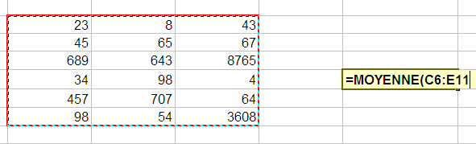
La plage a été générée toute seule dans la formule ! Fermez la parenthèse, validez, vous avez votre moyenne.
Cette technique est valable pour toutes les fonctions vues ci-dessus.
En règle générale, vous serez plus souvent amenés à faire une addition de toutes les valeurs d'une grande plage de cellules qu'une addition des valeurs de deux cellules ! ^^
Nous n'allons pas continuer à étudier chaque fonction : Excel en propose beaucoup (trigonométrie, etc) et un tutoriel y est consacré.
Exercice : des minutes aux heures et minutes
Pour mettre en pratique les fonctions, nous allons créer un petit convertisseur temporel. Dans une cellule vous rentrez un certain nombre de minutes, et dans une autre, on renvoie le nombre d'heures et de minutes correspondantes. Par exemple, pour 143 minutes, on devra renvoyer 2 h 23 min .
Je pense que vous avez remarqué que la conversion est aisée. 143/60 = 2 (/ étant la division entière, sous Excel la fonction QUOTIENT(x;y) ).
Le reste de la division euclidienne de 143 par 60 vaut 23. Il y a donc 23 minutes et 2 heures. Cette information, nous allons l'obtenir grâce à la fonction MOD(a ; b), qui permet de récupérer le reste de la division entière de a par b, avec b non nul évidemment. Par exemple, MOD(12 ; 6) renvoie 0 car 12 = 2*6 + 0 et MOD(12 ; 5) renvoie 2 car 12 = 2*5 + 2 :) . Ici MOD(143;60) renvoie donc 23.
Il y a donc deux calculs à faire, ce qui implique deux cellules différentes. Un artifice sur 4 cellules vous permet donc de renvoyer le résultat sous la forme x h y min.
La solution en secret, mais ça n'a pas du poser de problème.
En E3 notre nombre de minutes, c'est un entier positif, saisi par l'utilisateur. En G3, on a tout simplement = QUOTIENT(E3 ; 60) et en I3 = MOD(E3 ; 60)
Nous venons de finir avec les fonctions. Il est inutile de toutes les passer en revue. Vous connaissez les plus classiques et les plus utiles, le reste viendra en temps voulu :) .
Ici, nous sommes toujours sur les formules, donc, ça se tape toujours dans la barre de formules et ça commence toujours par le signe égal =. Toutefois, ce sont des formules un peu particulières, que l'on appelle les « conditions ».
Les conditions simples
Quand vous écrivez une condition, vous dites à Excel : « si telle cellule vaut tant, alors fais ceci, sinon, fais cela ». Vous saisissez l'intérêt du concept, maintenant ? ;)
Par exemple, je veux afficher « Oui » ou « Non » dans une cellule en fonction de la valeur d'une autre cellule. Si celle-ci est égale à 100, j'affiche « Oui », sinon, j'affiche « Non ».
Voici la syntaxe d'une condition :
=SI(condition;"Afficher si vrai";"Afficher si faux")
Je mets quoi à la place de « condition » ?
Différentes conditions sont possibles. Voici les opérateurs qui vont vous être utiles :
Opérateur
Description
=
Est égal à...
>
Est supérieur à...
<
Est inférieur à...
>=
Est supérieur ou égal à...
<=
Est inférieur ou égal à...
<>
Est différent de...
Si votre condition est : « Si la cellule B2 est supérieure ou égale à 45, alors... », vous remplacerez « condition » par B2>=45.
Voici comment ça se passe dans Excel :
Et voilà le résultat quand la cellule contient une donnée numérique différente de 100 :
Et quand la donnée est égale à 100 :
Les conditions multiples
Il existe deux formes de conditions multiples :
« Si cette cellule vaut tant et l'autre vaut tant, alors fais ceci, sinon, fais cela. »
« Si cette cellule vaut tant ou l'autre vaut tant, alors fais ceci, sinon, fais cela. »
Avant et après le ET ou le OU, vous mettez une condition. D'où le nom de condition multiple.
La différence entre ces deux cas, c'est que dans l'un les deux conditions doivent être remplies pour effectuer une tâche quelconque alors que dans l'autre, il faut qu'une seule condition soit remplie pour effectuer une tâche.
Mettons les choses au clair avec des schémas, comme nous les aimons tous.
Schémas de la condition multiple en ET
Schémas de la condition multiple en OU
Est-ce plus clair ? Si oui, la condition est respectée et vous pouvez passer à la suite. Sinon, la condition n'est pas respectée et vous devez relire les schémas. :p
Application
Maintenant que la différence est faite entre ET et OU, je propose de mettre en pratique ces fameuses conditions multiples.
Voici la syntaxe :
=SI(OPERATEUR LOGIQUE(condition1;condition2);"Afficher si vrai";"Afficher si faux")
Je mets quoi à la place de « opérateur logique » ?
Vous mettez soit ET, soit OU. :D
Mettons cela en pratique !
Comme avant, je veux afficher soit OUI ou NON en fonction de la valeur d'une cellule. Dans ce cas, prenons cette valeur à 100. Voici la formule, D6 étant la cellule où est stockée cette valeur :
Dans ce cas, il affiche OUI.
Mettez la valeur à 12, par exemple, il affichera NON.
Vous souvenez-vous de la poignée de recopie incrémentée ?
Allez, je la remets. :D
/* Va chercher dans les archives poussiéreuses... */
La voici la petite coquine :
Le petit carré noir, en bas à droite, qui recopie la valeur des cellules où vous voulez et qui reconnait quelques listes...
Ah ! Eh bien voilà ! J'étais sûr que vous vous en souviendriez !
J'ai un scoop, cette poignée est capable de recopier aussi vos formules et de les adapter !
Voyons avec un exemple très simple : une addition où je vais exceptionnellement ne pas utiliser une fonction mais bien un opérateur (+) :
Une vulgaire addition que j'aimerais recopier vers le bas. Seulement voilà, il serait difficile ( :D ) et trop long de faire un copier/coller de la formule sur toutes les cellules. J'utilise donc la poignée de recopie incrémentée sur ma formule :
Et j'obtiens un résultat spectaculaire : Excel a compris qu'il fallait « descendre » d'une cellule à chaque fois. Regardez, alors que ma formule de départ concernait la cellule G8, la case d'en dessus utilise la cellule G9. Eh oui, Excel est intelligent :
Et à quoi correspondent ces dollars $ dans les formules. Jamais vu encore... ?
Eh bien, les dollars servent à figer l'objet devant lequel il se trouve. Dans ce cas, il est devant la lettre de la colonne et le numéro de la ligne : la cellule E6 est totalement figée.
Si je ne l'avais pas fait, Excel aurait additionné les valeurs des cellules en dessous de E6, c'est-à-dire 0 (une cellule vide a pour valeur 0) !
Lorsque j'utilise la poignée sur une formule, Excel incrémente les cellules qui sont impliquées dans cette formule.
Les dollars me permettent d'éviter cette incrémentation, ce qui peut s'avérer utile.
Notez que ce signe peut être uniquement placé devant la lettre de colonne (il figera alors la colonne), ou uniquement devant le numéro de ligne (il figera alors la ligne).
Mises en forme conditionnelles
Il est possible d'agir sur la mise en forme de son classeur en fonction d'une condition. Imaginez que vous souhaitez faire une facture :
Pour avoir le total ligne par ligne, il faut multiplier le prix unitaire du produit par la quantité souhaitée par le client. Pour ne pas recopier la formule sur toutes les lignes, vous utilisez la poignée de recopie incrémentée que nous venons de voir. Et là, c'est le drame :
Parce qu'une cellule vide a pour valeur 0, Excel vous affiche le résultat, sur les lignes vides, du produit 0x0 = 0. C'est moche. Nous allons donc appliquer une mise en forme conditionnelle : si la valeur de la cellule vaut 0, alors je mets le texte en blanc. Sinon, je le mets en noir.
D'abord, il faut sélectionner les cellules sur lesquelles la mise en forme doit être appliquée (ça peut être comme ici une portion réduite de colonne mais vous pouvez sélectionner la colonne entière).
Dans l'onglet « Accueil », dans le groupe « Style », cliquez sur « Mise en forme conditionnelle ». Dans le menu déroulant, cliquez sur « Nouvelle règle » :
Dans la fenêtre qui s'ouvre, cliquez sur « Appliquer une mise en forme uniquement aux cellules qui contiennent ». Laissez la « Valeur de la cellule » mais vous choisissez « égale à » dans la seconde liste déroulante. Tapez « 0 » dans le troisième champ puis cliquez sur le bouton « Format ».
Dans cette nouvelle fenêtre, choisissez la couleur blanche en guise de police. Puis validez ces deux fenêtres :
Vous venez de faire une mise en forme conditionnelle : c'est-à-dire changer les propriétés d'une cellule en fonction de sa valeur. On peut faire pareil, mais en changeant la couleur de fond, par exemple. Notez que vous pouvez imposer une condition de supériorité, d'infériorité etc. Faites des essais en manipulant ces différents cas.
Je vous l'ai dit au début du cours, un classeur Excel est en fait un ensemble de feuillets. Vous pouvez en avoir autant que vous le souhaitez et vous pouvez effectuer diverses opérations dessus, comme les renommer ou encore les supprimer. J'explique en annexe comment effectuer toutes ces opérations.
Dans la pratique, il se peut que vos données soient réparties dans plusieurs feuillets différents, évidement nommés pour ne pas s'y perdre ;) . Dans ce cas, il sera très utile de pouvoir transmettre des données d'une feuille à l'autre, et c'est justement ce que nous allons voir maintenant.
La transmission de données d'un feuillet à l'autre se passe dans une formule. Ça tombe bien, vous savez maintenant de quoi il s'agit.
Prenons l'exemple avec deux feuillets « Source » et en « Cible ». Vous l'aurez sans doute compris, nous allons transmettre une donnée du premier feuillet vers le second :
Dans le feuillet « Source », tapez en B2 une donnée (numérique ou non, peu importe).
Pour récupérer cette donnée dans le feuillet « Cible », il faut préciser de quel feuillet notre donnée provient. Dans ce cas, la donnée à transmettre provient de « Source ». La formule sera donc :
=Source!B2
On précise de quel feuillet nous souhaitons importer les données au début de la formule avec le nom de la feuille suivi d'un point d'exclamation.
Si je tape cette formule en C5 de mon feuillet « Cible », je vais avoir le même texte qu'en B2 dans le feuillet « Source ».
A vous maintenant d'adapter cette méthode en fonction de vos besoins ! :D
Je ne sais pas si vous avez remarqué, mais lorsque vous tapez une formule et qu'elle est dépendante d'autres cellules, ces cellules portent un cadre de couleur pour vous aider dans la saisie. Comme ceci :
Cette astuce n'est valable que lorsque vous éditez la formule, c'est-à-dire lorsque vous la modifiez. Il est intéressant de voir d'un seul coup d'œil quelles sont les cellules qui sont utilisées dans une formule sans avoir à éditer la formule. De plus, si vous voulez le faire pour plusieurs cellules en même temps... vous l'avez deviné, c'est impossible.
Pour voir les dépendances qu'il existe entre les cellules, Excel propose deux fonctions. La première fonction est la suivante : "Repérer les antécédents" qui permet de repérer dans la feuille quelles sont les cellules qui influent sur la cellule sélectionnée. Réciproquement, la seconde fonction "Repérer les dépendants" permet de connaître quelles sont les cellules influencées par la cellule sélectionnée.
Ces deux fonctions se trouvent dans l'onglet Formules et dans le groupe Audit de formule.
Comment les utiliser ? C'est très simple, il suffit de placer le curseur sur la cellule de votre choix et ensuite de cliquer sur la fonction qui vous convient. Apparaissent alors des flèches bleues.
Et voilà, on peut alors voir toutes les dépendances des cellules entre elles sur une même feuille ! Pour supprimer les flèches, cliquez sur la fonction "Supprimer les flèches" dans le même groupe.
Avant de passer au chapitre suivant, je vous propose un exercice d'entrainement sur les formules. En effet, les formules constituent le noyau dur du tableur Excel car c'est votre premier outil d'analyse efficace des données.
Afin d'apprendre quelque chose durant cet exercice et de ne pas appliquer bêtement ce que vous venez de voir, je vous propose de travailler avec les dates. Excel propose plusieurs fonctions pour manipuler les dates, une sous-partie annexe vous explique tout cela, je vous demande d'en prendre connaissance.
Nos objectifs
L'utilisateur de votre tableur est invité à saisir une année (par exemple : 2015).
Vous devez renvoyer le jour du premier janvier, du premier mai, du 8 mai, du 14 juillet, du 15 août, du 11 novembre, du 25 décembre (c'est-à-dire si ça tombe un lundi, un mardi etc.) ;
Vous devez indiquer si oui ou non le 29 février existe dans l'année donnée, c'est-à-dire si l'année est bissextile ;
Vous devez renseigner le jour du jeudi de l'Ascension, de la Pentecôte, du lundi de Pentecôte, de Pâques et du lundi de Pâques.
Nos outils
La fonction DATE()
Bien que son utilisation soit expliquée en annexe, je vais tout de même vous apprendre à vous servir de la fonction DATE(). DATE a besoin de trois paramètres : l'année, le mois et le jour.
Comment savoir si une année est bissextile ?
Une année est bissextile si elle est multiple de 4 mais pas de 100. De plus, les années multiples de 400 sont bissextiles. Nous avons déjà vu dans notre exercice de conversion des minutes en heures et minutes que le reste d'une division d'un entier par un entier est obtenue grâce à la fonction MOD().
Par exemple, considérons l'année 2000. \frac{2000}{400} = 5. Le reste de cette division est donné par MOD(2000,400) et vaut 0. Donc, 2000 est divisible par 400, donc 2000 est bissextile.
Vous allez donc tout naturellement utiliser les conditions.
Autrement dit, il faut d'abord voir si l'année est multiple de 4. Si elle ne l'est pas, on s'arrête là, l'année n'est pas bissextile.
En revanche, si elle est multiple de 4, nous testons sa divisibilité par 100. Si elle est vérifiée, nous regardons si l'année est multiple de 400, et alors, elle est bissextile si c'est vérifié, sinon, elle ne l'est pas.
Voilà, vous venez de découvrir le premier outil d'analyse des données. C'est le plus utilisé.
On va en voir d'autres dans les chapitres suivants !
Sachez toutefois que nous proposons en annexe un (long) chapitre sur les fonctions d'Excel. C'est un index non exhaustif de fonctions rangées par catégories (Date & Heure etc.) et documentées (présentation, exemples) qui pourraient vous être utiles :) . N'hésitez pas à fouiner là-bas quand vous traitez des données.
Vous savez maintenant comment bien saisir des données et comment les analyser avec les formules. Contrairement à ce que vous pouvez penser, vous avez en main de précieux et puissants outils. Si vous avez un petit projet sur un tableur, il est fort probable que vous pouvez le réaliser maintenant. N'hésitez pas à consulter l'annexe sur les fonctions, qui présente beaucoup de fonctions selon leur catégorie (maths, dates etc.) avec un exemple concret à chaque fois.
Dans la deuxième partie, nous verrons d'autres outils d'analyse de données, tous plus puissants les uns que les autres. Nous verrons également comment faire des graphiques à partir d'une plage de données ou comment automatiser vos tableurs avec les macros.
Il peut être intéressant d'effectuer un premier tri dans ses données avant traitement. Par exemple, si vous demandez à un utilisateur de rentrer dans une cellule une date entre le 01 Janvier 2008 et le 31 Décembre 2012, qui peut garantir que la date saisie sera bien dans cet intervalle ? Il y aura toujours quelqu'un pour écrire une date de l'année 1999 ou 2013. Les outils que nous allons découvrir dans ce chapitre vous permettront de ne pas vous tromper dans la saisie, mais aussi de la simplifier... :)
Pour tout vous dire, nous allons nous intéresser au menu « Données ».
Nous allons nous servir ensemble d'une liste que je vous propose de télécharger :
Excel propose de nombreux outils pour trier vos données. Nous souhaitons par exemple trier les entrées d'un tableau par ordre alphabétique du prénom. Faisons donc un beau tableau bien structuré et sans espace entre les différentes lignes.
Sélectionnez tout ce tableau, puis, dans l'onglet « Accueil », dans le groupe « Édition », cliquez sur « Trier et filtrer ».
Un petit menu apparait. A partir de là, vous pouvez directement appliquer un tri de « A à Z » ou encore de « Z à A ». Si vous souhaitez personnaliser le tri, cliquez sur « Tri personnalisé » :
Vous avez alors une petite fenêtre qui s'ouvre qui permet d'aller plus vite dans les tris alphabétiques :
Une fenêtre s'ouvre et vous constatez qu'Excel reconnait parfaitement les colonnes du tableau sélectionné et vous demande ce que vous voulez tri (données, couleurs, icônes) et comment vous voulez le trier. Nous voulons ici trier les noms (la colonne « Nom ») par ordre alphabétique, nous nous occupons seulement d'une zone de tri. Appliquer ensuite un tri croissant en cochant "Croissant", les noms seront donc rangés par ordre alphabétique :
Par la même occasion, vous pouvez, si vous le désirez, trier par Age ou Score. Par défaut, Excel vous propose un seul niveau de tri, pour en ajouter, cliquer sur « Ajouter un niveau ».
Nous cliquons sur « OK », et notre tableau est désormais trié :
Dans cette sous-partie, nous allons continuer notre petit tour d'horizon du menu « Données », qui réserve encore bien des surprises. Cette fois-ci, nous voulons obtenir un tableau pré-rempli afin de le compléter en fonction de l'âge des participants à un concours. Ce concours est ouvert aux 12 - 17 ans.
La validation des données
Pour notre exemple, il faut dire à Excel que les valeurs des trois cellules vides doivent être comprises entre 12 et 17. Dans le cas contraire, Excel renvoie un message d'erreur et votre donnée ne sera pas saisie. :)
Sélectionnez ces cellules :
Allez ensuite dans l'onglet « Données », groupe « Outils de données », bouton « Validation des données » :
Une fenêtre s'ouvre alors :
Vous remarquez qu'elle est constituée de trois onglets. L'onglet ouvert par défaut est « Options ». C'est l'onglet qui nous intéresse.
Nous souhaitons que les cellules sélectionnées n'acceptent avant tout qu'un âge. Un âge étant un nombre entier, déroulez la liste « Autoriser » et choisissez « Nombre entier ».
Si vous déroulez le menu « Données », vous constaterez que vous êtes assez libres quant aux critères de validation de données. Par défaut, le critère est « comprise entre ». Et ça tombe bien puisque notre âge est compris entre « 12 » et « 17 ». Inscrivez « 12 » dans « Minimum » et « 17 » dans « Maximum ».
Cliquez enfin sur « OK » :
Vous pouvez à présent essayez de taper 3 dans l'une de ces cellules paramétrées... Excel vous renvoie un petit message d'erreur !
Il n'y a plus qu'à cliquer sur « Annuler ». On constate qu'Excel supprime toute valeur qui ne correspond pas à vos critères !
La personnalisation du message d'erreur
Nous avons vu qu'il y avait plusieurs onglets dans la fenêtre des « Validation des données ». Retournez sur cette fenêtre car c'est ici que nous allons pouvoir personnaliser votre message d'erreur correspondant à une saisie invalide ! N'oubliez pas de sélectionner les cellules concernées avant.
Dans la fenêtre, cliquez sur l'onglet « Alerte d'erreur » :
Dans la liste des « Style », vous pouvez définir le type de boîte de dialogue qui apparaîtra. En fait, cela ne change pas grand-chose mis à part que l'icône de la boîte de dialogue sera différent selon son type. La fenêtre aura également un ou deux boutons de plus ou de moins selon son type. Sous les vieux Windows (98 et 95), on pouvait entendre un bruit sourd émis par l'ordinateur quand une boîte de type « Arrêt » apparaissait (quel bon souvenir d'enfance ^^ ). Bref, le style est par défaut sur « Arrêt » et je vais le laisser tel quel. Libre à vous de faire vos propres tests ensuite.
Excel comprend que ce message doit apparaître quand des données non valides sont tapées. C'est en effet ce pour quoi la case juste au-dessus est cochée.
Il ne vous reste plus qu'à personnaliser le message d'erreur avec un titre et un message. Cliquez sur « OK » :
Puis essayez de taper une donnée non valide :
Dans la fenêtre de « Validation des données », il reste un troisième onglet : « Message de saisie ». Il vous permet d'afficher un message lorsqu'une cellule aux données restreintes est sélectionnée :
Nous nous sommes intéressé au menu « Données » et plus particulièrement à la « Validation de données ». Dans cette sous-partie, nous resterons toujours dans la fenêtre de validation afin de créer une liste déroulante, qui facilitera la saisie. Voici ce que nous allons faire :
Alors ? ^^ C'est parti, je vous explique !
Tout d'abord, sélectionnez les mêmes cellules concernées dans notre bon vieux tableau. Cliquez sur « Données » puis sur « Validation des données ».
Dans la liste « Autoriser« », choisissez « Liste », qui permet de paramétrer une liste déroulante avec vos propres informations.
Pour compléter votre liste (une liste vide n'est que de peu d'utilité), il va falloir compléter le champ « Source ».
Deux solutions s'offrent à vous :
Première solution
Vous pouvez saisir le contenu de votre liste manuellement, en séparant chaque élément par un point-virgule.
Cette méthode est tout à fait convenable pour des petites listes comme ici. Le problème, c'est que si vous décidez un jour d'agrandir votre liste, la manipulation sera un peu fastidieuse puisqu'il faudra sélectionner les cellules concernées, revenir dans cette fenêtre et enfin, modifier. Ici, ça va encore puisque nous travaillons sur très peu de cellules.
Deuxième solution
La deuxième solution, pour pallier à ce problème, reste de sélectionner à l'aide de la petite flèche rouge à droite du champ les informations. Cela revient à mobiliser quelques cellules de votre zone de travail et à écrire dans chacune d'elles un nombre.
Dans votre zone de travail, trouvez-vous un coin à délimiter et dans lequel vous saisirez les données de votre liste. Avec la flèche rouge à droite du champ « Source », sélectionnez ces données, revenez dans votre fenêtre et cliquez sur « OK ».
Vous avez de jolies listes déroulantes.
Il est maintenant tant d'apprendre à analyser vos données avec de puissants outils d'Excel.
Les listes de données... vous les croyez enterrées ? Eh bien non, elles reviennent à la charge ! :pirate: Ce coup-ci, c'est pour l'analyse et non pour la saisie. Au programme : listes déroulantes à gogo et quelques formules bien mastoc ! Le tout pour vous y retrouver, filtrer et impressionner la galerie !
Pour pouvoir vous entraîner avec moi durant ce chapitre, je vous propose un nouveau classeur à télécharger :
Les filtres, appliqués à une liste, permettent de visionner certains éléments de cette liste en fonction d'autres.
Par exemple, vous avez un tableau qui contient les notes de 10 élèves dans 5 matières différentes. Grâce aux filtres, vous pourrez afficher uniquement les notes de tel élève, celles qui sont au-dessus de 10, etc.
Bref, elles font partie de ce que nous pourrions appeler les « notions avancées d'Excel ». Peu de personnes pensent à les utiliser : leur puissance en est négligée.
Prenons notre liste :
Vous voyez que c'est un véritable bazar ! Encore, ça va parce qu'il n'y a que 2 matières mais imaginez qu'on ait mis 35 élèves et 8 matières. o_O
Les filtres vont nous aider à faire un tri simple, efficace et à nous y retrouver. ;)
Notre tableau est exploitable, on peut donc analyser les données qui s'y trouvent !
Sélectionnez toutes les cellules qui composent ce fameux tableau puis allez dans l'onglet « Insertion » et dans le cadre « Tableaux », cliquez sur le bouton « Tableau » :
Il vous ai ensuite demandé de sélectionner le tableau en question, attention à bien préciser que les en-têtes de votre tableau figurent dans votre sélection :
Voilà qui est fait.
À première vue, rien n'a changé mais penchez-vous sur les titres des colonnes :
:waw: Des listes déroulantes ! Ce sont elles qui vont filtrer vos données.
Déroulez par exemple la liste de la colonne « Note ». Si vous sélectionnez 8, vous aurez dans votre tableau toutes les lignes dont la note est 8, en l'occurrence Mathieu !
Lorsqu'un filtre est activé, c'est un mini-entonnoir qui est apparu à la place de la flèche et cette dernière est positionnée en bas à gauche de l'entonnoir :
Les filtres personnalisés
Ça y est, vous êtes heureux avec ces filtres mais saviez-vous que vous pouvez les personnaliser ?
Ah oui, non, c'est vrai, vous ne saviez pas. :p
Cliquez sur une des listes déroulantes et choisissez « Filtre numérique », puis « Filtre personnalisé... » dans la nouvelle liste qui vient d'apparaitre :
Une fenêtre s'ouvre alors :
À partir de là, vous pouvez faire ce que vous voulez !
Choisissez selon vos bons plaisirs dans les listes déroulantes, mettez des valeurs dans les champs... Je ne peux plus vous guider ici : c'est vous le patron. :)
Il est également possible d'analyser sa liste avec une fonction méconnue, aux explications généralement floues, mais d'une puissance exceptionnelle : « SOMMEPROD ».
Bon, tu nous dis du bien de cette fonction, mais on ne sait pas vraiment ce qu'elle a de si particulier juste en voyant son nom... et encore moins sans description !
J'y viens. Elle permet de comptabiliser des données en multipliant des matrices entre elles. :-°
Pour être claire, elle permet de compter le nombre d'entrées d'une liste selon des conditions mais aussi d'additionner des cellules d'une liste selon des conditions. Ce n'est toujours pas très clair ? Je vous donne la fonction et tout de suite un exemple, ça vous aidera surement à comprendre.
Alors c'est mieux ? On peut compter le nombre de lignes où la plage1 (colonne 1) est égale à critère1 et où la plage2 (colonne 2) est égale à critère2.
Nous allons utiliser un nouveau tableau (plus long) pour les exemples :
Pour me suivre durant cet exercice, vous pouvez télécharger ce nouveau tableau :
Notez néanmoins que travailler un peu votre saisie ne peut pas vous faire de mal. ;)
Ce tableau représente les ventes de chaque vendeur d'un magasin sur les trois premiers mois de l'année. Il y a 4 vendeurs (Jean, Pierre, Paul, Jacques).
Comment faire pour savoir le nombre de ventes de Paul au mois de Mars ? En utilisant la fonction « SOMMEPROD ». Pardi !
Pour cela il faut entrer la formule suivante :
=SOMMEPROD((A2:A31="Paul")*(B2:B31="Mars"))
On obtient bien 3 ! Eh oui Paul a fait 3 ventes au mois de mars. Maintenant on cherche à savoir combien d'argent a rapporté Paul au mois de Mars. Il suffit de multiplier par la colonne "Montant" de cette manière :
Tada ! On obtient donc 2230. En effet la fonction a effectué le calcul suivant : 840+660+730=2230. C'est top non ? On peut faire plein de combinaisons avec cette formule ! Mais attention il y a quelques règles à respecter :
Je vous propose d'autres exemples pour bien comprendre et voir un peu ce que l'on peut faire avec cette fonction.
Exemple 1
Il est possible de compter le nombre de ventes réalisées par Jean (on peut aussi réaliser cette opération avec la fonction NB.SI) :
=SOMMEPROD((A2:A31="Jean")*1)
On obtient ainsi : 8. Cet exemple n'est pas le meilleur pour montrer la puissance de la fonction mais elle montre qu'on n'est pas obligé d'avoir beaucoup de paramètres compliqués.
Exemple 2
Il est aussi possible de compter le nombre de ventes supérieures à 600€ au mois de Janvier :
=SOMMEPROD((B2:B31="Janvier")*(C2:C31>600))
On obtient ainsi : 2. On peut ainsi combiner les conditions pour prendre les valeurs comprises entre 200 et 600 par exemple.
Exemple 3
Enfin, dernier exemple, nous pouvons totaliser la somme accumulée grâce à Pierre aux mois de Janvier et Mars : =SOMMEPROD((A2:A31="Pierre")*((B2:B31="Janvier")+(B2:B31="Mars"))*(C2:C31))
On obtient ainsi : 2760.
Je viens donc de vous montrer la puissance de cette fonction, qui peut s'avérer très utile dans des longues listes présentant beaucoup de critères.
Voilà pour les listes de données et leurs filtres.
Je vous conseille de bien appréhender ce chapitre : nous ne pourrons pas nous passer des données filtrées dans le chapitre suivant ! :-°
Dans la suite des listes, nous continuons notre tour des fonctionnalités utiles et intéressantes d'Excel.
Puisque vous savez déclarer une liste de données propre et lisible, il est temps de l'exploiter encore plus ! :pirate:
C'est ce que nous allons voir ici avec les graphiques. Le principe est simple : vous donnez une liste à Excel et paf ! Il vous pond un joli graphique selon vos critères.
Il n'y a rien de bien difficile dans les graphiques. Ils sont d'ailleurs à terme assez peu utilisés. Un graphique, ça prend de la place et ce n'est pas forcement ce qu'il y a de mieux pour analyser une liste... Mais tout dépend de vos besoins !
Des graphiques basiques : Excel propose de nombreux modèles de graphiques prédéfinis à adapter à une même liste de données.
Nous verrons ensuite qu'il est possible d'utiliser le graphique dans les sciences expérimentales ! Grâce à des valeurs saisies manuellement, vous pourrez dessiner une courbe de tendance, la modéliser selon des modèles mathématiques pré-définis et même afficher son équation. Que du bon ! :D
Avant de commencer à définir un graphique, il vous faut au moins une plage de données propre. Le principe de création d'un graphique est simple :
Premièrement, vous saisissez des données dans le tableur, comme d'habitude ;
Ensuite, vous sélectionnez ces données et vous définissez un graphique ;
Enfin, vous personnalisez votre dessin.
Nous vous proposons de commencer petit et facile. Nous allons faire la courbe d'évolution du nombre de cours sur le Site du Zéro en fonction du temps. Le Site du Zér0 existe depuis 1999 mais il n'est permis aux membres de rédiger leurs propres cours que depuis 2005. Nous devrions donc voir un pic d'évolution à la date t = 2005.
Nous n'avons pas de statistiques officielles sous le coude. Nous avons inventé ces données en respectant toutefois le principe suivant : avant 2005, le nombre de cours se comptait sur les doigts de la main :p .
Voici nos valeurs, libre à vous d'inventer les vôtres ou de recopier les nôtres. Jusqu'ici, vous ne devriez pas trop être dépaysés.
Néanmoins, je vous propose de télécharger ce tableau, de manière à avoir les mêmes valeurs que le tutoriel :
Excel propose plusieurs modèles de graphiques : courbes, nuage de points, camemberts, histogrammes, modèles 3D...
Le but n'est pas de tous les passer en revue. Vous pourrez le faire très facilement ensuite. Non, ici, il est temps de voir comment dessiner le graphique. Nous ferons une courbe.
Sélectionnez votre plage de données sans les étiquettes de colonnes. Allez dans l'onglet « Insertion », dans la rubrique « Graphique » et cliquez sur « Ligne ». Un menu se déroule, cliquez sur la première image :
Un graphique apparaît alors ! Nous allons maintenant voir les différentes options permettant de le personnaliser.
On obtient deux courbes, l'une sur le nombre de tutoriels et l'autre sur l'évolution des dates. Cette seconde courbe ne sert pas à grand-chose, elle devrait être en abscisse d'ailleurs. L'abscisse, c'est l'axe horizontal du graphique. On va modifier tout ça.
La courbe bleue, on n'en veut plus. On va simplement cliquer dessus et appuyer sur la touche Suppr. Et hop ! Elle disparaît. C'est bien parti.
Ensuite dans l'onglet « Création » (de l'outil de graphique, il faut donc que le graphique soit sélectionné en cliquant dessus si ce n'est déjà fait) et dans la rubrique « Données », cliquez sur « Sélectionner des données ».
Une fenêtre s'ouvre alors :
Qu'est ce qu'on va faire de cette fenêtre maintenant ? On va modifier les « Étiquettes de l'axe horizontal (abscisse) ». Cliquez sur « Modifier » et ensuite, sélectionnez la colonne des années que l'on a dans le tableau. Cliquez sur « OK » deux fois et le graphique se met à jour.
On va maintenant changer le titre du graphique et les titres des axes, parce que là, on ne devine pas ce que le graphique représente (même avec cette croissance fulgurante ;) ). Pour cela on se positionne sur l'onglet « Disposition » (onglet des « Outils de graphique ». Dans la rubrique « Étiquettes », nous avons deux outils qui nous sont utiles : « Titre du graphique » et « Titre des axes ».
Pour modifier le titre du graphique, rien de plus simple. On va cliquer sur « Titre du graphique » et sélectionner la position où l'on veut qu'il soit. 3 possibilités : au dessus du graphique, sur le graphique ou aucun (notez que l'on peut changer la position même après avoir changé le texte donc rien de grave si la position ne convient pas pour l'instant).
Pour changer le texte du titre, on clique sur le titre du graphique où par défaut il est inscrit très originalement « Titre du graphique ». Nous allons donc écrire à la place : nombre de cours sur le Site du Zéro en fonction du temps. Vous pouvez modifier la police du titre comme toutes les autres polices en vous rendant dans l'onglet « Accueil ».
Et pour les titres des axes ? Même façon de procéder. On va simplement cliquer sur « Titre des axes ». Un menu se déroule, l'un pour l'axe horizontal l'autre pour l'axe vertical. Vous avez ici une façon de positionner l'axe horizontal mais 3 pour l'axe vertical, à vous de tester et choisir celle qui vous convient. Même procédé que pour le titre du graphique pour changer le texte. Voici ce que l'on obtient :
On va maintenant embellir notre graphique et le personnaliser. Pour commencer, la légende à droite ne sert pas à grand-chose, deux solutions pour l'enlever. La première, dans l'onglet « Disposition », la rubrique « Étiquettes », cliquez sur « Légende » puis « Aucune ». La seconde, cliquez droit sur la légende puis sur « Supprimer ».
Pour modifier l'apparence de la courbe, on clique droit sur la courbe (il faut être un minimum précis pour bien cliquer dessus) et dans le menu déroulant, cliquez sur « Mettre en forme une série de données... ». Une fenêtre s'ouvre avec plusieurs onglets en colonne. A vous de voir ce que vous voulez modifier, faites des tests :
Les modifications sont instantanées, alors en déplaçant la fenêtre sur le côté, on peut voir ce que ça donne avant de fermer la fenêtre.
Pour le fond du graphique, même chose : clique droit sur la zone de traçage (tout le fond du graphique). Dans le menu déroulant, cliquez sur « Mise en forme de la zone de traçage... ». Une fenêtre s'ouvre avec plusieurs options, à vous de vous amuser !
Nous nous arrêtons là dans l'aide à la personnalisation des graphiques, mais il y a encore beaucoup, mais quand je dis beaucoup, c'est beaucoup d'options. Baladez-vous dans les 3 onglets spécifiques au graphique et voyez ce qui est modifiable ! Si vous avez des questions pour modifier quelque chose de spécifique, il vous reste le forum.
La courbe sous Mac
Le programme est globalement le même, hormis un bandeau vert qui se déroulera sur la fenêtre après avoir cliqué dans le menu « Insertion » puis sur « Graphique ». C'est le seul changement majeur :) . Le bandeau permet de sélectionner le type de graphique à appliquer. Bref, on vous demande de cliquer après avoir sélectionné vos données : rien de bien compliqué. Vous pourrez modifier vos paramètres à coup de clics droits bien placés, comme ci-dessus.
Excel dispose d'autres outils pour manipuler les graphiques, ou plutôt pour les exploiter. En sciences expérimentales (d'un niveau lycée), on fait faire aux élèves des relevés sur un système chimique par exemple, et on fait comparer ces données à une théorie. Ainsi, on cherche à obtenir des courbes à partir des données expérimentales qui se rapprochent le plus des courbes théoriques. Pour effectuer ces fameuses comparaisons, Excel vous propose plusieurs outils.
La courbe de tendance
Tracer une courbe de tendance revient à tracer une courbe qui s'approchera le plus possible de tous les points du graphe.
Voyons ça sur un exemple. Peu importe le support, nous vous avons personnellement choisi les relevés d'un TP de physique de terminale. Nous vous suggérons de télécharger les données sur lesquelles nous allons travailler. A votre niveau, il n'est plus question de s'attarder sur la saisie d'informations :) .
Faites un graphique de type « nuage de points » à partir des données des colonnes « d » et « u » (« u » en abscisse (X) et « d » en ordonnées (Y)). Après quelques réglages de couleurs, voici ce que nous pouvons obtenir :
Pour ajouter notre fameuse courbe de tendance, qui, on le rappelle, passera au plus près de tous les points, faites un clic droit sur un des points et cliquez sur : « Ajouter une courbe de tendance ».
Dans la fenêtre qui s'ouvre, on va vous demander selon quel modèle modéliser la courbe (linéaire, polynomiale etc.). Dans le cas des sciences expérimentales, vous pouvez parfois connaître le modèle mathématique de ce que vous mesurez. Ce n'est pas toujours le cas. Sélectionnez Linéaire pour être sûr que tout ira bien :) .
Sous Mac, le choix du type de courbe se fait dans l'onglet « Type » de la fenêtre qui s'ouvre.
Après validation, votre courbe de tendance apparaît. Vous pouvez modifier son apparence en cherchant dans le menu contextuel qui s'ouvre après un clic droit sur cette courbe. Vous êtes des grands désormais :D .
L'équation de la courbe de tendance
Vous pouvez afficher sur le graphique l'équation de la courbe de tendance (dans le cadre de notre étude quantitative de la diffraction de la lumière, c'est d'ailleurs très utile ^^ , mais passons). Faites un clic droit sur la courbe de tendance puis sur « Format de la courbe de tendance ». Dans l'onglet « Options », cochez « Afficher l'équation sur le graphique » :
N'hésitez pas à explorer les différents types de graphiques proposés par Excel. Vous en trouverez bien un qui vous convient. Dans le chapitre suivant, nous continuons l'analyse de nos listes, mais avec un concept bien plus puissant mais aussi un peu plus difficile...
Maintenant que vous savez parfaitement saisir des données, les analyser d'une manière plus que basique, il est temps de s'attaquer à l'outil d'analyse le plus puissant d'Excel : « les tableaux croisés dynamiques ».
Le nom de cette notion est déroutant, nous vous l'accordons. Cette fonctionnalité du tableur est assez peu utilisée, pourtant rudement pratique, notamment sur les longues listes, et est un peu plus compliquée que les autres.
Prérequis fondamental : les listes de données. Car comme bien souvent, on analyse une liste, il faut donc être au point une bonne fois pour toutes dessus.
« Tableaux croisés dynamiques ». En fait, comme son nom l'indique, nous allons « croiser » les données d'une liste.
Mettez-vous dans le contexte : une longue liste de données, très longue. Plusieurs étiquettes de colonnes, des informations alphabétiques, numériques etc. Le tableau croisé dynamique créé à partir de cette longue liste va vous permettre d'obtenir notamment des statistiques, toujours aussi simplement que d'habitude, avec un glisser-déposer.
Mais alors où est le piège si c'est un simple glisser-déposer ?
L'embêtant n'est pas tellement de mettre debout un tableau croisé dynamique (que nous abrégerons désormais TCD), mais bien de l'organiser.
Un outil statistique puissant
Après la construction d'un TCD à partir d'une longue liste, vous devez le mettre en forme. Les TCD combinent format de cellules et listes déroulantes. Une fois la mise en forme effectuée, vous obtenez de belles statistiques.
Par exemple, les moyennes des ventes réalisées par un vendeur au mois de Janvier, puis de Février etc. Avec une liste déroulante, vous pouvez changer de vendeur et observer ses résultats. La moyenne peut être faite avec une formule, c'est vrai, mais il faudra élargir la plage d'entrée à chaque nouvelle saisie dans la liste. Bref, les TCD, c'est puissant car ils combinent plusieurs outils d'analyse en un tableau.
La notion de TCD est encore floue pour vous. Je vous propose de travailler par l'exemple et d'en construire un ensemble. Nous nous occuperons de son organisation ensuite.
Si vous avez bien suivi, vous avez parfaitement compris qu'il nous fallait une liste de données avant de commencer les manipulations, liste qui se voudra de préférence bien longue. Deux choix s'offrent à vous :
Saisir vous-même la liste. Cela vous fera travailler la saisie mais on se retrouve dans quelques heures
Télécharger une liste de données idéale toute prête :)
A vous de voir si vous préférez le masochisme ou saisir le plateau d'argent qui est à votre disposition. Nous allons travailler sur une liste de 51 entrées, qui récapitule l'âge, le sexe, le jeu joué et le score de chaque participant à une soirée Jeux.
Nous souhaitons obtenir diverses statistiques : qui est le vainqueur de chaque jeu, quel est le jeu préféré des femmes, quel est le jeu préféré des hommes, quel est le score moyen à chaque jeu, le score moyen des hommes, le score moyen des femmes, le cumul de points de chaque sexe, de chaque âge etc etc. Sachez que toutes ces statistiques, qu'on pouvait obtenir laborieusement à coup de formules, de graphiques etc. vont apparaître dans le TCD ! Bien évidemment pas toutes à la fois, il faudra modifier l'organisation du TCD pour obtenir chaque statistique souhaitée, mais le gain de temps et de clarté est tout de même énorme.
Pour le moment, nous devons construire notre TCD à partir de la fameuse liste :
Sélectionnez toute la liste de données, délimitée par une bordure rouge dans les fichiers proposés. N'oubliez pas de sélectionner les étiquettes de colonnes, c'est très important. Dans l'onglet « Insertion », cliquez sur « Tableau croisé dynamique » :
Une fenêtre demande de confirmer la plage de saisie du tableau et vous demande si vous souhaitez mettre le TCD dans une nouvelle fenêtre Excel ou dans l'actuelle :
Vérifiez la plage du tableau et confirmez la nouvelle feuille. Apparaissent alors deux onglets ainsi qu'un module à droite de l'écran :
Les deux onglets Options et Création du groupe Outils de tableau croisé dynamique
Le module de champs de tableau croisé dynamique
Sur ExcelSur la fenêtre qui s'ouvre, il faut cliquer sur « Disposition », afin de construire le TCD. S'il y a plusieurs fenêtres, cliquez sur « Suivant » jusqu'à arriver à la fenêtre ayant pour intitulé la « Disposition ».
Une fenêtre s'ouvre, vous invitant à bâtir votre TCD à coups de glissés-déposés peu ordinaires :
C'est ici que se fait la construction du TCD.
Pas si simple !
La procédure étant différente sur Windows et sur Mac, je vais vous la présenter pour ces deux systèmes.
Sur Windows
La première fois que l'on arrive ici, tout semble incompréhensible et difficile. A droite, dans le module, vous reconnaissez les étiquettes des colonnes de notre liste ainsi que les zones du TCD où seront déposées les étiquettes. Au milieu, vous avez un schéma du TCD que vous verrez une fois construit dans votre feuille de calcul. Nous croisons donc les données des lignes et des colonnes pour obtenir les résultats du milieu. Qu'attendons-nous ?
Il faut ainsi glisser les noms des étiquettes de colonne sur l'un des quatre champs du TCD.
L'étiquette « Numéro de concours » ne va servir à rien ici. Elle permet juste d'identifier chaque joueur dans la liste. Nous l'oublions donc.
Allons-y pour les autres. Nous souhaitons d'abord voir les totaux des points marqués à chaque jeu pour les hommes et les femmes, ainsi que la somme des deux. Cette première série statistique est un peu « bateau », je vous l'accorde, mais il faut commencer doucement.
Puisque nous voulons visualiser les scores, nous glissons l'étiquette de colonne « Score » sur la zone « Valeurs ». Jusqu'ici, tout devrait aller.
On veut un découpage des scores en fonction du sexe des participants et des jeux joués. Pas de problème, dans le champ « Ligne » nous glissons l'étiquette « Jeu » et dans le champ « Colonne », nous glissions « Sexe ».
Notez que nous aurions pu faire l'inverse, c'est ensuite une question de goût sur le résultat final. Nous venons d'anticiper les croisements des données de notre liste sous forme d'un tableau. Il n'y a plus qu'à fermer ce module complémentaire.
Et d'un ! Votre tableau croisé dynamique apparaît !
Ainsi, sur tous les points marqués dans la soirée, 247 ont été fournis par les joueurs d'Urban Terror. Les femmes ont marqué 33 points à ce jeu et se sont d'ailleurs faîtes bien massacrées par les hommes contre 214 points. :pirate:
Il est aussi possible de changer le filtre des champs en cliquant sur les flèches à droite de ceux-ci. Nous l'avons déjà vu dans un précédent chapitre.
Nous allons maintenant voir comment modifier simplement ce TCD, sans avoir à tout refaire.
Sur Mac
La première fois que l'on arrive ici, tout semble incompréhensible et difficile. A droite, vous reconnaissez les étiquettes des colonnes de notre liste. Au milieu, vous avez un schéma du TCD que vous verrez une fois construit dans votre feuille de calcul. Nous croisons donc les données des lignes et des colonnes pour obtenir les résultats du milieu. Qu'attendons-nous ?
Il faut ainsi glisser les noms des étiquettes de colonne sur l'un des quatre champs du TCD.
L'étiquette « Numéro de concours » ne va servir à rien ici. Elle permet juste d'identifier chaque joueur dans la liste. Nous l'oublions donc.
Allons-y pour les autres. Nous souhaitons d'abord voir les totaux des points marqués à chaque jeu pour les hommes et les femmes, ainsi que la somme des deux. Cette première série statistique est un peu « bateau », je vous l'accorde, mais il faut commencer doucement.
Puisque nous voulons visualiser les scores, nous glissons l'étiquette de colonne « Score » sur le champ « Données ». Jusqu'ici, tout devrait aller.
On veut un découpage des scores en fonction du sexe des participants et des jeux joués. Pas de problème, dans le champ « Ligne » nous glissons l'étiquette « Jeu » et dans le champ « Colonne », nous glissions « Sexe ».
Notez que nous aurions pu faire l'inverse, c'est ensuite une question de goût sur le résultat final. Nous venons d'anticiper les croisements des données de notre liste sous forme d'un tableau. Il n'y a plus qu'à cliquer sur « Ok », puis sur « Fin ».
Et d'un ! Votre tableau croisé dynamique apparaît !
Ainsi, sur tous les points marqués dans la soirée, 247 ont été fournis par les joueurs d'Urban Terror. Les femmes ont marqué 33 points à ce jeu et se sont d'ailleurs faîtes bien massacrées par les hommes contre 214 points :pirate: .
Chouette n'est-ce pas ? Reposez-vous, c'est mérité. Nous allons maintenant voir comment modifier simplement ce TCD, sans avoir à tout refaire.
Là encore, la façon de faire est différentes sur Windows et Mac. Voyons l'un après l'autre.
Sur Windows
Votre premier TCD est bien basique. Sur les 4 champs du schéma, nous n'en avons rempli que 3. Retournons dans le module permettant la conception du TCD.
Cochez la case de l'étiquette Age » et glissez-la dans la zone « Filtre du rapport ». Comme nous avons glissé l'étiquette Age, nous pourrons trier les scores de chaque jeu de chaque sexe en fonction de l'âge des participants.
Votre TCD a été modifié et vous voyez apparaître en haut du tableau un filtre. Fermez le module. Et admirez le résultat :
Un filtrage a été effectué pour ne garder que les joueuses et les joueurs de 16 ans. Les femmes de 16 ans sont accrocs à Halo.
Voilà. Les données peuvent être ainsi filtrées et interprétées de différentes manières. La liste analysée a suffisamment de champs et d'entrées pour être tournée dans tous les sens. :) Modifiez le TCD à votre sauce, faites des tests, il n'y a que comme ça que ça rentre. Pourquoi ne pas croiser les données d'âge et de sexe pour visualiser les scores, tout en permettant un filtrage par jeu ? A vous de voir !
Une fois ces manipulations maîtrisées, rendez-vous au chapitre suivant !
Sur Mac
Votre premier TCD est bien basique. Sur les 4 champs du schéma, nous n'en avons rempli que 3. Retournons dans la fenêtre permettant la conception du TCD. Cliquez au hasard dans votre TCD. Dans la barre d'outils qui vient à côté de votre tableau, cliquez sur le bouton « Assistant Tableau Croisé Dynamique ».
Une fenêtre s'ouvre, cliquez sur « Disposition », comme pour la création.
Glissez simplement l'étiquette « Age » sur le champ « Plage ». Le champ Plage permettra d'obtenir des filtres sur son TCD. Comme nous avons glissé l'étiquette Age, nous pourrons trier les scores de chaque jeu de chaque sexe en fonction de l'âge des participants.
Cliquez sur « Ok » puis sur « Fin », comme auparavant. Votre TCD a été modifié et vous voyez apparaître en haut du tableau un filtre.
Un filtrage a été effectué pour ne garder que les joueuses et les joueurs de 16 ans. Les femmes de 16 ans sont accrocs à Halo
Voilà. Les données peuvent être ainsi filtrées et interprétées de différentes manières. La liste analysée a suffisamment de champs et d'entrées pour être tournée dans tous les sens :) . Modifiez le TCD à votre sauce, faîtes des tests, il n'y a que comme ça que ça rentre. Pourquoi ne pas croiser les données d'âge et de sexe pour visualiser les scores, tout en permettant un filtrage par jeu ? A vous de voir !
Une fois ces manipulations maîtrisées, rendez-vous au chapitre suivant !
Résumons
Un tableau croisé dynamique (TCD) permet d'analyser une liste de données. Cette notion est considérée comme la plus puissante d'Excel ;
Le TCD fournit des statistiques détaillées sur votre liste, selon la manière dont il est construit ;
On construit un TCD en effectuant un glisser-déposer d'étiquettes de colonnes sur l'une des quatre zones du TCD. Le champ « Plage » permet d'obtenir un filtre.
Nous continuons notre tour d'exploration des TCD. Nous allons nous concentrer ici sur la mise en forme des données, afin d'obtenir les statistiques désirées dans des formes variées et intéressantes.
Nous allons travailler ici sur un TCD simplifié, toujours créé à partir de notre liste de jeux.
Le tableau sur Windows
Le tableau sur Mac Un tri (selon cette disposition) effectué sur les jeux (ici Urban Terror) nous permet de visualiser la somme des âges des participants de chaque sexe.
Et là, c'est le problème. Nous voulions savoir la moyenne d'âge des joueuses d'Urban Terror et la moyenne d'âge des joueurs d'Urban Terror. Plutôt raté puisqu'Excel fait la somme des âges des participants...
Nous allons donc corriger ce problème !
Sur Windows
Retournez dans les onglets des TCD et faites apparaitre le module. Cliquez sur l'étiquette de colonne « Somme sur Age » puis sur « Paramètres des champs de valeur ».
Une fenêtre s'ouvre. Dans la liste déroulante de gauche, cliquez sur « Moyenne », puisque nous voulons une moyenne d'âge :
Le bouton « Format de nombre » en dessous vous permet de mettre en forme vos données avec des formats que vous connaissez bien (Standard, Nombre etc.). Allez faire un tour de ce côté là si vous le souhaitez pour par exemple avoir des moyennes avec une ou deux décimales.
Cliquez sur « Ok ». Vous voyez ainsi que les joueuses et les joueurs de Urban Terror ont en moyenne 18 ans.
Avec le filtre des jeux, vous pouvez passer aux Sims 3 par exemple. Comme votre mise en forme ne bouge pas, vous voyez que les joueuses des Sims 3 ont en moyenne 18 ans et les joueurs 21 ans, la moyenne d'âge de tous les joueurs des Sims 3 étant de 19 ans.
En plaçant le filtre sur « Tous », vous avez la moyenne d'âge de tous les participants de la soirée, ainsi que les moyennes d'âge de toutes les femmes et de tous les hommes. :D
Bien, non ? Mais vous n'êtes pas encore au bout de vos surprises en ce qui concerne la mise en forme d'un TCD.
Des pourcentages !
Les pourcentages sont très pratiques dans l'analyse d'une longue liste car ils vous permettent de visualiser des données en un clin d'œil. Voici la nouvelle disposition du TCD à réaliser :
Nous voulons tout simplement savoir quel est l'âge le plus représenté parmi les joueurs. Faites un double-clic sur « NB sur Jeu ». Dans la fenêtre qui s'ouvre, cliquez sur l'onglet « Afficher les valeurs ». Dans la liste déroulante, choisissez « % du total général ». Cliquez ensuite sur « Format de nombre » puis sélectionnez « Pourcentage ». Vous savez ainsi à combien de % sont représentés les âges à sa soirée Jeux.
Les joueurs de 18 ans sont les plus représentés
Oui mais si 3 fois plus d'âges étaient représentés ? Le TCD aurait été 3 fois plus long et difficilement lisible !
Exact, d'ailleurs, tel quel, c'est difficilement lisible et les filtres auraient pu faire ce travail plus proprement et en moins de temps. Pour pallier ce problème, nous allons utiliser « les groupes ».
Sur Mac
Retournez dans la fenêtre de disposition de votre TCD et faites un double-clic sur l'étiquette de colonne « Somme sur Age ».
Une fenêtre s'ouvre. Dans la liste déroulante de gauche, cliquez sur « Moyenne », puisque nous voulons une moyenne d'âge.
Le bouton « Nombre » à droite vous permet de mettre en forme vos données avec des formats que vous connaissez bien (Standard, Nombre etc.). Allez faire un tour de ce côté là si vous le souhaitez pour par exemple avoir des moyennes avec une ou deux décimales.
Cliquez sur « Ok ». Vous voyez ainsi que les joueuses et les joueurs de Urban Terror ont en moyenne 18 ans.
Avec le filtre des jeux, vous pouvez passer aux Sims 3 par exemple. Comme votre mise en forme ne bouge pas, vous voyez que les joueuses des Sims 3 ont en moyenne 18 ans et les joueurs 21 ans, la moyenne d'âge de tous les joueurs des Sims 3 étant de 19 ans.
En plaçant le filtre sur « Tous », vous avez la moyenne d'âge de tous les participants de la soirée, ainsi que les moyennes d'âge de toutes les femmes et de tous les hommes :D .
Chouette n'est ce pas ? Mais vous n'êtes pas encore au bout de vos surprises en ce qui concerne la mise en forme d'un TCD.
Des pourcentages !
Les pourcentages sont très pratiques dans l'analyse d'une longue liste car ils vous permettent de visualiser des données en un clin d'œil. Voici la nouvelle disposition du TCD à réaliser :
Nous voulons tout simplement savoir quel est l'âge le plus représenté parmi les joueurs. Faites un double-clic sur « NB sur Jeu ». Dans la fenêtre qui s'ouvre, cliquez sur « Options ». Dans la liste déroulante, choisissez « % du total » et validez les différentes boîtes de dialogue. Vous savez ainsi à combien de % sont représentés les âges à sa soirée Jeux.
Les joueurs de 18 ans sont les plus représentés
Oui mais si 3 fois plus d'âges étaient représentés ? Le TCD aurait été 3 fois plus long et difficilement lisible !
Exact, d'ailleurs, tel quel, c'est difficilement lisible et les filtres auraient pu faire ce travail plus proprement et en moins de temps. Pour pallier ce problème, nous allons utiliser « les groupes ».
On souhaite faire des groupes d'âge afin que le tout soit mieux ordonné et lisible. Les 10-15 ans, les 15-20 ans, les 20-30 ans et le plus de 30 ans.
Sélectionnez tous les âges compris entre 10 et 15 ans. Dans l'onglet « Données », dans le groupe « Plan », cliquez sur le bouton « Grouper ».
Une colonne s'est créée dans le TCD, vous n'avez plus qu'à la nommer en tapant directement votre texte (10-15). Faites de même pour les autres âges.
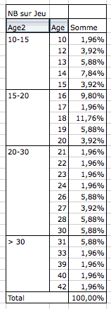
Un double-clic sur chaque groupe vous permet de masquer les détails des âges et d'avoir des statistiques globales :
Les 15-20 ans étaient donc les plus représentés à la soirée Jeux.
Notez que les groupes peuvent également être utilisés sur des dates exactement de la même manière.
Résumons
Un double-clic sur l'étiquette de colonne schématisée dans le menu « Disposition » permet d'accéder à des options de mises en forme (moyenne, pourcentages etc.)
Les groupes, accessibles à partir du menu « Données » permettent de grouper des éléments du TCD en un paquet, et donc de simplifier sa lecture.
Petit exercice
Ayant pour support la liste de données sur laquelle nous avons travaillé, sauriez-vous retrouver le gagnant de chaque jeu ?
Vous savez désormais vous servir des TCD. Notez que c'est désormais à votre tour d'explorer tous les boutons que nous avons évoqués mais pas explorés. A vous de mettre en forme vos données selon vos goûts et vos besoins !
Après cela, nous allons introduire sur une toute nouvelle notion : les macros, avant d'attaquer la troisième partie.
La lecture de ce chapitre est indispensable si vous souhaitez poursuivre sur la prochaine partie, ce qui n'est pas obligatoire pour maîtriser le tableur Excel.
Ce chapitre va donc introduire sur un nouvel outil très puissant : les macros.
Ne vous enfuyez pas en lisant le nom ! Même si vous ne poursuivrez pas le tutoriel sur la troisième partie, les macros apporteront une touche de modernité à vos feuilles de calculs. :)
Une macro, c'est un nom bien barbare pour désigner un concept puissant.
C'est une suite d'instructions que vous exécutez quand vous voulez. :-°
Pour exécuter ces instructions, il faut appeler la macro... par son nom !
Eh oui, une macro, ça a un nom. Maintenant, je vais vous donner un petit exemple :
Imaginez une macro qui a pour nom « modifications_du_texte ».
Jusque-là, ça va. Les instructions qu'elle doit exécuter sont : mise en gras du texte, puis mise en rouge de celui-ci.
Lorsque vous appellerez la macro « modifications_du_texte » sur une cellule qui contient du texte, ce dernier sera mis en gras et en rouge. :D
Les macros sont pratiques si vous avez régulièrement une longue suite d'actions à effectuer.
Mais tout ceci ne se limite pas qu'à une exécution d'instructions. Vous pouvez également coder une interface pour échanger avec l'utilisateur ! (via des boîtes de dialogue)
Et comment on la fabrique, cette macro ?
C'est l'objet de la sous-partie suivante, si vous voulez bien me suivre... :)
Maintenant que vous savez ce qu'est une macro, il est temps de la faire, cette série d'instructions, non ? :euh:
Eh bien oui, allons-y !
Pour la gestion des macros, il faut activer l'onglet « Développeur ». Pour cela, cliquez sur le menu « Fichier », puis sur « Option Excel ». Dans la fenêtre qui s'ouvre, alors dans l'onglet « Personnaliser le ruban ».
Dans la liste de droite des onglets du ruban, cochez la case devant l'onglet nommé « Développeur ». Cliquez enfin sur « OK ».
L'onglet « Développeur » vient d'alors d'apparaitre. Allez-y. Dans le groupe « Code », cliquez sur « Enregistrer une macro » :
Une fenêtre s'ouvre, vous demandant de renseigner le nom de la macro.
Notre macro mettra le texte en gras et en rouge, je l'ai donc nommée « gras_rouge ».
Cliquez sur « OK ».
Maintenant, ouvrez la fenêtre Format de cellule (voir chapitre 2 si besoin), mettez le texte en gras et en rouge.
Appuyez sur « OK » : vous revenez au tableur.
Nous allons maintenant arrêter l'enregistrement de notre macro.
Retournez dans le groupe « Code » de l'onglet « Développeur » puis cliquez sur « Arrêter l'enregistrement » :
L'enregistrement est maintenant coupé. Ouf, on respire ! :-°
Mais mais... il ne se passe rien ! Qu'est-ce que c'est que ça ?? o_O
Vous venez d'enregistrer une série d'instructions qui constitue une macro.
Alors forcement, pour que cette série s'exécute, il faut appeler la macro !
Naturellement, c'est l'objet de la sous-partie suivante... :D
Nous allons faire un bouton qui permettra d'exécuter notre macro. :)
Dans votre feuille de calcul, sélectionnez une cellule et tapez un texte quelconque.
Ensuite de quoi vous devez aller dans l'onglet « Développeur, dans le groupe « Contrôles » puis cliquez sur « Insérer ». Dans le menu, cliquez sur « Bouton de contrôle » :
Dessinez le rectangle correspondant au bouton de la macro. Suite à quoi Excel vous demande quelle macro vous souhaitez y assigner. Sélectionner votre nouvelle macro. Le bouton est mis en forme.
Sélectionnez la cellule qui contient du texte et appuyez sur le rectangle... magique, non ? :magicien:
Oui, c'est cool ton truc mais il y a quelque chose qui me tracasse : où est-ce que je peux modifier ma macro ?
Dans le groupe « Code », cliquez sur le bouton « Macros », sélectionnez votre macro et cliquez sur « Modifier ».
Vous pouvez aussi directement cliquer sur le bouton « Visual Basic ».
La fenêtre Visual Basic s'ouvre alors. Une fenêtre s'ouvre à l'intérieur, elle contient votre macro :
Mais... ouark, misère ! C'est quoi tout ça ?? :waw:
On dirait... du code, non ?
Bien vu, c'est un premier point.
Ce que vous avez sous les yeux, c'est le code de votre macro. En effet, lorsque vous enregistrez votre macro, sans que vous ne le sachiez, Excel génère du code qui est en fait la source de votre macro.
Quand vous appelez la macro, vous exécutez ce code. ;)
Et pourquoi du code ?
Parce qu'il faut parler à Excel, qui lui-même parlera à l'ordinateur. Microsoft a donc développé un langage de programmation : le VBA, qui vous permet de personnaliser vos macros. :D
La deuxième partie est achevée et vous êtes capables de créer de beaux tableaux. :)
Si vous êtes intéressés par les entrailles des macros (autrement dit, par la programmation), sachez que nous verrons tout cela dans la troisième partie.
Excel est un outil de gestion de données mais il peut aussi faire le travail à notre place dans beaucoup de situations. C'est le cas avec les outils d'analyse de simulation. Ces outils permettent de connaître les situations possibles grâce au modèle déjà en place et donc en émettant des hypothèses et connaître les résultats de ces hypothèses. Il existe plusieurs outils sous Excel, mais les deux plus importants que nous allons étudier sont la valeur cible et le solveur.
En effet, vous avez, dans votre classeur, un grand nombre de formule dépendante des unes et des autres. Vous souhaitez faire varier le résultat en changeant les valeurs de certaines cellules. Sans ces outils, vous allez essayer en modifiant les unes après les autres les valeurs sans vous souvenir du résultat que les différentes combinaisons donnent et donc passer un temps fou à connaître la meilleur combinaison possible. Nous allons donc apprendre à créer des scénarios qui vont nous donner les combinaisons les meilleures possibles.
Commençons doucement avec le premier outil : la valeur cible. Cet outil permet de déterminer le résultat voulu et Excel va changer lui même les valeurs affectant ce résultat pour trouver une combinaison possible et réelle. Vous aurez plus qu'à regarder si les valeurs vous conviennent. Un exemple est plus efficace qu'un long discours.
Prenons cet exemple :
Je souhaite fixer mon prix de vente en fonction du prix d'achat et du taux de marque. Mon prix de vente est calculée par rapport à ces deux valeurs de la façon suivante :
C5=C3/(1-C4)
Je souhaite maintenant baisser mon prix de vente. Pour cela, je dispose de deux possibilités : soit je baisse le taux de marque soit je baisse mon prix d'achat. Mon taux de marque, c'est moi qui le fixe, c'est assez facile de le baisser. Le prix d'achat, il va falloir négocier avec le fournisseur...
Sans la valeur cible, comment faire pour avoir 90€ pile dans la cellule C5 ?
Facile ! Je modifie les autres cellules jusqu'à ce que ça tombe jute !
Allez-y, appelez moi quand vous avez trouvé... Bon là, l'exemple est simple et c'est possible assez facilement. Mais lorsque les calculs sont plus complexes, la fonction valeur cible est là !
Hypothèse 1 : on négocie le prix d'achat que l'on va faire baisser.
Hypothèse 2 : on accepte de faire baisser notre taux de marque.
Allez c'est parti, testons. Pour ouvrir la fonction valeur cible allez dans l'onglet Données, dans le groupe Outils de données cliquez sur Analyse de scénarios puis sur Valeur cible... une fenêtre s'ouvre.
Il suffit alors de remplir les trois champs :
La cellule à définir : on ne peut pas la modifier car elle contient la formule. C'est à cette cellule qu'on attribue la valeur fixe.
La valeur à atteindre : c'est la valeur fixe dont je parle juste avant, c'est la valeur à laquelle doit être égale la cellule que l'on souhaite définir.
La cellule à modifier : c'est la cellule dont la valeur va être modifiée après avoir cliqué sur OK
Dans notre cas, la cellule à définir est la cellule C5, la valeur à atteindre est de 90 et dans l'hypothèse 1 c'est le prix d'achat qui change donc la cellule C3. Essayez, et voyez le résultat ! Le résultat s'affiche dans une fenêtre comme ceci :
Cliquez sur OK si vous êtes d'accord avec le résultat ou sur annuler pour l'annuler. Si vous cliquez sur Ok, la valeur de la cellule C3 change et passe à 72€.
Maintenant, il n'est plus possible de changer le prix d'achat, il va falloir jouer sur le taux de marque. C'est l'hypothèse 2. Si besoin, remettez la valeur de la cellule C3 à 80 et recommencez la procédure. Dans la fenêtre qui s'ouvre la cellule à définir ne change pas et reste la cellule C5, sa valeur à atteindre ne varie pas non plus et est de 90. Par contre, la valeur à modifier n'est plus C3 mais C4. Cliquez sur Ok et voyez le résultat ! Excel calcul qu'il faut descendre le taux de marque à 11%.
Un outil très simple et efficace pour trouver une valeur. Seulement maintenant, je souhaiterais modifier les deux valeurs pour avoir le même résultat... Je veux bien négocier mais je veux bien aussi baisser mon taux de marque. Pour cela, Excel propose un autre outil : le solveur.
Avant de commencer à l'utiliser, il faudrait qu'il soit disponible. On va donc commencer par l'installer. Pour cela, cliquez sur le gros bouton Office en haut à gauche du logiciel puis sur Options Excel, dans la catégorie Compléments du volet de gauche. En bas de la fenêtre, dans la liste Gérer vérifiez que Compléments Excel soit sélectionné. Cliquez sur le bouton Atteindre, dans la fenêtre qui s'ouvre cochez Complément Solver et cliquez sur Ok. Patientez le temps de l'installation.
Si tout a bien fonctionné, dans l'onglet Données est apparu un groupe tout à droite Analyse avec dans ce groupe Solver.
Voilà, nous sommes parés pour utiliser le solveur.
Les outils d'analyses de simulation sont donc très pratiques et puissants à partir du moment où on les utilise à bon escient. Il faut savoir qu'ils existent pour éviter d'avoir à tâtonner avec les valeurs influençant le résultat.
Arrivés à ce stade du cours, vous êtes capables de saisir et d'analyser des données avec Excel. Pourtant, ce n'est pas fini ! Si vous avez lu le chapitre sur les macros - qui permettent d'automatiser des tâches dans un classeur - vous vous êtes aperçus qu'on peut aller plus loin avec Excel.
Relisez le chapitre sur les macros. Nous y avons vu qu'une macro est une série d'instructions. Lorsque vous exécutez cette macro, vous exécutez cette série d'instructions.
Cette fameuse série, elle est écrite quelque part dans un code informatique : le VBA, qui signifie Visual Basic pour Application.
Le VBA a donc besoin d'une application, en l’occurrence ici Excel, pour fonctionner.
Nous avons vu également que pour accéder à ce code, il fallait appuyer sur Alt + F11 mais... c'est un peu le bazar lorsque nous arrivons sur la fenêtre.
Mais alors, à quoi ça sert, le VBA ?
À coder vos propres macros, pardi ! Il y a en effet des macros que vous ne pourrez jamais faire en faisant travailler l'enregistreur, comme compléter la dernière ligne d'un tableau.
L'interface de développement, c'est la fenêtre sur laquelle vous tombez lorsque vous appuyez sur Alt + F11 ou encore lorsque vous vous rendez dans l'onglet « Développeur », dans le groupe « Code » et que vous cliquez sur le bouton :
Nous allons tout d'abord voir comment s'organise un projet et inévitablement, comment fonctionne l'interface de développement.
Un projet, oui mais lequel ?
Là, c'est vous qui décidez. Un projet s'applique en général sur un travail dans le classeur ou dans une feuille de calcul particulière. C'est un groupe de macros, qui s'appellent entre elles, qui échangent avec l'utilisateur...
Vous codez une macro dans ce qu'on appelle un module. C'est comme une feuille blanche dans laquelle vous allez écrire votre ou vos macros.
Bien évidemment, vous pouvez rajouter à votre projet autant de modules que vous voulez. C'est-à-dire que vous pouvez écrire une macro par module, si vous le souhaitez.
Ouvrez MVBA et regardez le menu de gauche :
Chaque mot en gras est un projet. Vous pouvez l'explorer au moyen de la petite croix à gauche de chacun :
Ici, je n'ai en fait qu'un seul projet, les autres étant propres à l'application et protégés par mot de passe.
Vous avez tous le même projet : « VBAProject (Classeur1) ». Si votre classeur a pour nom Salariés, votre projet a pour nom « VBAProject (Salariés) ».
Nous allons ajouter un nouveau module qui va vous permettre de coder. rendez-vous dans le menu « Insertion » puis cliquez sur « Module » :
Remarquez l'apparition du dossier Module dans votre projet. C'est ici que seront rangés tous vos modules. Nous allons pouvoir commencer à coder.
STOOOOP ! :-° Et si j'ai 40 modules ? Je vais avoir 40 fichiers dans mon dossier mais s'ils s'appellent Module1, Module2, Module3... je ne vais jamais m'en sortir !
Exact. Cher Zéro, vous soulevez la question du renommage du module, une démarche assez tordue.
Soit, je vais vous expliquer comment renommer un module.
Tout d'abord, sélectionnez votre module. :D
Cliquez sur le bouton « Fenêtre Propriétés (F4) » : ça affichera le menu des propriétés du module :
Renommez le module comme à vos envies, puis fermez cette petite sous-fenêtre au moyen de la petite croix.
Voilà, vous êtes fin prêts au codage. Petite précision tout de même : pour revenir au tableur depuis MVBA, il faut appuyer sur Alt + F11.
Pour créer une macro, vous pouvez soit faire travailler l'enregistreur de macros, et dans ce cas du code VBA sera généré selon vos désirs, soit la coder à la main.
Comme nous sommes sur le Site du Zéro et qu'ici, on est plutôt orienté « code », nous allons... coder. :D
Déclarer sa macro
Une macro porte un nom que vous lui donnez. Les espaces et les accents sont interdits.
MAUVAIS = ma première macro.
BIEN = ma_premiere_macro.
Chaque macro doit être codée entre les mots-clés Sub et End Sub.
Syntaxe
Voici sans plus tarder la syntaxe d'une déclaration :
Sub nom_de_la_macro ()
End Sub
Dans votre éditeur de code, écrivez seulement la première ligne Sub nom_de_la_macro () (en remplaçant « nom_de_la_macro » par ce que vous voulez, tant que ça respecte les règles énoncées ci-dessus :-° ) et appuyez sur Entrée : End Sub a été généré tout seul ! :)
Par exemple (nom repris du chapitre précédent) :
Sub gras_rouge ()
End Sub
Que s'est-il passé ?
Retournez à votre tableur, et dessinez un objet auquel vous appliquez votre macro (voir chapitre sur les macros).
Que constatons-nous ? Votre macro est reconnue, et ce, sans toucher l'enregistreur ! :D
Après un premier chapitre d'introduction au VBA, il est temps de rentrer dans le concret. :)
Si nous résumons, vous savez déclarer une macro et placer un commentaire dans un code.
Nous avons même constaté qu'une liaison a été établie entre votre macro et le tableur à "proprement parlé" puisque, sans passer par l'enregistreur de macro, vous pouvez affecter votre bout de code à un objet sur votre quadrillage.
Le VBA est un langage orienté objet. On dira également que vous faites de la Programmation Orientée Objet (POO). Ces mots n'ont probablement aucun sens pour vous, à moins que vous n'ayez déjà fait du C++ ou encore du Java.
Nous allons tenter d'étudier le concept en lui-même, puis en suite de l'appliquer à notre problème.
Dans la vie courante, vous reconnaissez un objet parce qu'il a un état physique, il est visible et vous pouvez le toucher. Une brosse à dents est un objet, un verre est un objet, un ordinateur en est un également... bref, la liste est longue.
L'objet peut être reconnaissable grâce à sa couleur, par exemple, mais vous pouvez aussi effectuer des actions dessus.
Nous allons prendre comme exemple votre maison (ou appartement, ne me dites pas que vous habitez dans un bateau... même si ça ne change pas grand-chose). Une maison est caractérisée par ses propriétés : elle a une année de construction, une couleur... mais on peut aussi y faire beaucoup d'action : Nettoyer, Regarder la télé ... on parle alors de méthodes .
À partir de ces propriétés et méthodes, vous pouvez imaginer plein de maisons différentes, en faisant varier le nombre de pièces, par exemple. Les propriétés permettent d'identifier la maison, de la caractériser, de la singulariser. Les méthodes forment toutes les actions que l'on peut exécuter à partir de cet objet.
Toutes ces maisons ont donc été fabriquées à partir d'un plan. On parle d'une classe.
Lorsque vous fabriquez un objet à partir d'une classe, on dit que vous faites une instance de classe.
M@teo21 a une belle image pour ceci : imaginez un architecte qui dessine un plan de maison. Le plan correspond ici à ma classe et les maisons aux objets : en effet, à partir du plan, vous pouvez bâtir autant de maisons que vous le voulez !! J'ajoute que la définition de toutes les maisons de l'Univers, même imbriquées dans des classes différentes s'appelle une collection d'objets. ;)
La maison : propriétés, méthodes et lieux
Continuons avec notre exemple de la maison.
Vous êtes dans votre maison et vous voulez prendre un bain (c'est une méthode), vous allez donc devoir vous rendre dans la salle de bain. Pour cela, il y a un ordre à respecter. Vous devez d'abord trouver la ville dans laquelle se trouve la maison, puis l'adresse précise et enfin trouver la salle de bain.
Puisque toutes les villes se ressemblent, nous pouvons considérer la classe Villes. De là, vous trouvez votre ville à vous, qui est une instance de Villes, ou un objet issu de Villes. Il en est de même pour la classe Maisons. Des maisons, il y en a des tonnes, mais la vôtre se distingue parce que c'est votre maison.
L'itinéraire à suivre est donc le suivant :
Ville > Maison > Salle de Bain > Bain
En code VBA, cet itinéraire se précise en partant du plus grand conteneur ; ici, la ville contient la maison, qui contient la salle de bain, et il y a la baignoire que nous désirons.
C'est comme les poupées russes : la ville est la plus grosse poupée qui contient toutes les maisons.
Les lieux et objets sont séparés par un point. Le code serait donc ceci :
Villes("Reims").Maisons("Ma_Maison").Salle_de_bains("Bain")
' Dans la classe Villes, votre ville se distingue des autres par son nom : Reims.
' Reims est un objet créé à partir de la classe Villes, qui contient aussi bien Paris que Bordeaux.
Vous accédez ainsi à l'objet "Bain". Entre parenthèses et guillemets, vous donnez des précisions. En effet, la baignoire se différencie des autres parce qu'elle permet de prendre un bain, vous ne pourriez pas construire un objet "Lavabo" à partir de la classe "Salle_de_bain" pour faire un bain.
Nous pouvons même rajouter une méthode à la fin, puisque vous désirez vous laver :
Et si vous désiriez vous laver les mains, on aurait pu créer ce fameux objet Lavabo, toujours issu de la classe Salle_de_bains :)
Tout ceci n'est que schéma bien sûr, mais la syntaxe correspond à celle d'un vrai code VBA. Vous prenez donc l'objet crée à partir de la classe Salle_de_bain, vous prenez une instance de la classe Baignoire.
Retenir :
L'accès aux objets se fait comme suit :
nom_de_la_classe("Nom de l'instance de cette classe")
Maintenant, il est temps de tester la POO en pratique, donc dans Excel (parce que les maisons, c'est bien, mais nous nous éloignons).
Je propose toutefois un schéma qui va aider à comprendre la suite :
On voit, par exemple, que les couleurs sont des instances de la classe Maison : ils ont quelque chose en commun, comme la forme de la maison.
De même pour l'appartement du 3ème étage, qui est une instance de la classe Appartement. Le tout est contenu dans un grand objet : la ville.
Pour Excel, c'est un peu la même chose : le big des big objets, c'est Application, qui désigne l'application Microsoft Excel.
Lui-même contient la classe Workbooks, qui regroupe tous les classeurs Workbook ouverts. Et Workbook contient la classe Worksheets, qui contient toutes les feuilles Worksheet du classeur désigné. :euh: Un schéma pour mieux comprendre :
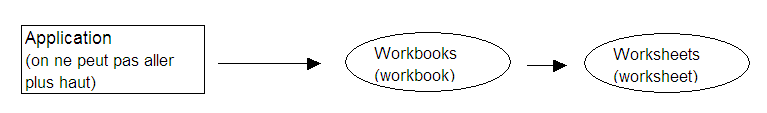
La POO en pratique
Nous allons faire nos débuts en POO avec la méthode Activate, qui active (qui vous amène) là où vous lui demandez.
Par exemple, je veux aller de la première feuille à la deuxième. Il va falloir donc nommer notre classeur et deux feuilles, afin de donner un itinéraire.
Enregistrez votre classeur en le nommant "Essai". Renommez une première feuille "Départ" et l'autre "Arrivée". (l'explication se trouve dans la seconde annexe).
Vous obtenez quelque chose dans ce genre :
Placez-vous sur la feuille Départ, ouvrez la fenêtre de VBA, créez un nouveau module.
Maintenant, réfléchissons à l'itinéraire. On part de l'application, pour aller vers le classeur "Essai" et vers la feuille "Arrivée".
Le code serait donc :
Sub trajet()
Application.Workbooks("Essai").Worksheets("Arrivée").Activate
'On part de l'application vers l'instance Essai de la classe Workbooks
'ensuite, on va à l'objet Arrivée de la classe Worksheets
End Sub
Notez que le logiciel peut vous proposer une liste de classes :
Toutefois, on peut le raccourcir : c'est comme avec les pièces de la maison, si vous êtes dans la maison, il est inutile de préciser qu'il faut aller dans cette ville et à l'adresse de la maison, puisque vous y êtes déjà.
Ici, vous êtes bien sûr l'application Microsoft Excel (logique) et vous êtes aussi sur le classeur "Essai".
Le bon code est donc :
Sub trajet()
Worksheets("Arrivée").Activate
End Sub
Il ne vous reste plus qu'à aller sur la feuille "Départ", d'y dessiner un rectangle, d'affecter votre macro et de cliquer dessus, vous serez "téléporté" vers la feuille "Arrivée" :D
A retenir
La classe Workbooks désigne tous les classeurs ouverts.
La classe Worksheets désigne toutes les feuilles du classeur actif.
D'autres exemples
Nous allons sélectionner une plage de cellules en tapant un code VBA (bien que nous pourrions le faire par le biais de l'enregistreur de macros, mais cette partie deviendrait donc dépourvue d'utilité ^^ )
Tout d'abord, il serait bien de ne pas avoir à taper des plages dans un code via les coordonnées : il y a tellement de chiffres, de lettres, de caractères (guillemets, deux points) qu'on s'y perdrait. Je vais donc vous apprendre à ... nommer une plage de cellules ! :D D'ailleurs, vous pourrez trouver son utilité dans les formules, bref, ça clarifie un code. Ainsi, vous appellerez la plage par son nom.
Voici comment on nomme une plage de cellule. Sélectionnez une plage de cellule, quelle qu'elle soit. Lorsque cette plage est sélectionnée, faites un clic droit et cliquez sur « Définir un nom » :
Une fenêtre s'ouvre, il suffit de remplir le champ « Nom » et de cliquer sur « OK » :
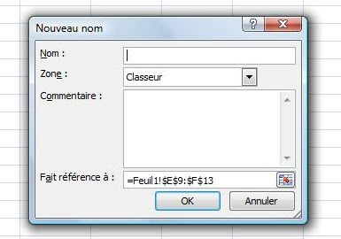
Vous remarquez que, à gauche de la barre de formule, apparait le nom de votre plage. C'est ce nom de plage que vous pouvez utiliser.
Vous pouvez retrouver votre plage à partir de cette liste déroulante en cliquant sur le nom de votre plage.
Mais revenons à notre feuille de calculs et préparons le terrain : mettons une bordure rouge autour de notre plage nommée et dessinons un rectangle, afin d'y appliquer la macro de sélection (que nous allons coder).
Aller, hop hop hop, ouvrez VBE ! :pirate: On commence à coder :
Sub MaSelection()
' on placera le code ici
End Sub
Rien de palpitant. Les cellules sont sous la tutelle de la classe Range, que ce soit une cellule ou une plage de cellules (jointes ou non). Nous allons utiliser également la méthode Select, qui sélectionne ce que vous lui demandez de sélectionner.
Je rappelle qu'il ne sera pas nécessaire de faire mention du classeur ou de la feuille de calculs active, puisque nous y sommes déjà (donc inutile de dire d'y aller :) ).
Voici le code :
Sub MaSelection()
Range("Ma_Plage").Select
End Sub
Retour à notre feuille de calculs, où nous affectons la macro MaSelection au zoli rectangle :p . Après un clic dessus, la magie opère :
Vous rappelez-vous le nom et de la fonction particulière de la cellule de la sélection en haut à gauche, qui n'est pas sur fond bleu ? Mais oui, c'est la cellule active ! Pour rappel, si vous saisissez des données directement sur votre sélection, elles seront rentrées dans la cellule active.
Puis pour le fun, nous allons changer l'emplacement de cette cellule en VBA !
Il va falloir relever ses coordonnées ; dans mon cas, je prends C11, qui est une cellule de ma plage. Il va falloir utiliser la méthode Activate (vue ci-dessus) :
Sub MaSelection()
Range("Ma_Plage").Select
' on sélectionne la plage Ma_Plage, qui relève de la classe Range, à l'aide de la méthode Select
Range("C11").Activate
'la cellule C11 devient la cellule active de la sélection, avec la méthode Activate
End Sub
Et après un clic sur le rectangle, l'emplacement de la cellule active est effectivement modifié :
Voilà pour les méthodes. Il y en a beaucoup d'autres. Nous les verrons en temps voulu car chacune a une fonction bien particulière. L'idée était surtout de vous initier aux manipulations des méthodes.
Bien, nous avons fait joujou avec la méthode Activate, histoire de mettre en application ces histoires de classes et d'instances. La technique vue ci-dessus est valable pour toutes les méthodes, ce qui signifie que c'est comme ça qu'on en applique une.
Maintenant, nous allons nous intéresser aux propriétés de l'objet ( = instance).
Les propriétés : la théorie
Nous allons reprendre (et ce, pour encore un bout de temps), l'exemple de la maison. Si vous avez pigé tout ce qui a été dit avant (dans le cas contraire, n'hésitez pas à commenter ce chapitre en précisant les points obscurs), vous devriez être capables de dresser une petite liste des propriétés possibles d'une maison :
Elle a une couleur : couleur
Un nombre de pièces : nombre_de_piece
Voici comment nous pourrions accéder à ces propriétés (toujours en supposant que notre maison est bien issue de la classe Maisons et que l'objet se nomme Ma_Maison) :
Maisons("Ma_Maison").couleur = "verte"
'On dit que nous souhaitons accéder à l'objet Ma_Maison, de la classe Maisons
'nous accédons à la propriété couleur et nous lui affectons une valeur
Nous pouvons faire de même avec la propriété nombre_de_piece, car la syntaxe est la même :
Maisons("Ma_Maison").nombre_de_piece = 7
Vous remarquez que nous pouvons affecter différents types de valeurs :
Type de valeur
Exemple
Numérique
1, 5, 12 365 ...
Maisons("Ma_Maison").nombre_de_piece = 7
'7 pièces par exemple
Chaîne de caractères
Bonjour, a, jojo, 1234 (ici, 1234 sera lu comme une suite de caractères : 1, 2, 3, 4, et non plus comme un nombre)
Maisons("Ma_Maison").couleur= "Rouge"
Booléen
TRUE, FALSE : le booléen ne peut prendre que deux valeurs, TRUE ou FALSE (vrai ou faux). Ainsi, nous pourrions imaginer le choix d'une maison avec étage ou de plain-pied. Si elle est avec étage, la propriété Etage pourrait valoir FALSE et si elle est de plain-pied, elle pourrait valoir TRUE.
Maisons("Ma_Maison").Etage = TRUE
' Notre maison a au moins un étage
Constante
La constante est... assez particulière, mais pourtant très utilisée. Une constante est une valeur qui ne change pas. Par exemple, plusieurs constantes peuvent être valables pour notre objet. Elles peuvent ici désigner le type de notre maison.
Maisons("Ma_Maison").Type = VILLA
' Notre maison est une villa
Maisons("Ma_Maison").Type = APPARTEMENT
' Notre maison est un appartement
Les constantes propres à Excel commencent par le préfixe xl.
Les propriétés : la pratique
Il faut maintenant appliquer toute cette théorie à notre bon vieux VBA.
Afin de voir en une fois nos quatre types de propriétés, nous allons créer une macro qui répond aux consignes suivantes :
- Taille du texte : 14
- Police du texte : Euclid
- Texte souligné
- Texte en gras
Vous l'avez sans doute compris, nous allons travailler sur une sélection de texte.
Mais je ne sais pas situer une sélection de texte, moi ! :euh:
Plus pour longtemps. Pour travailler sur la sélection, nous allons utiliser l'objet Selection. De plus, c'est l'objet Font qui gère les polices. Décortiquons les étapes à suivre :
La taille du texte
La taille du texte est contenue dans une propriété appelée Size. Cette propriété n'accepte que des valeurs numériques (la taille du texte ^^ ). Un exemple juste parce que c'est le premier :
Sub taille()
Selection.Font.Size = 12
'nous modifions la taille du texte sélectionné à 12
End Sub
La police du texte
La police se trouve dans la propriété Name. Cette propriété attend une chaîne de caractères.
Le soulignement
Le soulignement est géré par la propriété underline. Cette propriété n'accepte que des constantes. Oui, ces mystérieuses constantes qui commencent par xl. Sachez que la valeur xlUnderlineStyleSingle applique un soulignement simple au texte. En effet, avec xlUnderlineStyleDouble, on peut appliquer au texte deux traits de soulignement.
Le gras
Le gras est une propriété à lui tout seul : Bold, qui signifie "gras" en anglais. Vous remarquerez d'ailleurs au fil du cours que le VBA a une syntaxe très proche de l'anglais. Bold n'accepte que deux valeurs : True ou False ; c'est donc un booléen. Si la propriété vaut True, le texte sélectionné sera mis en gras.
Dans le même genre, sachez qu'il existe la propriété Italic, qui est également un booléen et qui gère la mise en italique du texte.
Avez-vous su écrire la macro avec toutes ces indications ? Voici le corrigé :
Sub texte()
Selection.Font.Size = 14
Selection.Font.Name = "Euclid"
Selection.Font.Underline = xlUnderlineStyleSingle
Selection.Font.Bold = true
End Sub
Et si en plus de ça je veux mettre mon texte en italique, en couleur, et le centrer dans la cellule ? Je ne vais tout de même pas réécrire Selection.Font 50 000 fois !?
Et pourquoi pas ? Plus sérieusement, les concepteurs du VBA ont pensé à ce cas là bien avant vous. Ils ont même une solution de feignants (les programmeurs sont des feignants, on ne le dira jamais assez :p )
L'idée est d'expliquer à VBA qu'on va travailler un certain temps sur Selection.Font. Pour ce faire, nous allons utiliser une nouvelle notion : la structure en With ... End With
Une alternative de feignants : With ... End With
Cette structure est utilisée pour faciliter les modifications des propriétés sur un même objet. Sa syntaxe est la suivante :
With nom_de_votre_objet
'on fait ici nos modifications sur les propriétés par exemple :
.propriété_1 = valeur_1
.propriété_2 = valeur_2
.propriété_3 = valeur_3
End With
Ainsi, le code de la modification du texte équivaut à :
Sub texte()
With Selection.Font
.Size = 14
.Name = "Euclid"
.Underline = xlUnderlineStyleSingle
.Bold = true
End With
End Sub
On peut voir l'utilité de cette fonction lorsque l'on utilise des objets dont le nom est très long à écrire.
Sub test()
With Application.Workbooks("classeur1").Worksheets("feuil1").Range("A1")
.propriété_1 = valeur_1
.propriété_2 = valeur_2
...
End With
End Sub
Voilà, c'est fini pour la partie un peu théorique. Au menu du chapitre suivant : pause bien méritée !
En attendant, si vous en voulez encore, faites des tests. Il n'y a que comme ça que vous progresserez et la POO ne s'assimile pas du jour au lendemain. Il faut absolument avoir compris l'idée de ce concept, sans quoi il est inutile de poursuivre.
Après une mise en bouche à la POO, nous allons faire une pause. Vous avez quand même ingurgité pas mal de notions dans les deux chapitres précédents. Nous n'allons pas pour autant glander. Ici, pause est synonyme de... pratique !
En effet, la théorie, c'est bien, mais il faut bien mettre les mains dans le cambouis à un moment où à un autre. Nous n'allons donc pas étudier de nouvelles notions propres à la POO mais tout simplement mélanger classes, objets et méthodes plus ou moins nouvelles afin de vous faire travailler la sélection.
Si vous avez suivi la première partie de ce cours, vous avez sans doute compris à quel point l'accent a été mis très tôt sur la sélection. C'est une notion importante et même en VBA. Gardons à l'esprit que VBA peut permettre d'échanger avec un utilisateur du tableur. Il faut donc bien pouvoir s'y repérer, non ? ;)
Comme nous l'avons très rapidement vu au chapitre précédent, toutes les cellules du tableur sont des instances de la classe Range. Pour effectuer la sélection, il suffit d'appliquer à votre objet la méthode Select. Jusque-là, pas de surprise. La sélection de la cellule C5 peut donc se faire comme suit :
Sub tests_selection()
Range("C5").Select
End Sub
On peut aussi sélectionner plusieurs cellules les séparant par des virgules :
'Sélection des cellules C5, D4 et F8 :
Range("C5, D4, F8").Select
Votre objet peut aussi être une plage de cellules. Par exemple, le code ci-dessous sélectionne une plage de B2 à E8 :
Range("B2:E8").Select
Cells, une autre classe pour les cellules...
Les cellules sont des instances de Range, mais aussi de la classe Cells. Voyez plutôt ces deux codes comparatifs qui exécutent exactement la même chose :
Avec Range
Avec Cells
Range("E3").Select
Cells(3, 5).Select
La syntaxe pour sélectionner une cellule avec Cells est la suivante :
Cells(ligne, colonne).Select
C'est exactement l'inverse de l'adressage que nous connaissons dans le tableur. D'abord la ligne, ensuite la colonne. Attention ! Ces deux valeurs doivent être numériques ! C'est-à-dire que vous devez récupérer le numéro de la colonne souhaitée.
Mais comment je fais pour connaître le numéro de la colonne ?
Cliquez sur le gros bouton Office en haut à gauche puis sur « Option Excel ». Dans la fenêtre qui s'ouvre cliquez à gauche sur « Formules » et dans la rubrique « Manipulation de formules », cochez la case « Style de référence L1C1 » :
Vos références de colonnes sont maintenant des chiffres, et non des lettres :)
Décaler une sélection
Vous avez été traumatisés par les translations en maths ? Aïe pour vous. On va apprendre une technique qui sert à décaler une sélection à partir de la cellule active.
La cellule active est gérée par la classe ActiveCell. La classe nouvelle qui effectuera le décalage est Offset.
Offset attend deux arguments : le nombre de lignes puis le nombre de colonnes du décalage. Il ne faut pas se tromper dans le signe. Des exemples ? En voici :
Sub decalages()
'La cellule active ne bouge pas :
ActiveCell.Offset(0, 0).Select
'Décalage d'une ligne vers le bas et d'une colonne vers la droite :
ActiveCell.Offset(1, 1).Select
'Décalage d'une ligne vers le haut et de trois colonnes vers la gauche :
ActiveCell.Offset(-1, -3).Select
End Sub
Les lignes du tableur sont des objets de la classe Rows. La sélection de la deuxième ligne du classeur actif peut se faire comme ceci :
Rows("2").Select
On utilise toujours la même méthode (Select). C'est juste la classe qui change :)
Tout comme pour les cellules, on peut aussi sélectionner une plage de lignes contiguës :
' Sélection des lignes 2 à 5 incluses :
Rows("2:5").Select
Les lignes peuvent aussi être discontinues. Dans ce cas, la syntaxe est la suivante :
Range("2:2, 5:5, 6:8").Select
Les lignes 2, 5 et la plage des lignes 6 à 8 seront sélectionnées.
Hein ?? Mais tu avais dit que les lignes étaient gérées par Rows ! Pourquoi tu nous ressors Range ?
Lorsqu'on cherche à faire des sélections d'objets discontinus en VBA, on retourne vers la classe Range. C'est comme ça. On indique les plages que l'on souhaite sélectionner séparées par des virgules.
La méthode pour sélectionner des colonnes est la même que pour sélectionner des lignes. Nous allons juste utiliser la classe Columns qui s'occupe des colonnes du tableur ;) Je pense que vous savez désormais sélectionner une colonne...
'Sélection de la colonne C :
Columns("C").Select
Vous pouvez aussi sélectionner une plage de colonnes :
'Sélection des colonnes C, D, E et F :
Columns("C:F").Select
Et comme pour les lignes, on se tourne vers la classe Range pour la sélection d'objets discontinus :
'Sélection des colonnes A, C et G :
Range("A:A, C:C, G:G").Select
Le repos est terminé, on retourne dans les zones sombres du VBA ! Au programme : deux chapitres sur une notion fondamentale de tout langage de programmation qui se respecte : les variables ! :pirate:
Après une longue introduction aux notions fondamentales de la POO, il est temps d'explorer les contrées sombres du VBA. Nous commencerons par les variables. Si vous connaissez d'autres langages de programmation, vous savez à quel point elles sont importantes. On les retrouve partout ! Mais bon, nous partons de zér0, donc vous ne savez pas ce que c'est.
N'oubliez pas que les variables sont fondamentales, aussi deux chapitres y seront consacrés. Ne brûlez pas les étapes et allez-y doucement. :)
Pour faire un programme, on a besoin de stocker des informations pendant un certain temps pour ensuite le réutiliser. Pour cela, on va utiliser un espace de stockage pour stocker l'information que l'on souhaite retenir. :)
Pour vous aider je vous donne un exemple : on demande à l'utilisateur d'entrer son prénom et on va le stocker dans une variable prenom. Par la suite, dans l'exécution du programme, on fera référence à la variable prenom pour afficher son prénom. Sachant que le prénom est différent selon l'utilisateur et que nous pouvons lui demander de changer de prénom, on appelle cette notion variable puisqu'elle peut changer au cours du temps.
Pour stocker une variable, on va avoir besoin d'un espace de stockage que l'on demande à l'application. Elle ne refusera jamais sauf s'il n'y en a plus, mais c'est très rare. En revanche, on ne va pas demander n'importe quel espace. Pour stocker du texte, on demande une variable de type "texte" et pour un nombre une variable de type "nombre". De ce fait, si vous essayez de stocker un nombre dans une variable texte, l'exécution ne se fera pas correctement.
Nous allons étudier les différents types plus tard dans ce chapitre.
Nous savons maintenant ce qu'est une variable. Il est temps d'apprendre à les créer ! On parle alors de déclaration de variable. Il existe deux méthodes de déclaration : explicite et implicite. Étudions les deux méthodes.
Déclaration explicite
La déclaration de variable explicite est très simple, voici la syntaxe :
Dim ma_variable_explicite [As type]
Étudions ce bout de code.
Pour déclarer une variable, on écrit en premier Dim. Vient ensuite le nom de notre variable qu'il faut un minimum explicite, mais pas non plus une phrase. Enfin, le type de la variable. Il est ici entre crochets puisqu'il n'est pas obligatoire. S'il n'est pas indiqué, la variable est de type Variant par défaut (nous allons voir les différents types ultérieurement).
Revenons sur le nom de la variable. Une variable que vous appelleriez x n'est pas explicite et difficile à repérer dans un programme. Vous savez peut-être que c'est un nombre, mais si vous revenez sur votre programme par la suite, la signification vous aura peut-être échappée. Dans l'extrême inverse, on a aussi une variable appelée nombre_le_plus_grand_de_toute_la_serie. C'est certain qu'il est explicite, par contre, il ne faudra pas se tromper lorsque vous avez à y faire référence. Plus il y a de caractère et plus la probabilité de se tromper est grande. S'il y a un seul caractère différent, le programme ne reconnaitra pas la variable.
Autrement dit, les noms du genre :
Dim temp
Dim data
Dim x
sont à proscrire absolument. ;)
Il y a des règles à respecter lorsque vous déclarez une variable :
Elle doit commencer par une lettre
Elle ne doit contenir que des lettres, des chiffres et le caractère de soulignement, aussi nommé underscore (touche 8 du clavier azerty français _). Les espaces sont interdits !
Elle est limitée à 40 caractères.
Elle ne doit pas être identique à un mot réservé.
Qu'est ce que la liste des mots réservés ?
Cette liste contient tous les mots réservés au bon fonctionnement de VBA, c'est-à-dire les mots-clés du langage. Dim en est par exemple un puisqu'il sert à déclarer une variable. On ne peut pas non plus attribuer à une variable le nom Sub. Ce mot est réservé pour déclarer les procédures. C'est la même chose avec les noms de fonctions et tous les mots réservés à VBA. Si vous ne savez pas s'il est réservé, un message d'erreur apparait lors du codage, il suffit alors de choisir un autre nom.
On peut ensuite attribuer une valeur à notre variable :
ma_variable_explicite = 10
Déclaration implicite
La déclaration de variable explicite était simple, l'implicite l'est encore plus ! Voici la syntaxe :
ma_variable_implicite = 6
Vous avez compris le truc ? Et bien, la variable est utilisée directement. Elle n'a pas été déclarée avec Dim. Le programme demande automatiquement de créer cette variable, qui sera par défaut de type Variant et aura pour valeur 6.
Cette approche peut poser problème et engendrer des erreurs difficiles à détecter si vous n'orthographiez pas correctement le nom de la variable dans une commande ultérieure du programme.
Par exemple, si dans la suite de votre programme vous faites référence à ma_variabl_implicite au lieu de ma_variable_implicite, vous savez ce que cela signifie, mais VBA l'ignore. Il va supposer que ma_variabl_implicite est une nouvelle variable et la créé en tant que telle. L'ancienne variable, ma_variable_implicite, est toujours là, mais elle n'est plus utilisée. Vous avez à présent deux variables différentes alors que vous pensez n'en avoir qu'une seule. Cela peut causer d'énormes problèmes qui peuvent prendre beaucoup de temps à être résolus.
Quelle méthode de déclaration choisir ?
Là, c'est à vous de voir. Il y a des avantages et inconvénients dans les deux types. La méthode à utiliser dépend de vos préférences personnelles. Le codage est souvent plus rapide en utilisant la déclaration implicite parce que vous n'avez pas à définir à l'avance vos variables avant de les utiliser. Vous utilisez des variables dans les commandes et VBA s'occupe du reste.
Cependant, comme nous l'avons vu, cela peut engendrer des erreurs à moins que vous ne possédiez une très bonne mémoire et sachiez exactement ce que vous faites. Une déclaration implicite peut aussi rendre votre code plus difficile à comprendre pour les autres.
Obliger à déclarer
Si vous utilisez les deux méthodes, vous pouvez vous obliger à déclarer votre variable grâce à la fonction Option Explicit. Cela permet de ne jamais déclarer une variable de façon implicite. De cette manière, une variable non déclarée dans un code provoque une erreur dans la compilation du code et vous indique directement quelle variable est mal orthographiée ou non déclarée à cause d'un oubli.
Pour utiliser cette fonction, il faut l'introduire dans TOUS les modules dans lesquels vous souhaitez obliger les déclarations de variables, et ce, avant le code des procédures. Si vous regardez un module dans la fenêtre de l'éditeur Visual Basic, vous verrez une liste déroulante appelée (Général) dans le coin supérieur gauche de la fenêtre du module et une liste déroulante appelée (Déclarations) dans le coin supérieur droit de la fenêtre du module. Cliquez sur (Déclarations) et vous irez directement dans la section des déclarations. Saisissez la commande suivante :
Option Explicit
Après avoir saisi cette commande, une ligne se place en dessous pour confirmer la présence de la fonction. Maintenant, chaque variable doit être déclarée. Essayez par vous-même d'exécuter un code sans déclarer une variable, une erreur arrêtera la compilation.
Vous savez maintenant déclarer une variable et lui attribuer une valeur. Mais comment retrouver la valeur de cette variable et l'afficher à l'écran pour vérifier ? Pour cela, on va utiliser la fonction MsgBox. Cette fonction permet d'afficher ce que l'on veut sous forme d'une fenêtre qui s'ouvre dans le classeur concerné et qui bloque temporairement l'exécution de la procédure. Pour continuer la procédure, il faut cliquer sur "Ok".
Cette fonction sera utilisée abondamment dans la suite du cours. C'est pour ça que l'on va l'étudier ici.
Lorsque vous écrivez du code dans l'éditeur, vous pouvez exécuter ce code soit à l'aide de l'icône dans la barre d'outils ou en pressant la touche F5. Le code s'exécute alors dans le classeur actif. Dans notre cas, la boite de message (MsgBox) va s'ouvrir dans le classeur actif. Voici un exemple de boite de dialogue :
Pour afficher ce message, le code est très simple !
Sub bonjour()
MsgBox "Bonjour"
End Sub
Cette syntaxe est nouvelle pour vous. Nous aurons l'occasion de reparler des fonctions plus loin dans le cours. Faîtes-moi confiance pour le moment et contenez-vous d'avaler cette histoire de MsgBox comme une recette de cuisine. :p
A noter que tant que vous ne cliquez pas sur Ok pour terminer l'exécution du code, vous ne pouvez modifier votre code.
Je ne sais pas si vous avez fait votre feignant comme moi, mais si vous ne mettez pas les majuscules à MsgBox, VBA s'en charge ! C'est le cas pour Dim aussi, mais aussi pour toutes les fonctions qui sont présentes dans VBA. Tout le monde le dit, les programmeurs sont des feignants ! Ou pas...
Et pour afficher la valeur d'une variable alors ?
Pour afficher la valeur d'une variable, on va simplement attribuer à la fonction notre variable.
MsgBox ma_variable
Il n'y a pas besoin de mettre des guillemets, ceux-ci servent pour afficher du texte. Si vous en mettez autour de votre variable, la fonction affiche le nom de votre variable et non la valeur de celle-ci.
Sub test()
Dim ma_variable As String
ma_variable = "Bonjour"
MsgBox "Cette phrase affiche la valeur de ma variable : " & ma_variable
MsgBox "Cette phrase affiche le nom de ma variable : " & "ma_variable"
End Sub
Ce code affiche dans un premier temps :
Citation : MsgBox
<p>Cette phrase affiche la valeur de ma variable : Bonjour</p>
Puis dans une seconde boite de message :
Citation : MsgBox
<p>Cette phrase affiche le nom de ma variable : ma_variable</p>
Vous remarquez que pour mettre du texte et une variable dans la même phrase, vous pouvez concaténer les deux chaînes de caractères. Concaténer signifie mettre bout à bout. Pour cela on utilise le et commercial &. Il doit être présent à chaque fois que deux éléments différents sont adjacents. Un élément peut être une chaîne de caractère entre guillemets ou une variable.
C'est tout ce que je voulais vous faire découvrir sur cette fonction qui est très utilisée. On verra dans la suite du cours que l'on peut personnaliser ces boites de dialogue.
Un type de données peut être attribué à une variable ce qui permet de déterminer le type d'information que la variable peut stocker. Cette décision peut avoir un effet sur l'efficacité de votre code. Si aucun type de données n'est spécifié, le type par défaut est Variant.
On rappelle que pour attribuer un type à une variable, il faut faire suivre le type lors de la déclaration de variable.
Dim ma_variable As String
Variant
Une variable de type Variant peut stocker tous les types de données, par exemple, du texte, des nombres, des dates ou bien encore d'autres informations. Elle peut même stocker un tableau entier. Une variable Variant peut modifier librement son type pendant l'exécution du code alors que ceci est impossible à réaliser avec un autre type de données (par exemple String).
Vous pouvez utiliser la fonction VarType pour trouver le type de données que contient une variable Variant.
Sub TestVariables()
' On déclare implicitement une variable qui est du texte.
ma_variable = "le_site_du_zéro"
'On affiche le type de la variable
MsgBox VarType(ma_variable)
'On change la valeur de la variable pour mettre un nombre
ma_variable = 4
'On affiche le nouveau type de la même variable
MsgBox VarType(ma_variable)
End Sub
La boite de dialogue affichera d'abord la valeur 8 puis la valeur 2.
Mais, je croyais que la fonction nous renvoyait le type de la variable ?
C'est le cas, sauf qu’au lieu de vous le donnez en toutes lettres. On vous donne un chiffre qui correspond à un type. Voilà le tableau des correspondances :
Valeur de retour
Type
0
Empty
1
Null
2
Integer
3
Long
4
Single
5
Double
6
Currency
7
Date/Time
8
String
Par la même occasion, je viens de vous présenter la liste de tous les types de variables que l'on peut renvoyer pour une variable.
Même si Variant stocke tout type de données, il n'est pas indifférent à ce qu'il contient. En effet, vous avez vu dans l'exemple précédant que Varient identifie le type de données. Ainsi, si vous essayez d'effectuer des calculs avec une variable de type Variant mais contenant du texte, une erreur apparait. Il existe une fonction pour savoir si la variable est de type numérique ou non et donc ainsi faire des calculs. Cette fonction est IsNumeric et fonctionne comme la fonction VarType. Si la variable comprend un nombre, la fonction renvoie Vrai, sinon elle renvoie Faux.
Sub TestNumeric()
'On déclare une variable implicitement ayant du texte
ma_variable = "zozor"
'On affiche le résultat de la fonction
MsgBox IsNumeric(ma_variable)
End Sub
Cet exemple affiche la valeur Faux.
Reprenons la liste des types de variables que nous avons vues dans le tableau précédent. Il y a en fait des types qui peuvent se regrouper. On va détailler ces différents types et dire à quoi ils servent.
Les types numériques
On va ici détailler les types numériques : Byte, Integer, Long, Single, Double, Currency. Tous ces types de variables permettent de stocker des nombres.
Pourquoi avoir créé autant de types sachant qu'un nombre est un nombre non ?
Il est vrai qu'on pourrait avoir un seul type pour les nombres. Mais le chiffre 1 ne prend pas la même place en mémoire que le nombre 23954959,45593. C'est pour cela que différents types ont été créés. En effet, si la mémoire monopolisée par une variable est faible, alors le programme tournera plus vite. C'est logique après tout, il aura moins de données à analyser.
Voici un tableau qui récapitule les différents types numériques (la plage représente la plage de dispersion dans laquelle les valeurs de la variable doivent être comprises) :
Nom
Description
Plage
Caractère de déclaration
Byte
Contient un nombre entier (sans partie décimale = nombre après la virgule) sur 1 octet
0 à 255
Aucun
Integer
Contient un nombre entier sur 2 octets
-32 768 à 32 767
%
Long
Idem Integer sur 4 octets
- 2 147 483 648 à 2 147 483 647
&
Single
Contient un nombre en virgule flottant (partie décimale variable) sur 4 octets
-3,402823E38 à 1,401298E-45 (valeurs négatives)
1,401298E-45 à 3,402823E38 (valeurs positives)
!
Double
Idem Single sur 8 octets
-1,79769313486232E308 à -4,94065645841247E-324 (valeurs négatives)
4,94065645841247D-324 à 1,79769313486232D308 (valeurs positives)
#
Currency
Nombre sur 8 octets avec une partie décimale fixe
-922337203685477,5808 à 922337203685477,5807
@
Oulala, c'est quoi tous ces chiffres ?
J'avoue que tous ces chiffres ne sont pas très digestes. Il faut simplement retenir que pour de petits entiers on utilise Integer ou Byte si l'on est sûr que c’est un petit nombre (comme pour l'age par exemple). Si on sait que l'entier sera très gros, on utilise Long. C'est la même chose pour Single et Double mais pour les nombres décimaux. Currency est moins souvent utilisé.
Euh, j'ai dû partir aux toilettes quand tu as expliqué le caractère de déclaration...
Non, c'est normal, je n'en ai pas parlé. J'allais y venir. Le caractère de déclaration est utilisé pour faciliter les déclarations de variable. Au lieu de mettre As Integer, on va simplement coller le caractère % à la variable pour la déclarer comme un Integer.
'Ces deux lignes exécutent la même chose
Dim ma_variable%
Dim ma_variable As Integer
'D'autres exemples de déclaration de variables
Dim age As Byte
Dim annee As Integer
Dim salaire_Zidane As Long
Dim un_pourcentage As Currency
Dim une_fraction As Single
Dim une_grosse_fraction As Double
le caractère de déclaration permet donc de gagner du temps dans le codage, mais n'est pas très explicite. Je ne peux vous conseiller une méthode, c'est selon votre façon de programmer.
Dim nom As String, prenom As String, age As Integer, enfants As Integer
Le type String
Si vous savez que votre variable ne sera que du texte, alors vous utilisez le type String. String signifie en anglais "Chaîne". C'est donc une chaîne de caractère que l'on va donner comme valeur.
Dim mon_texte As String
Ainsi, vous pouvez utiliser les fonctions sur les chaînes de caractères à ces variables.
Par défaut, la longueur de la chaîne de caractère est variable. On peut alors, pour économiser de la mémoire, fixer la longueur de la chaîne à un maximum. C'est au moment de la déclaration de variable que l'on effectue cette opération de cette façon :
Dim du_texte As String * 50
On utilise l'étoile (le signe multiplier informatique) suivie du nombre de caractères maximum. Dans notre exemple, la chaîne ne pourra dépasser 50 caractères.
Il existe aussi un caractère de déclaration pour ce type de variable qui est le dollar $.
A titre indicatif, une chaîne de longueur fixe peut comporter jusqu'à 65 500 caractères alors qu'une chaîne de longueur variable peut comporter jusqu'à 2 000 000 de caractères.
Les types Empty et Null
Vous avez vu dans le tableau des différents types qu'il reste encore des types inconnus. Nous allons en analyser deux de plus ici, il s'agit de Empty et Null. Le premier cité est attribué à une variable ne contenant rien. C'est le cas d'une variable qui est déclarée et à laquelle n'est affectée aucune valeur. On peut vérifier si une variable contient quelque chose ou si elle a été définie avec un type grâce à la fonction IsEmpty.
' On déclare une variable sans type donc un Variant
Dim ma_variable_vide
' On déclare une variable de type String (du texte)
Dim mon_texte As String
' On n'affecte aucune valeur ni à l'une ni à l'autre variable
' On affiche le type des deux variables
MsgBox VarType(ma_variable_vide)
MsgBox VarType(mon_texte)
Dans un premier temps, on observe que la variable est vide donc s'affiche 0. Dans le second temps, la variable a beau être vide, mais elle est déclarée comme une chaîne de caractère, s'affiche alors 8 pour String.
Il ne faut pas confondre une valeur vide à une valeur Null. C'est le deuxième type de variable expliqué dans ce point. Une variable Varient peut contenir une valeur spéciale appelée Null. La valeur Null est utilisée pour indiquer des données inconnues ou manquantes. Les variables ne sont pas initialisées à Null à moins que vous n'écriviez du code pour ce faire. Si vous n'utilisez pas Null dans votre application, vous n'avez pas à vous soucier de la valeur Null.
Il existe une fonction pour savoir si une variable est de type Null ou non, il s'agit de la fonction IsNull.
Sub TestNull()
' On crée une variable à laquelle on attribue la valeur Null (sans guillemet)
ma_variable = Null
' On teste le type de la variable
MsgBox IsNull(ma_variable)
End Sub
Voilà deux types de variables en plus dans votre besace.
Le type Date et Heure
On ne peut définir une variable avec le type Date dès la déclaration. Elle se "transforme" en type Date une fois que la valeur est égale à une date. Les dates et heures sont stockées sous forment de nombres en virgule flottante. La partie entière représente le nombre de jours écoulés depuis le 31 décembre 1899. La partie décimale représente les heures, minute et secondes exprimées comme une portion de 24 heures (0,5 = 12 heures).
Il existe une fonction permettant de savoir si la valeur d'une variable est une date. C'est la fonction IsDate.
la_date = "23-07-2010"
MsgBox IsDate(la_date)
Ce code affiche Vrai.
La date peut être renseignée avec différents séparateurs. Ici j'ai utilisé les tirets, mais on peut utiliser les points ou les slashs. L'année peut comporter que deux chiffres. Il faut faire attention à la configuration du format de date qui peut faire varier la reconnaissance de date. JJ-MM-AAAA ou MM-JJ-AAAA.
Le type Booléens
Vous savez ce qu'est un booléen ? Ce mot un peu barbare désigne en fait un type de variable qui prend 2 valeurs différentes : Vrai et Faux. L'avantage est que ce type de variable ne demande que 2 octets pour être stocké et très souvent utilisé en programmation. VBA utilise l'anglais, la variable de type booléen prends alors les valeurs True or False. Par contre, à l'affiche dans une boite de dialogue, Vrai et Faux sont affichés.
' Une variable qui vaut Vrai
ma_variable = True
' Une variable qui vaut Faux
ma_variable = False
La fonction VarType renvoie 11 quand la variable est un booléen.
Le type Objet
Ce sont des variables faisant référence à des objets. Ne me dites pas que vous avez oublié ce que c'est... Ce sont les classeurs, les feuilles, les cellules ou même l'application. On a vu dans le cours qu'avec la fonction With... End With on peut faire les faignants et ne pas tous réécrire. Et bien là, on va pouvoir mettre des objets en tant que variable. Ce type de variable occupe 4 octets. L'instruction Set permet d'attribuer une référence d'objet à la variable. Par contre, ce type de variable prend de la place et on libère donc la mémoire grâce à Nothing (cf. exemple ci-dessous).
Les exemples sont plus explicites que le texte :
Sub test()
' On crée une variable qui a pour type une feuille.
' De ce fait, on peut lui attribuer une valeur spécifique : une feuille d'un classeur.
Dim Ws As Worksheet
' On attribue la 1ere feuille du classeur dans la variable grâce à Set
Set Ws = Sheets(1)
' On affiche le nom de la première feuille
MsgBox Ws.Name
' On libère ensuite la mémoire
Set Ws = Nothing
End Sub
Ceci est réalisable avec une feuille ou un classeur ou une cellule. En combinant tout ça, on obtient ceci :
' On attribue des variables : c comme classeur pour Workbook.
' f comme feuille pour Worksheet.
Dim c As Workbook, f As Worksheet
' On associe à c le premier classeur
Set c = Workbooks("classeur1")
' On associe à f la feuille 1 du classeur 1
Set f = c.Worksheets("feuil1")
' On affiche la valeur de la première cellule de la première feuille,
' du premier classeur
MsgBox f.Range("A1").Value
On aurait pu aussi associer Range("A1") à une variable pour raccourcir le code si on avait à l'utiliser souvent. Ce code est utile et remplace ce code :
Ce que nous avons fait avant peut paraitre plus long, mais très pratique par la suite, en effet, la simple lettre f remplace tout ce code :
Workbooks("classeur1").Worksheets("feuil1")
Voilà, vous connaissez la base sur les variables. Vous pensiez que c'était assez ? Eh bien pas tout à fait, c'est pour ça que l'on a décidé de refaire un chapitre sur les variables ! Ce n'est pas pour nous répéter ne vous inquiétez pas, c'est évidement pour apporter encore plus de connaissances et continuer votre route vers les beaux programmes VBA ! :D
Nous avons étudié dans le chapitre précédent ce qu'était une variable, comment la déclarer et comment l'afficher grâce à MsgBox. Enfin on a vu les différents types de variables. Vous croyez que c'est fini ? Non, non, non, il reste encore pas mal de choses à connaître sur les variables et c'est pour ça qu'il y a ce deuxième chapitre consécutif concernant les variables. A la fin de celui-ci, vous devriez connaitre le plus important sur les variables.
Pour l'instant, on a déclaré que des variables individuelles, c'est-à-dire des variables une à une. Imaginez que vous ayez une liste d'invités à faire. Vous allez certainement déclarer comme ceci :
Dim invite1 As String, invite2 As String, invite3 As String, invite4 As String
Sacrée soirée si vous n'avez que 4 invités !
Ouais mais bon, créer 50 variables c'est un peu galère...
Je ne suis pas tout à fait d'accord, il suffit d'avoir les bons outils. Bon j'avoue que je ne vous ai pas aidé pour l'instant, mais on va utiliser un outil très puissant : les tableaux.
Comment déclarer un tableau ?
C'est comme pour les variables simples, on utilise Dim puis le nom de la variable et enfin le type de la variable.
Dim invite(50) As String
Voilà, nous avons créé un tableau de 51 cellules sur une colonne. Un tableau fonctionne comme une feuille Excel, la colonne A est notre tableau et chaque ligne est une entrée. On peut ainsi mettre en cellule A1 le nom du premier invité en A2, le deuxième, ainsi de suite. En VBA, on n’utilise pas A1, A2... mais invite(0), invite(1)...
Dans l'exemple précédent, on a donc créé 51 variables invite numérotées de 0 à 50 et de type String. On peut donc maintenant attribuer un nom à chaque invité.
Un tableau peut prendre tous les types de variables et il est limité à 32 767 éléments. :-°
Nous avons vu que les tableaux commençaient à 0. On peut modifier cette base avec la fonction Option Base. Comme pour la fonction Option Explicit, il faut la placer avant tout code dans un module dans la section de déclarations comme ceci :
Option Base 1
Les tableaux commenceront alors à 1. Cette base de 1 peut être unique à un tableau en utilisant le mot-clé To.
Dim mon_tableau(1 To 15) as String
Ce tableau comprend 15 éléments de type String.
Les tableaux multidimensionnels
Les tableaux que l'on a vus pour l'instant sont à une dimension. Pour l'image, la dimension est la colonne A de notre tableur Excel. En VBA, on peut créer des tableaux à plusieurs dimensions. Pour un tableau à deux dimensions, c'est simple, on va renseigner le nombre de colonnes puis le nombre de lignes. Le tableau ressemble alors à une feuille de calculs classique.
' On crée un tableau de 11 colonnes et 5 lignes
Dim mon_tableau(10, 4) As String
' On peut alors attribuer des valeurs aux différents éléments du tableau
mon_tableau(0, 0) = "Première cellule"
mon_tableau(4, 2) = "Cellule de la 5ème colonne et 3ème ligne"
Ce n'est pas fini. Même si ce tableau comporte alors 55 cellules, on peut le dupliquer dans une troisième dimension. Reprenons l'exemple du classeur Excel, vous avez votre feuille qui est un tableau à 2 dimensions et pouvez la dupliquer ! À chaque fois, le nombre de cellules dans le tableau augmente. Ça fonctionne toujours de la même façon :
Dim super_tableau(5, 3, 6) As String
Ce tableau comporte donc 7 feuilles de 6 colonnes et 4 lignes. Ce qui nous fait 168 cellules et éléments qui peuvent prendre une valeur.
On dit que le nombre de dimensions peut monter jusqu'à 5, mais la gestion de ces tableaux devient très difficile. De plus, plus on donne de dimensions, plus on augmente l'espace utilisé par la mémoire. De ce fait, au bout d'une certaine quantité de mémoire utilisée, le programme peut ralentir le fonctionnement de la machine. Attention donc à ne pas utiliser de l'espace inutilement.
Si vous déclarez une variable au sein d'une procédure, seul le code au sein de cette procédure peut accéder à cette variable. La portée est locale à cette procédure. Vous aurez souvent besoin de variables qui doivent êtres utilisées par plusieurs procédures ou même par la totalité de l'application. Pour toutes ces raisons, vous pouvez déclarer une variable au niveau local, au niveau du module ou bien au niveau global.
Les variables locales
Une variable locale est utilisée dans une procédure et uniquement dans cette procédure si bien qu’une fois la procédure terminée, la variable n'est plus accessible. De ce fait, une variable appelée ma_variable peut avoir une valeur dans une première procédure et ce même nom de variable utilisé dans une autre procédure peut avoir une autre valeur. En effet, on aura créé deux variables différentes puisque dans deux procédures différentes. Par défaut, on crée des variables locales.
Les variables de niveau module
Comme son nom l'indique, la variable de niveau module permet d'y accéder partout dans un module et donc dans toutes les procédures mais pas dans le reste de l'application. Elle reste en vie durant tout le temps d'exécution de l'application et conserve leur valeur.
Pour qu'elle soit utile dans tout le module, la variable doit être déclarée avant toute procédure dans les déclarations.
Les variables globales
Les variables globales sont déclarées dans la section des déclarations comme pour les variables de module. Par contre, une variable globale va être précédée de Global au lieu de Dim. Les variables globales existent et conservent leur valeur pendant toute la durée de l'exécution de l'application. Cette variable globale est déclarée au début de n'importe quel module, car celle-ci est accessible dans tous les modules.
Global ma_variable_globale
Les variables statiques
Toutes les portées de variables que l'on vient de voir ont une durée de vie définie et finissent par mourir. Les variables locales sont réinitialisées quand la procédure se termine, les variables de module et globales sont réinitialisées et donc leurs valeurs sont détruites après la fin de l'exécution de l'application. Pour pallier à la destruction des variables, on peut remplacer Dim par Static pour que les valeurs soient préservées même après la fin de l'exécution de l'application ou de la procédure.
Static ma_variable_statique
Si vous ne voulez pas mettre le mot Static devant toutes les variables d'une procédure, vous pouvez ajouter Static avant la déclaration de procédure.
Static Sub procedure_variables_statiques
Conflits de noms et préséance
Une variable ne peut changer sa portée au cours de l'exécution du code. Vous pouvez cependant avoir deux variables du même nom, mais pas de la même portée. Par exemple, vous avez une variable ma_variable de type global et une autre variable ma_variable de type local dans une procédure. Dans cette procédure, on peut donc faire référence à deux variables différentes qui portent le même nom. La variable locale aura le dessus sur la variable globale. Si on veut appeler la variable globale dans cette procédure, il faut alors changer le nom d'une des variables. Cette notion de préséance est difficile à intégrer et est une source d'erreur. Le meilleur moyen de l'éviter, c'est de donner des noms différents à toutes les variables.
Les constantes
Les constantes sont en réalité des variables qui ne sont jamais modifiées. Elles contiennent des valeurs qui sont utilisées sans arrêt dans le code et fournissent des raccourcis pour ces valeurs constantes particulières.
On ne peut évidement pas modifier une constante et pour la déclarer on n'utilise pas Dim mais Const. Les constantes sont utiles dans plusieurs contextes à vous de voir dans lesquels elles vous seront utiles.
Const nom_chemin = "D:\Utilisateur\"
Il existe des constantes prédéfinies dans le modèle d'objet d'Excel que l'on étudiera plus tard dans ce cours.
Si je vous le dis. Je ne vais quand même pas jouer avec votre cœur ;) . Grâce au mot clé Type, on peut créer son propre type de variable à partir des types déjà existant. La définition du type doit être avoir lieu dans la section des déclarations d'un module.
Type joueur
tribu As String
vies As Byte
points As Integer
End Type
Ce code crée un nouveau type appelé joueur qui contient des informations sur la tribu, le nombre de vies et le nombre de points d'un joueur. Ce type s'ajoute automatiquement à la liste déroulante comme les autres types déjà existants. On peut l'utiliser comme les autres types. Exemple :
' On déclare une variable joueur
Dim bat538 As joueur
' On renseigne les différents champs du type
bat538.tribu = "Zér0"
bat538.vies = 5
bat538.points = 0
'On affiche un à un les paramètres
MsgBox bat538.tribu
MsgBox bat538.vies
MsgBox bat538.points
Notez que la variable bat538 créée comporte une liste déroulante qui recense les champs du type de données quand vous saisissez le nom de la variable dans le code.
Vous pouvez aussi créer un tableau à partir du nouveau type créé.
Ouf ! Enfin ! C'est fini ! On vient de terminer une grosse partie sur les variables, mais très importante puisqu'on les utilise à tout bout de champ dans les programmes. On va maintenant voir comment fonctionnent les fonctions, modules et sous-routines. Allez, hop c'est parti, on continue ! Enfin, je vous accorde une pause pour vous ressourcer...
Ce chapitre est essentiel à la programmation, mais pas difficile. Super non ? Enfin, il est facile à comprendre et présent dans la plupart des langages de programmation. Les conditions, c'est des choix que fait le programme en fonction de critères. Chacun est habitué à la prise de décision. Après tout, vous prenez des décisions tous les jours. Par exemple, quand vous vous réveillez, il vous faut choisir vos habits. Vous prenez cette décision en fonction de différents facteurs comme la météo ou bien votre type d'activité de la journée.
Les programmes doivent également prendre des décisions en fonction de paramètres auxquels le programme a accès. Les programmes informatiques seraient extrêmement monotones s'ils ne prenaient jamais de décision. Par exemple, si un programme tente de charger un classeur et qu'il ne trouve pas ce classeur, il faut prendre une décision pour savoir quelle conduite adopter. Est-ce que le programme doit simplement afficher un message d'erreur et stopper son exécution ou bien doit-il faire preuve de plus d'intelligence et alerter l'utilisateur que le fichier est manquant et offrir une action alternative ?
Nous venons de voir l'utilité de la prise de décision dans un programme pour qu'il puisse se débrouiller seul avec le moins d'interventions possible de l'utilisateur. Elle gère les différents évènements d'un programme et devient de suite une notion très importante.
Pour démarrer, on va expliquer ce qu'est une condition. Une condition commence toujours par un SI (if en anglais). Dans la vie courante, on peut dire : "Si je finis de manger avant 13 h, je vais regarder le journal télévisé". On peut aussi aller plus loin en disant "Sinon, j'achète le journal". Pour VBA, c'est la même chose. On a une commande conditionnelle dans VBA qui nous permet de faire des conditions : If...Then...Else.
Pour faire une condition, il faut un critère de comparaison. Lorsque vous faites un puzzle, vous triez en premier les pièces qui font le tour pour délimiter le puzzle et aussi parce que le critère de comparaison entre les pièces est simple : sur les pièces du tour, il y a un côté plat. Donc lorsque vous prenez une pièce en main, vous comparez les côtés de la pièce à un côté plat et vous la mettez soit dans la boite des pièces du tour soit dans les pièces qui seront retirées par la suite.
Dans VBA, ce critère de comparaison est soit une valeur, une variable ou encore du texte. On compare les données d'une cellule à notre critère de comparaison et VBA renvoie VRAI si la comparaison est juste ou FAUX. VBA exécute enfin ce que vous lui avez dit de faire en fonction de ce que renvoie la comparaison.
Pour comparer des valeurs numériques ou même du texte, on utilise des signes mathématiques. Le plus connu des signes de comparaison est égal à (=). Si les valeurs sont égales, alors fait ceci sinon fait cela. Je vous donne la liste de tous les opérateurs utilisés dans VBA pour les comparaisons :
Opérateur de comparaison
Signification
=
Égal à
>
Supérieur à
<
Inférieur à
>=
Supérieur ou égal à
<=
Inférieur ou égal à
<>
Différent de
On peut donc avec ces opérateurs de comparaison faire toutes les comparaisons possibles entre deux valeurs. On va alors s'entraîner à faire des comparaisons avec des données :
Comparaison
age <= 1
mot_de_passe <> password
pointure > 39
pseudo = identifiant
age >= 18
parents < 3
Alors, vous savez à quoi correspondent toutes ces comparaisons ? La réponse juste en dessous.
Comparaison
Signification (Si...)
age <= 1
La variable age est inférieure ou égale à 1
mot_de_passe <> password
Les variables mot_de_passe et password sont différentes
pointure > 39
La variable pointure est supérieure à 39
pseudo = identifiant
Les variables pseudo et identifiant sont identiques
age >= 18
La variable age est supérieure ou égale à 18
parents < 3
La variable parents est inférieure à 3
Vous voyez que l'on peut faire plein de choses avec ces comparaisons !
Pour créer une condition en VBA, on a besoin de plusieurs mots-clés. Le premier c'est If, ce mot clé permet d'ouvrir la condition avec un SI. Ensuite on écrit la condition avec le critère de comparaison. Lorsqu'on a fini, on inscrit le mot-clé Then qui signifie "alors". Cela signifie que l'on va dire ce qu'il faut faire si la condition est respectée.
Le mot-clé Else nous permet d'écrire du code si la condition n'est pas respectée.
Pour terminer la condition, on écrit le mot clé End If comme pour achever une macro avec End Sub.
Un exemple pour illustrer et bien comprendre :
Sub test_condition()
Dim age As Byte
age = 20
' Si vous avez un age supérieur ou égal à 18 :
If age >= 18 Then
MsgBox "Vous êtes un adulte"
' Sinon :
Else
MsgBox "Vous êtes encore mineur"
End If
End Sub
Dans un premier temps, on crée une variable à laquelle on applique une valeur (on pourra dans la suite du cours avoir une interaction avec l'utilisateur, pour l'instant changez vous-même la valeur de la variable).
Ensuite on compare la variable à l'âge de la majorité et on affiche une phrase en fonction du résultat.
Si l'on souhaite faire plusieurs conditions, on n'est pas obligé de créer un groupe de If...Then...Else à chaque fois. On peut comparer notre variable à une première valeur, si c'est vraie alors on exécute le code, sinon on compare à une autre valeur, si cette fois c'est vrai on exécute le code et ainsi de suite tant qu'il y a du code à comparer. Jusqu'à ce que vous n'ayez plus de valeur à comparer.
Sub test_condition()
Dim age As Byte
age = 20
If age >= 18 Then
MsgBox "Vous êtes un adulte"
ElseIf age < 8 Then
MsgBox "Vous êtes un surdoué pour être ici à votre âge !"
Else
MsgBox "Vous êtes encore mineur"
End If
End Sub
Vous remarquez qu'on utilise le mot-clé ElseIf pour faire une deuxième comparaison et afficher du texte en conséquence. Cette ligne avec le ElseIf fonctionne comme la ligne du If.
Il existe une autre commande disponible ne VBA pour traiter des conditions : Select Case. Cette commande permet de simplifier la succession de ElseIf. Si vous avez une variable et que vous vouliez accomplir différentes actions en fonction de la valeur de cette variable, vous pouvez utiliser Select Case ainsi :
Sub test_note()
Dim note As Byte
note = 12.4
Select Case (note)
Case Is < 8
MsgBox "Vous n'avez pas votre baccalauréat"
Case Is < 10
MsgBox "Vous devez aller aux rattrapages"
Case Is < 12
MsgBox "Félicitations ! Vous avez votre bac !"
Case Is < 14
MsgBox "Vous avez la mention Assez Bien"
Case Is < 16
MsgBox "Vous avez la mention Bien"
Case Is < 18
MsgBox "Vous avez la mention Très Bien"
Case Else
MsgBox "Vous avez les félicitations du jury et les miennes par la même occasion"
End Select
End Sub
Ce code est beaucoup plus lisible que avec des ElseIf partout et surtout plus rapide. Vous connaissez alors une alternative pour comparer une variable dans un même bloc.
Un autre exemple pour que vous connaissiez les différentes formes de Case.
Select Case (note)
Case 1
MsgBox "La note est de 1"
Case 2, 3
MsgBox "La note est de 2 ou 3"
Case 4 To 6
MsgBox "La note est de 4, 5 ou 6"
Case Is > 6
MsgBox "La note est supérieure à 6"
Case Else
MsgBox "La note est inférieure à 1"
End Select
Dans cet exemple, il y a des petites nouveautés avec les deux valeurs séparées par une virgule ou les valeurs séparées par To qui signifie "de ... à". Le code et ce qui est dans les MsgBox suffit à comprendre la signification de chaque Case.
Dans les commandes précédentes, on a utilisé une seule condition de la forme " Si age >= 18 alors ... ". Vous pouvez aussi utiliser plusieurs commandes conditionnelles en utilisant un opérateur logique. Un opérateur logique, c'est par exemple un simple AND (qui signifie ET en français). Avec cet opérateur, on peut comparer notre variable age à deux critères dans la même condition.
Présentations des deux opérateurs logiques AND (ET) et OR(OU)
L'opérateur AND exige que toutes les conditions soient vraies pour exécuter la première partie du code. Si une seule des conditions est fausse, alors la procédure exécute le code situé après le Else. L'opérateur OR exige qu'une seule des conditions soit vraie pour exécuter la première partie du code.
Vous avez compris ? Pas trop n'est-ce pas. Et bien on va voir toutes les possibilités dans deux conditions avec l'opérateur AND et deux conditions avec l'opérateur OR. Pour chaque ligne, on donne ce que renvoie la condition 1 et ce que renvoie la condition 2 puis le résultat que renvoie la commande If. Des exemples très simples sont mentionnés pour vous aider à comprendre.
On va pouvoir alors exécuter du code en fonction de deux variables. Dans un premier temps en utilisant l'opérateur AND. Si la note est inférieure à 10 et que le travail est inférieur à 5h, alors, il faut motiver l'élève à travailler plus pour avoir une meilleure note.
Il est très simple d'utiliser ces opérateurs. Il suffit d'écrire ce code :
' Pour l'opérateur And c'est comme ceci :
If age < 18 And sexe = "Masculin" Then
MsgBox "Vous n'êtes encore qu'un garçon..."
Else
MsgBox "Soit plus de 18 ans, soit vous êtes de sexe féminin"
End If
' Pour l'opérateur Or C'est la même chose
If pointure < 40 Or taille < 34
...
End If
Il faut retenir qu'avec And, toutes les conditions doivent être vraies pour exécuter le code qui suit Then. Alors que pour Or, une seule de TOUTES les conditions doit être vraie pour exécuter la première partie du code.
D'autres opérateurs logiques
Il existe d'autres opérateurs logiques pour vos conditions qui permettent d'autres comparaisons.
Not
L'opérateur Not inverse le résultat d'une condition. Si une condition est vraie, elle devient fausse avec le mot-clé Not.
If Not(2 = 3) Then
MsgBox "Les valeurs ne sont pas égales"
Else
MsgBox "Les valeurs sont égales"
End If
Grâce à l'opérateur Not, même si la condition est fausse, on exécute la première partie du code.
Xor
Cet opérateur logique est très semblable à Or. La différence, parce que oui il y en a une, est que pour Xor si deux conditions sont vraies, alors c'est le code de la deuxième partie qui est exécutée. VBA considère que deux conditions vraies donnent faux avec Xor. :-°
C'est tout ce que je peux vous dire sur cet opérateur. C'est avec l'expérience que vous serez amené à l'utiliser. Pour l'instant, vous savez qu'il existe et savez l'utiliser.
Is
L'opérateur Is permet de comparer deux objets VBA.
Sub test()
If Worksheets(1) Is Worksheets(1) Then
MsgBox "Les deux feuilles sont identiques"
Else
MsgBox "Les deux feuilles ne sont pas identiques"
End If
If Worksheets(1) Is Worksheets(2) Then
MsgBox "Les deux feuilles sont identiques"
Else
MsgBox "Les deux feuilles ne sont pas identiques"
End If
End Sub
Le premier code va afficher la première réponse alors que le second va afficher la seconde même si les deux feuilles sont vierges parce qu'elles ont un nom différent.
Like
Cet opérateur permet de comparer deux chaînes de caractères. La correspondance entre deux chaînes peut être seulement les n premiers caractères ou simplement au niveau de la casse (majuscule ou minuscule).
On utilise un mot-clé Option Compare que l'on doit écrire dans la section des déclarations. Ce mot clé peut être suivi de deux valeurs : Binary ou Text. Si vous spécifiez Binary, une lettre en majuscule et la même lettre en minuscule ne sont pas considérées comme identiques. Alors qu'avec Text, la comparaison ne fait pas de différences entre minuscule et majuscule. Si Option Compare est utilisé seul, c'est Binary par défaut qui est utilisé.
Dan cet exemple on utilise le mode Binary :
Option Compare Binary
Sub test()
If "Site du Zéro" = "site du zéro" Then
MsgBox "Les chaînes sont exactement les mêmes"
Else
MsgBox "Il y a des différences entre les chaînes de caractères"
End If
End Sub
Dans ce code, les chaînes ne sont pas identiques puisque des majuscules sont dans la première chaîne et absentes dans la seconde. Si on exécute le même code en spécifiant Text à la place de Binary, c'est le premier message qui sera renvoyé.
Si on veut comparer que quelques caractères, on peut utiliser des caractères joker. Le symbole ? remplace un seul caractère, mais n'importe lequel, le symbole * remplace quant à lui une chaîne de caractère. Je vous présente un tableau avec les caractères de comparaison et leur signification.
Caractères
Signification
?
Remplace un seul caractère
*
Remplace zéro ou plusieurs caractères
#
Remplace un chiffre (de 0 à 9)
[Liste_de_caractères]
Remplace un seul caractère de la liste
[!Liste_de_caractères]
Un seul caractère absent de la liste.
Comment utiliser ces caractères ? Pour les trois premiers, c'est assez simple, il suffit de remplacer les caractères à remplacer par ?, * ou #. Faites des tests pour bien comprendre (des exemples sont présentés juste après).
Pour ce qui est des listes de caractères, on peut faire quelques précisions.
Par exemple, vous écrivez cette liste : [abcdef]. Cela signifie que le caractère de la première chaîne doit être soit un a, soit un b, soit un c, soit un d, soit un e, soit un f pour que la commande renvoie Vrai. Si le caractère de la première chaîne n'est pas une de ces lettres, alors la commande renvoie Faux.
Si je veux que ce soit toutes les lettres de l'alphabet, on écrit tout l'alphabet ?
Rappel : les programmeurs sont des feignants. Il existe alors une simplification ! Si vous voulez les lettres de a à f comme dans l'exemple précédant, il suffit de mettre un trait d'union (-) entre la première et la dernière lettre : [a-f], ceci correspond à [abcedf].
De la même façon, [a-z] équivaut à [abcdefghijklmnopqrstuvwxyz] et [0-9] correspond à [0123456789].
Nous allons mettre en place une série d'exemples pour bien comprendre et utiliser. Il faut alors initialiser Option Compare à Text.
Option Compare Text
Sub test_comparaison()
If "site du zéro" Like "site du ?éro" Then
' Cette ligne renvoie True
If "site du zéro" Like "site du *" Then
' Cette ligne renvoie True
If "Site du zéro" Like "site ?u zero" Then
' Cette ligne renvoie False non pas parce que le "S" est en majuscule puis minuscule
' ni à cause du ?, mais parce que dans la première chaîne, il y a un "é"
' et dans la seconde, il n'y a pas d'accent.
If "Site du 0" Like "site du #" Then
' Cette ligne renvoie True car 0 est un chiffre.
If "Site du 0" Like "site du [012345]" Then
' Cette ligne renvoie True car le caractère de la première chaîne est présent dans
' la liste entre crochets.
If "Site du 0" Like "site du [5-9]" Then
' Cette ligne renvoie False car 0 n'est pas compris entre 5 et 9 compris.
If "Site du 0" Like "site du [!5-9]" Then
' Cette ligne renvoie True car 0 n'est pas compris entre 5 et 9 compris.
' C'est l'inverse de l'exemple précédant.
If "Site du zéro ?" Like "site du zéro [?]" Then
' Cette ligne renvoie True car le caractère à la fin est bien un point d'interrogation.
' N'oubliez pas les crochets, sinon, n'importe quel caractère peut être à la place
' du point d'interrogation dans la première chaîne.
End Sub
J'espère que ces exemples vous ont été utiles pour comprendre l'opérateur Like. Sinon, n'hésitez pas à relire et faire des tests vous-mêmes.
Après avoir développé un peu d'intelligence artificielle dans notre programme, il est temps de voir de nouvelles notions qui permettront d'engager un "dialogue" plutôt humain entre l'utilisateur et le programme. Nous allons donc attaquer les boucles, qui exécutent un morceau de code plusieurs fois de suite tant qu'une condition est vraie. Comme quoi, tout est lié ! :)
Dans ce chapitre, nous allons reprendre la notion fondamentale du chapitre précédent : les conditions. Une boucle permet de répéter une action tant qu'une condition renvoie Vrai. De ce fait, on pourra faire des actions répétitives très facilement.
Prenons un exemple, vous avez un tableau et vous voulez remplir toutes les entrées par les lettres de l'alphabet. Au lieu de prendre une ligne pour chaque entrée, on va créer une boucle qui permet d'affecter à chaque entrée une lettre de l'alphabet.
Ce que je viens de vous proposer, c'est une boucle simple où il y aura qu'une instruction, mais on pourra complexifier ces boucles très facilement par la suite.
Les boucles, comme les conditions, on les utilise dans la vie de tous les jours. Par exemple, vous êtes en train de marcher. L'instruction à l'intérieur de la boucle est : "faire un pas", la condition peut être multiple du type : "tant que je ne suis pas arrivé et qu'il n'y a pas de trou alors ...". On boucle cette instruction pour que nous puissions enchainer les pas et arriver à destination sans tomber dans un trou. S'il fallait écrire une instruction à chaque pas, le code serait très long !
Dans cette première partie, nous allons étudier le code d'une boucle simple. Pour cela il faut d'abord savoir ce que fait une boucle et quel code elle remplace. Imaginons un code très simple et basique pour afficher les nombres de 1 à 10 dans une boite de dialogue en utilisant MsgBox. Voici la première solution que vous êtes en mesure de coder :
Sub boucle()
MsgBox "1"
MsgBox "2"
MsgBox "3"
MsgBox "4"
MsgBox "5"
MsgBox "6"
MsgBox "7"
MsgBox "8"
MsgBox "9"
MsgBox "10"
End Sub
Et encore, heureusement que je vous ai demandé jusqu'à 10 ;) Imaginons que je vous demande jusqu'à 100. Il vous faut ajouter 90 lignes de code, ça pompe de l'énergie au programmeur (qui est un être de nature fainéant), ça ralentit le programme et c'est très inefficace. Venons-en à la notion clé de ce chapitre : la boucle. On utilise la boucle que je vais appeler For..Next. Voici à quoi peut être réduit le code précédent :
For nombre = 1 to 10
MsgBox nombre
Next nombre
La boîte de message s'affiche 10 fois de 1 à 10.
Comment fonctionne ce code ?
Tout d'abord, on utilise le mot-clé For qui annonce le début de la boucle. Ensuite on utilise le nom d'une variable : ici nombre mais on peut mettre ce que l'on veut tant que l'on garde ce nom de variable dans toute la boucle. On dit où commence la boucle, ici 1 mais on aurait très bien pu afficher à partir de 5 seulement (tester par vous même). Le mot-clé suivant est To pour dire "jusqu'à" puis la valeur de la dernière valeur à afficher. La première ligne est maintenant terminée.
Sur la seconde ligne et les suivantes, on écrit ce que l'on veut, c'est le code à exécuter. On n'est pas obligé d'utiliser la variable nombre dans ce code, si on veut juste afficher le texte "Hip" 3 fois, on crée une boucle qui affiche le texte sans se préoccuper de la variable.
Enfin quand vous avez fini votre boucle, sur la dernière ligne, il faut dire au programme de passer à la valeur suivante par le mot-clé Next suivi du nom de la variable. Ainsi, le programme recommence au début avec la valeur suivante jusqu'à ce que la valeur atteigne la valeur plafond (ici 10).
Le mot-clé Step
En anglais, step signifie pas. C'est le pas à plusieurs significations : il y a le pas lorsque vous marchez, mais la signification qui nous intéresse ici est le pas comme écart entre deux valeurs. Dans notre boucle, par défaut le pas est de 1, c'est-à-dire que la variable est incrémentée (augmentée) de 1 à chaque tour de boucle. Grâce au mot-clé Step, on peut modifier ce pas. On va alors afficher que les chiffres pairs de 0 à 10.
For nombre = 0 to 10 Step 2
MsgBox nombre
Next nombre
Ce code affiche successivement 0, 2, 4, 6, 8, 10 parce que le pas est de 2, vous pouvez aussi mettre un nombre à virgule pour aller de 0 à 1 par exemple en ajoutant à chaque fois 0,1.
Vous pouvez alors avec ce mot-clé incrémenter à votre guise.
Encore plus fort ! Step fonctionne à l'envers ! On peut partir de 10 et arriver à 0 en affectant à Step la valeur de -1. On peut ainsi créer un compte à rebours comme ceci :
Sub rebours()
For n = 5 To 1 Step -1
MsgBox n
Next n
MsgBox "Boom !"
End Sub
Ce code effectue le compte à rebours à partir de 5 jusqu'à 1 avant que ça ne pète !
Cette boucle For..Next est très pratique pour balayer les numéros de ligne ou colonne.
Un dernier exemple avec l'affectation à chaque entrée d'un tableau une lettre de l'alphabet :
Sub alphabet()
Dim lettre(25) as String
For n = 0 To 25
lettre(n) = Chr(n+65)
Next n
For n = 0 To 25
MsgBox lettre(n)
Next n
End Sub
Dans un premier temps, on crée un tableau de 26 entrées (nombre de lettres de notre alphabet). Dans une première boucle, on affecte à chaque entrée une lettre de l'alphabet, dans la seconde boucle on affiche ces lettres.
Euh, c'est quoi Chr(n+65) ?
Chr est une fonction de VBA qui permet de renvoyer la lettre qui correspond à un code numérique. Ce code est le ASCII (American Standard Code of Information Interchange ou Code standard américain pour les échanges d'information). Ainsi grâce à ce code chaque nombre correspond à une lettre et par exemple A = 65, B = 66 et ainsi de suite. Comme notre code commence à 0, il faut ajouter 65 pour avoir la lettre A. Quand n est égal à 1, on ajoute 65 pour obtenir 66 et la lettre B. La fonction Chr permet de convertir ce nombre en lettre et on affecte cette valeur à l'entrée du tableau correspondante.
Si le sujet vous passionne, vous trouverez ici la table ASCII complète :D
Les boucles imbriquées
On peut imbriquer les boucles pour par exemple parcourir les cellules d'une feuille de calculs. On va alors afficher les coordonnées de chaque cellule d'un tableau de 5 lignes et 5 colonnes. Voici le code, une petite explication juste après :
Sub test_tableau()
For colonne = 1 To 5
For ligne = 1 To 5
MsgBox Chr(colonne+64) & ligne
Next ligne
Next colonne
End Sub
Dans la première boucle, on utilise la variable colonne qui va représenter la colonne. Dans le premier tour de boucle, on utilise la valeur 1 pour colonne. On ajoute 64 à la valeur de colonne pour obtenir la valeur dans le code ASCII et affiche la lettre correspondant à la colonne.
Dans la deuxième boucle, on boucle le numéro de ligne grâce à la variable ligne. Ainsi, on va afficher tour à tour toutes les cellules de la première colonne, la colonne A. On obtient donc A1, A2, A3, A4 ,A5. Une fois que la boucle des lignes est terminée, la boucle sur les lignes est terminée et le code continue à s'exécuter. Il arrive à la ligne Next colonne. De ce fait, le code reprend au début de la boucle, avec la colonne B et refait la boucle concernant les lignes pour afficher toutes les cellules de la colonne B et ainsi de suite. Il y a donc 25 boites de dialogue qui s'affichent.
Cet exemple est terminé, j'espère qu'il vous a servi et que vous avez compris. Faites des tests chez vous, c'est comme ça que l'on apprend ! Passons maintenant à une autre boucle.
La boucle For Each est très semblable à la boucle que nous venons de voir. Elle permet de se déplacer dans un tableau très facilement ou de parcourir une classe d'objets.
On n'utilise pas d'indice dans cette boucle parce qu'elle parcourt automatiquement tous les éléments de la classe (aussi appelée collection). Cela est très pratique si vous avez besoin de rechercher un objet particulier (avec une condition à l'intérieur de la boucle) au sein de la collection pour le supprimer. L'objet supprimé va décaler les objets vers le haut et il y aura donc moins d'objets à parcourir. Avec cette boucle, tous les objets sont parcourus sans erreur, avec la boucle For..Next, il y aura une erreur à la fin puisqu'il aura un objet non créé.
Prenons un exemple pour bien comprendre. Nous avons 10 feuilles dans un classeur, soit une collection de 10 feuilles.
On cherche une feuille que l'on va supprimer. Avec la boucle For Each, on parcourt toute la collection, on analyse toutes les feuilles et supprime celle que l'on veut. Une fois toute la collection parcourue, la boucle s'arrête. En revanche, avec la boucle For..Next, on va mettre un indice qui va de 1 à 10 (puisqu'on a 10 feuilles). On supprime la feuille que l'on a trouvée, de ce fait, il n'en reste plus que 9 et les restantes se décalent pour que la collection ne soit pas de "trou". Dans ce cas, la feuille qui était en 10 se retrouve en 9 et il n'y a plus de feuille 10. La boucle va continuer de tourner jusqu'à ce que l'indice atteigne la valeur de 10. A ce moment, la boucle ne va pas trouver de feuille puisqu'elles ont été décalées et il va y avoir une erreur. On va alors utiliser la boucle For Each pour parcourir les collections. :)
Pour connaitre la syntaxe de cette boucle, on va afficher dans une boite de dialogue le nom de chaque feuille de calculs. Voici le code suivi d'explications :
Sub afficher_noms()
Dim une_feuille As Worksheet
For Each une_feuille In Worksheets
MsgBox une_feuille.Name
Next une_feuille
End Sub
Dans un premier temps, on créé une variable une_feuille de type Worksheet (objet feuille). On utilise la boucle For Each pour parcourir chaque feuille de la collection Worksheets (collection de feuilles d'un classeur). La ligne signifie donc : pour chaque feuille de la collection de feuilles...
On exécute alors une ligne de commande en affichant le nom de la feuille grâce à la propriété Name dans une boite de dialogue. Une fois que c'est fait, on passe à la feuille suivante grâce au mot-clé Next.
Comme dans la boucle For..Next, il faut utiliser le même nom de variable (ou d'indice) pour que la boucle tourne correctement.
Encore une nouvelle boucle qui fonctionne différemment de la boucle For..Next mais qui a la même logique. Elle va continuer de tourner tant qu'une condition est respectée. Je vous présente la syntaxe grâce à un exemple et une explication ensuite :
Sub test_boucle()
ma_variable = 0
Do Until ma_variable = 10
ma_variable = ma_variable + 1
MsgBox ma_variable
Loop
End Sub
On initialise une variable à 0. Ensuite, le mot-clé Do Until est utilisé. Il signifie "jusqu'à", c'est à dire, jusqu'à ce que ma_variable soit égale à 10. Dans le code, on incrémente manuellement la variable puis on affiche sa valeur. Enfin, on utilise un nouveau mot-clé pour signaler la fin de la boucle : Loop (qui signifie boucler en anglais).
Les boucles, ce n'est pas encore fini ! En voici une autre ici que l'on appelle While..Wend. Cette boucle continue de boucler tant que la condition spécifiée est vraie. La boucle s'arrête dès que la condition est fausse. Voici un exemple simple, très semblable à celui de la boucle Do Until.
Sub test_while()
ma_variable = 0
While ma_variable < 12
ma_variable = ma_variable + 1
MsgBox ma_variable
Wend
End Sub
Comme pour la boucle précédente, on initialise la variable à 0. Ensuite on utilise le mot-clé While qui signifie "tant que" suivi d'une condition, ici inférieur à 12. C'est-à-dire que tant que la variable est inférieure à 12 on entre dans la boucle, sinon on en sort et on poursuit le code. Dans la suite du code, on incrémente la variable de 1 en 1 (le pas est de 1) et on affiche à chaque fois la valeur. Quand la boucle doit remonter on utilise le mot-clé Wend (qui signifie s'acheminer) comme on utilise Loop dans la boucle Do Until.
Dans certaines circonstances, il est souhaitable que la procédure sorte de la boucle plus tôt que prévu. Si, par exemple, vous effectuez une recherche de chaîne de caractères dans les éléments d'un tableau, il n'y a pas de raison de continuer à balayer les autres éléments du tableau une fois que vous avez trouvé ce que vous recherchez. Si vous recherchez dans un tableau de plusieurs milliers d'éléments, vous pouvez gaspiller un temps précieux si vous ne sortez pas de la boucle alors que vous avez trouvé l'objet de votre recherche. Dans le cas d'une boucle For..Next, la valeur de l'indice est aussi préservée ce qui signifie que vous pouvez l'utiliser pour localiser l'endroit où votre condition était correcte. Voici un exemple :
Sub test_sortie()
For variable = 1 To 100
If variable = 50 Then
Exit For
End If
Next variable
MsgBox variable
End Sub
Le mot-clé pour sortir d'une boucle, c'est Exit For dans une boucle For..Next ou For Each. Dans le cas d'une boucle Do Until, le mot-clé pour en sortir est Exit Do. Vous aurez noté que dans le cas d'une boucle For..Next, la valeur de l'indice (de la variable) est préservée. Si les boucles sont imbriquées, votre code ne sort que de la boucle dans laquelle il se trouve. Il ne sortira pas de la boucle extérieure à moins que vous n'y placiez une autre instruction Exit.
Dans l'exemple précédant, on a donc une variable qui commence à 1 et va jusqu'à 100. Dans cette boucle une instruction conditionnelle (If) est utilisée pour comparer la valeur de l'indice et celui que l'on cherche. Une fois la valeur atteinte on entre dans l'instruction conditionnelle et exécute le code : la sortie. Tant que la valeur de l'indice ne respecte pas la condition, on ne prend pas en compte l'instruction qui la suit (la sortie) et on continu à boucler. Enfin, lorsque la valeur est trouvée, on sort de la boucle et affiche cette valeur.
Le Projet Euler est un site qui propose depuis plus de dix ans des problèmes de maths à résoudre à l'aide de l'outil informatique. En général, les données à manipuler sont des nombres gigantesques et il faut donc réfléchir à des algorithmes efficaces pour avoir un résultat en une minute maximum.
Il existe deux façons de résoudre un tel problème : le brute-force ou une méthode plus réfléchie et plus élégante. Le brute-force consiste à tester toutes les solutions possibles jusqu'à trouver la bonne. Il est évident que dès que les nombres dépassent les limites du raisonnable (ce qui est généralement le cas dans le Projet Euler), cette méthode est à proscrire car les temps de calculs sur un ordinateur comme le votre ou le mien sont trop longs.
Le choix de la technologie est libre et il se trouve qu'un exercice se prête bien au VBA mais aussi à l'utilisation de la fonction NBVAL() de Excel.
Nous allons résoudre le problème 19. Je vous invite à prendre connaissance des informations données dans l'énoncé, ici, je vais simplement recopier la question :
Citation : Problème 19 - Projet Euler
<p>How many Sundays fell on the first of the month during the twentieth century (1 Jan 1901 to 31 Dec 2000)?</p>
Que l'on peut traduire par :
Combien de premiers du mois sont tombés un dimanche entre le premier janvier 1901 et le 31 décembre 2000 ?
La méthode brute-force ici est une solution acceptable. En effet, Excel vous renverra la solution très rapidement (moins d'une minute) donc les conditions de participation au Projet Euler sont respectées. Vous pouvez néanmoins, si vous être matheux sur les bords, vous servir de l'énoncé pour résoudre le problème sur papier ou, si vous êtes moins maso, une solution informatique élégante.
Bref, vous l'aurez compris, les boucles vont nous servir à sauter de jours en jours, jusqu'à tomber sur l'année 2000, qui met fin au calcul et renvoie le résultat :) .
Quelques éléments sur les dates en VBA
Il existe un type Date tout prêt qui nous permet de manipuler des dates selon un format particulier. Voyons un exemple que vous devriez comprendre sans problème :
Dim maDate As Date
maDate = "12/03/2000"
Les opérations de comparaison que vous connaissez fonctionnent très bien sur les dates (on peut donc savoir quelle date est plus vieille qu'une autre avec nos opérateurs habituels : >, <, etc.).
Des fonctions
Nous allons voir maintenant quelques fonctions de VBA pour analyser une variable de type Date.
Il faut d'abord savoir que dans Excel, tous les jours de la semaine et les mois sont numérotés. La seule particularité est que le jour de la semaine numéro 1 est un dimanche.
Pour obtenir le numéro du jour de la semaine, il nous suffit d'utiliser la fonction WeekDay(), qui attend en paramètre une variable de type Date. Cette fonction vous renverra un entier, qu'il vous suffit de comparer au tableau suivant pour connaître le jour.
Retour de WeekDay
Correspondance
1
Dimanche
2
Lundi
3
Mardi
4
Mercredi
5
Jeudi
6
Vendredi
7
Samedi
Pour connaître le jour du mois, il suffit d'utiliser la fonction Day(), qui attend en paramètre une variable de type Date, évidement.
Ainsi, avec la déclaration ci-dessus, Date(maDate) renverra 12.
A vous de jouer !
Entre les boucles et ces quelques éléments ci-dessus, vous avez tout pour réussir votre (premier, pour certains) exercice du Projet Euler !
Je vous recommande d'afficher chaque résultat qui correspond dans une cellule, chaque résultat les uns en dessous des autres dans une colonne (la colonne A par exemple). La fonction NBVAL() de Excel, dont vous trouverez le guide d'utilisation à la fin de cette sous-partie de l'annexe des fonctions, va vous permettre de compter toutes les cellules non vides dans votre plage et donc d'obtenir la solution du problème.
Correction
Je vous propose une correction. Nous allons d'abord voir le code VBA puis ensuite la partie sur le tableur.
Sub probleme19 ()
Dim dateFin As Date, dateActuelle As Date
dateActuelle = "01/01/1901" ' on commence au 01/01/1901
dateFin = "31/12/2000"
Range("A1").Select 'on sélectionne la première cellule pour y afficher le premier résultat
While dateActuelle <= dateFin
If WeekDay(dateActuelle) = 1 And Day(dateActuelle) = 1 Then
ActiveCell.Value = dateActuelle ' on écrit le résultat dans la cellule active
ActiveCell.Offset(1, 0).Select
dateActuelle = dateActuelle + 1 ' on passe au jour suivant
Else
dateActuelle = dateActuelle + 1
End If
Wend
End Sub
Retournez voir votre feuille de calculs, votre colonne A est remplie de dates :) . Dans une cellule d'une autre colonne, il ne vous reste plus qu'à rentrer la formule : = NBVAL("A1:A2000") (2000 pour être large, mais on peut aussi tester toute la colonne) pour avoir votre solution !
Naturellement, celle-ci ne sera pas divulguée ici, ce n'est pas du jeu sinon !
Critique
Cette méthode - sous Excel - est rapide et fonctionne. Cependant, si on y réfléchit, l'algorithme brute-force utilisé est assez mauvais.
En effet, dans la vie courante, si on devait appliquer la méthode brute-force avec tous les calendriers de 1901 à 2000, on regarderait uniquement les premiers du mois, et non tous les jours. On peut donc s’intéresser, dans le code VBA, aux premiers du mois et non à tous les jours.
Si cette amélioration vous intéresse pour continuer à vous exercer, à vos tableurs !
C'est déjà terminé pour ce chapitre. Vous savez maintenant faire des boucles pour répéter des actions simples qui s'exécutent selon une condition. Nous allons voir maintenant une autre manière de ne pas répéter les actions répétitives mais d'une autre manière moins monotone : les fonctions et sous-routines. Rendez-vous au chapitre suivant !
Nous avons commencé à coder avec les variables et la programmation orientée objet. Maintenant on va continuer pour toujours améliorer nos programmes et permettre d'avoir une application digne de ce nom. Les modules, fonctions et sous-routines sont indispensables aux applications. Elles permettent d'alléger un programme et de le rendre plus rapide. Ne vous fiez pas aux apparences, l'image illustre juste les fonctions, ce n'est pas si compliqué ;) .
C'est en faisant qu'on apprend et l'exemple est plus explicatif que du texte non ? Alors nous allons arrêter l'introduction et passer au vif du sujet !
Nous allons commencer en présentant ce qu'est un module. Et si je vous dis que vous le savez déjà, vous me croyez ? Il va bien falloir :) Un module représente la feuille dans lequel vous écrivez votre code depuis le début. Ils sont rattachés à des classeurs et le code de ces modules peut ainsi agir sur tout le classeur.
Vous pouvez aussi écrire du code qui est rattaché à une feuille ou au classeur en double cliquant sur les feuilles à gauche dans l'explorateur ou sur ThisWorkbook (qui est le classeur). On reviendra sur ce type de code plus tard.
Vous avez donc deux dossiers, les objets du classeur : Microsoft Excel Objets et les modules dans le classeur Modules. Pour ajouter un module, il suffit de faire un clic droit dans l'explorateur, aller sur insertion et cliquer sur Module.
Vous avez donc un module qui s'ajoute à l'explorateur et qui s'appelle "Module1". C'est dans celui-ci qu'on va écrire le code. Pour exécuter ce code, on a vu que l'on peut utiliser la touche F5. Mais l'utilisateur de votre application ne va pas s'amuser à ouvrir Visual Basic. On va alors affecter les macros à des Contrôles. On en a déjà parlé dans le chapitre sur la POO.
Les procédures codées peuvent aussi être exécutées en faisant appel à elle par le biais d'une autre procédure. Le détail de cette technique va bientôt venir. Les fonctions créées dans VBA peuvent aussi être appelées dans les cellules directement comme on appelle la fonction SOMME. Ça c'est top, vous aller pouvoir créer vos propres fonctions !
Différences entre sous-routine et fonctions
Vous savez qu'il y a deux types de procédures ? Non ? Et bien je vous le dis. Il existe d'un coté les sous-routines, de l'autre les fonctions. Elles sont très semblables mais en fait différentes.
Une sous-routine permet d'exécuter du code mais ne renvoie aucune valeur alors que la fonction renvoie une valeur. On a déjà utilisé des fonctions dans ce cours. C'est le cas de IsNumeric par exemple. Beaucoup de fonctions sont déjà existantes en VBA. Une grande partie des fonctions Excel sont dans VBA, il s'agira donc de les utiliser et non de les coder. Une sous routine se déclare à l'aide Sub et se termine par End Sub. Une fonction se déclare avec le mot clé Function et se termine par End Function. Si vous déclarez une fonction ou sous-routine, VBA inscrit la ligne de fin de code automatiquement, donc pas de soucis pour ça.
' On déclare une sous-routine
Sub ma_routine()
End Sub
'On déclare une fonction
Function ma_fonction()
End Function
Les fonction doivent être appelées via une variable pour qu'il y ait une valeur de retour.
maintenant = Now()
Ce code permet de mettre la date du jour dans une variable appelée maintenant.
Les deux types de procédures acceptent les paramètres. Un paramètre est une valeur que l'on envoie à une fonction ou sous-routine pour qu'elle effectue des calculs par exemple à partir de ces paramètres. Nous allons illustrer ça dans la section suivante avec un exemple.
La différence entre fonction et sous-routine est assez subtile mais doit bien être comprise pour que vous n'essayer pas de retourner une valeur avec une sous-routine par exemple.
Nous allons maintenant créer notre première fonction. Elle sera toute simple mais c'est pour que vous compreniez le principe.
La fonction que l'on va créer existe déjà mais on va essayer de la coder quand même. Il s'agit de la fonction Multiplier appelée PRODUIT dans Excel. On va envoyer deux nombres à la fonction qui se charge de les multiplier et nous renvoie le résultat.
Je vous donne la réponse directement :
Function multiplier(nombre1, nombre2)
multiplier = nombre1*nombre2
End Function
C'est aussi simple que ça :) . Une petite description s'impose. Pour commencer, on déclare la fonction à l'aide du mot-clé Function. On donne un nom à la fonction, ici multiplier puis entre parenthèses les paramètres que prend la fonction. On multiplie deux nombres entre eux ici. Le premier paramètre est le premier nombre (nombre1) et le second paramètre est le second nombre (nombre2). Chaque paramètre est séparé par une virgule.
Ensuite on note ce qu'effectue la fonction, ici on multiplie le nombre1 et le nombre2 à l'aide de l'opérateur *. Enfin on ferme la fonction avec End Function.
Comment l'utiliser ?
Une fois votre fonction créée, elle apparait dans la liste déroulante de droite au dessus de la zone de code. Elle peut alors être utilisée dans VBA mais aussi dans Excel.
Dans Excel
Retournez dans un tableau Excel et saisissez dans une cellule :
=multiplier(3;4)
Dans une cellule, le séparateur de paramètre est un point-virgule et non une simple virgule. Une fois que vous appuyez sur Entrée, le résultat (12) s'affiche. Elle s'utilise alors comme les autres fonctions.
Dans VBA
Vous allez créer une sous-routine classique avec le nom que vous voulez. J'ai choisi par soucis d'originalité de l'appeler test(). On va alors appeler la fonction, lui transmettre les paramètres et afficher le résultat dans une boite de dialogue. Vous pouvez y arriver seuls mais le code suit quand même pour une correction.
Sub test()
Dim variable1 As Byte, variable2 As Byte
variable1 = 3
variable2 = 5
resultat = multiplier(variable1, variable2)
MsgBox resultat
End Sub
Notez que lorsque vous saisissez le mot multiplier et ouvrez la parenthèse, VBA affiche automatiquement le nom des paramètres attendus. En insérant la fonction dans le code, vous forcez un appel à cette fonction en utilisant les paramètres 3 et 5 qui remplacent nombre1 et nombre2 dans votre fonction. Le résultat est retourné dans la variable resultat.
Lancez votre macro à l'aide de la touche F5. Que ce passe-t-il ? Le résultat 15 s'affiche dans la boite de dialogue.
Nous avons vu qu'une sous-routine est différente d'une fonction. En ce sens, elle ne retourne rien du tout directement et elle ne peut donc pas être utilisée directement dans une feuille de calculs à la manière d'une fonction. Une sous-routine est un bloc de code que vous allez appeler d'où vous voulez dans votre programme, plusieurs fois peut-être pour vous éviter d'écrire plusieurs fois la même chose. On peut, comme pour une fonction, envoyer des paramètres mais ils seront utilisés dans la sous-routine en interne, dans le code lui-même. Aucune donnée ne peut être retournée.
Créer une sous-routine
On va dans un premier temps créer une sous-routine pour afficher le prénom de l'utilisateur.
Sub affichage_prenom(prenom)
MsgBox "Votre prénom est : " & prenom
End Sub
Notez que cette sous-routine possède un paramètre pour une variable appelée prenom. Cela est dû au fait que vous allez appeler la sous-routine à partir d'une autre procédure et lui passer une variable.
Une ligne est tracée sous la sous-routine pour préciser où elle se termine. Elle s'ajoute alors à la liste déroulante en haut à droite.
Utiliser la sous-routine
On va maintenant utiliser cette sous-routine dans une procédure. Ce sont des procédures simples pour bien comprendre, vous pourrez par la suite complexifier vos sous-routines et procédures.
La sous-routine peut être appelée comme une fonction en affichant son nom puis les paramètres si elle en prend entre parenthèses. Mais on peut aussi utiliser le mot-clé Call.
' Ces deux lignes font la même chose
Call ma_sous_routine(parametre)
ma_sous_routine(parametre)
Dans la suite du cours, je n'utiliserais pas ce mot-clé, il permet de voir que c'est une sous-routine et qu'elle ne renvoie rien. Personnellement, je ne l'utilise pas.
Sub test()
' On crée une variable prénom et on lui attribue une valeur
Dim prenom As String
prenom = "Baptiste"
' On utilise notre sous-routine pour afficher le prénom
affichage_prenom (prenom)
' On crée une variable âge ayant pour valeur 20
Dim age As Byte
age = 20
' On réutilise la sous-routine pour montrer que malgré le code entre les deux,
' la sous-routine continue de faire la même chose.
affichage_prenom (prenom)
End Sub
A noter que j'utilise toujours la variable prenom dans mon code mais ce n'est pas obligatoire. La variable envoyée à la sous-routine ne doit pas forcément être la même que le nom de la variable utilisée dans la sous-routine. on peut très bien faire ça :
' On utilise toujours la même sous-routine avec la variable prenom
Sub test()
Dim pseudo As String
pseudo = "Baptiste"
affichage_prenom (pseudo)
Dim age As Byte
age = 20
affichage_prenom (pseudo)
End Sub
Vous voyez bien que j'envoie la variable pseudo à la sous-routine mais le code fonctionne de la même façon et affiche la même chose.
Les sous-routines permettent de décomposer un gros code en plusieurs portions. De cette façon, il est plus facile de résoudre un problème en prenant chaque morceaux de code les uns après les autres.
C'est un premier pas vers des programmes lisibles.
VBA vous permet de définir vos fonctions ou sous-routines privées ou publiques à l'aide des mots-clés Private ou Public. Voici un exemple :
Private Sub sous_routine_privee()
End Sub
Euh mes fonctions et sous-routines que j'ai créées, elles sont publiques ou privées ?
Jusque là, vous n'avez créé que des fonctions et sous-routines publiques. Par défaut, VBA les créées en publiques. Le fait qu'une fonction ou sous-routine soit publique permet à cette procédure d'être accessible dans tous les modules de l'application. De plus, elles feront partie de la liste des macros que l'on peut attribuer sur une feuille de calcul.
Vous vous doutez que pour les procédures privées, il suffit de mettre le mot-clé Private devant la déclaration de fonction ou sous-routine. Ainsi, vous allez pouvoir avoir des procédures qui ont le même nom dans des modules différents et qui exécutent un code différent. Ces fonctions privées ne peuvent être utilisées par un utilisateur dans la feuille de calcul.
C'est le même système que pour les variables locales ou globales.
Nous allons dans ce dernier point du chapitre aller plus loin en étudiant les types de données des arguments (ou paramètres) des fonctions et sous-routines.
Lorsque vous déclarez vos procédures avec des paramètres, par défaut, il sont de types Variant. On peut effectivement attribuer un autre type de données à ces paramètres (les types de données ont déjà été étudiés).
Function afficher_resultat(resultat As Integer)
Il y a un avantage à déclarer des types de données : vous introduisez une discipline dans votre code car la procédure recherche un certain type d'informations. Si vous ne spécifiez pas de type et utilisez par conséquent le type par défaut, Variant, alors votre procédure acceptera n'importe quoi, que ce soit un nombre ou une chaîne de caractères. Cela peut avoir des conséquences fâcheuses dans votre procédure si vous attendez une chaîne de caractères et recevez un nombre ou inversement. Si vous spécifiez que le paramètre est une chaîne de caractères, une erreur se produira si ce n'est pas une chaîne de caractères qui est passée en paramètre.
Les arguments optionnels
Vous pouvez rendre certains arguments optionnels en utilisant le mot-clé Optional.
Function test(parametre1 As Byte, Optional parametre2 As Byte)
Cette fonction demande un paramètre obligatoire de type Byte qui est parametre1 et un paramètre optionnel de type Byte qui est parametre2. Un paramètre optionnel doit être énoncé APRÈS les paramètres obligatoires.
Encore plus loin...
Et oui on peut toujours aller plus loin ! Dans ce dernier point, on va se rendre compte qu'on peut envoyer à une fonction une variable de deux façon différentes. Soit on envoie la variable elle-même, soit une copie.
Pourquoi envoyer une copie de la variable ?
Lorsque vous envoyez une variable dans une fonction ou sous-routine, vous souhaitez faire des calculs avec ce nombre mais pas forcement modifier ce nombre, dans ce cas on envoie une copie de la variable à la fonction.
Pour envoyer une copie de cette variable, on va utiliser le mot-clé ByVal. De ce fait, la valeur réelle de la variable n'est pas modifiée. Si on utilise le mot-clé ByRef, on envoie la référence de la variable (l'adresse), la sous-routine peut alors accéder à la vraie valeur et la modifier. Dans ce cas, la variable est modifiée même dans la procédure qui appelle la sous-routine ou la fonction. Par défaut, les arguments sont passés par référence.
Nous allons faire un test :
' Passe la référence en argument.
Sub MaProcedure_1(ByRef x As Integer)
x = x * 2
End Sub
' Passe la valeur en argument.
Sub MaProcedure_2(ByVal y As Integer)
y = y * 2
End Sub
' ByRef est la valeur par défaut si non spécifiée.
Sub MaProcedure_3(z As Integer)
z = z * 2
End Sub
Sub Test()
' On utilise une variable pour la faire changer
Dim nombre_a_change As Integer
nombre_a_change = 50
' On applique à notre variable la première sous-routine
MaProcedure_1 nombre_a_change
MsgBox nombre_a_change
' On applique à notre variable la deuxième sous-routine
MaProcedure_2 nombre_a_change
MsgBox nombre_a_change
' On applique à notre variable la troisième sous-routine
MaProcedure_3 nombre_a_change
MsgBox nombre_a_change
End Sub
Dans un premier temps, on applique à notre variable la première procédure qui multiplie par 2 la valeur. Étant donné que la variable est passée grâce à la référence, la variable est modifiée dans la sous-routine mais aussi dans la procédure qui appelait la sous-routine et donc on affiche le double de le valeur de départ, c'est à dire 100.
Dans un second temps, on applique la deuxième sous-routine. Dans celle-ci, on envoie une copie de la valeur (on envoie donc la valeur 100). Elle fait le même calcul mais avec une copie. De ce fait, la procédure qui appelait la sous-routine n'affiche pas le double mais 100. En effet, c'est la copie qui a été multipliée par 2 et non la valeur réelle de la variable.
Enfin, dans la troisième, aucun mot-clé n'est utilisé. Par défaut nous envoyons la référence et donc la vraie valeur à la sous-routine. Celle-ci effectue donc le même calcul (multiplication par 2) et modifie la variable de la procédure appelante. Le résultat affiché est donc 200.
C'est bon, c'est fini ! Euh, je parle de ce chapitre, pas du tutoriel, nous en sommes encore assez loin d'ailleurs ;) Les fonctions de ce chapitre ne sont pas très développées mais c'est en pratiquant que vous aller complexifier vos fonctions et sous-routines. La lecture des chapitres suivants vous aidera à faire tout ce que vous voulez facilement.
Cette nouvelle partie va vous montrer comment dialoguer avec l'utilisateur. Pour cela, il vous faut une interface, qui permet de saisir des informations. Vous pourrez ainsi les récupérer et les réutiliser pour par exemple personnaliser l'interface, compléter des listes etc.
Les interfaces les plus basiques sont les boîtes de dialogue usuelles. Et vous en connaissez ! Dans la première partie, nous avons plusieurs fois affiché un message au moyen de la fonction MsgBox. Mais l'usage de la fonction est resté simple. Savez-vous qu'il est possible dans une MsgBox de modifier le titre, le style, les boutons ? Ici, nous allons aussi nous intéresser à la fonction et la méthode InputBox (oui, c'est ambigu), qui permet de récupérer des informations saisies par l'utilisateur :D !
L'affichage basique de messages se fait au moyen de la fonction MsgBox. Dans la première partie, nous en avons fait un usage vraiment simple en lui passant en paramètre que le message à afficher :
MsgBox " Je suis un Zér0 ! "
Pourtant, on peut perfectionner ces boîtes. De quelle manière ? En leur donnant un titre, en modifiant l'éventail de boutons cliquables ou encore l'icône de la fenêtre (information - interrogation - erreur). Examinons le prototype (carte d'identité) de la fonction MsgBox afin d'en savoir plus.
MsgBox (Prompt, [Buttons] As VbMsgBoxStyle = vbOkOnly, [title], [helpfile], [context]) As VbMsgBoxResult
La fonction peut prendre jusqu'à 5 paramètres. Le As permet de préciser le type de valeur qu'il faut indiquer ou que la fonction retourne.
Ah, parce que la fonction renvoie une valeur ? o_O
Et oui. D'ailleurs, c'est bien pratique. Dans une MsgBox à trois boutons, c'est bien la valeur de retour (stockée dans une variable) qui permettra de savoir où a cliqué l'utilisateur et d'agir en conséquence ! MsgBox() retourne un Long, c'est-à-dire un entier. Stockons-le dans une variable et utilisons la syntaxe appropriée aux fonctions :
Sub maBoite()
Dim retour As Long
retour = MsgBox ( Prompt := " Je suis un Zér0 !" )
End Sub
Ce qui change par rapport à nos précédentes utilisations de MsgBox, c'est que nous utilisons des parenthèses, comme à l'appel de n'importe quelle fonction.
De plus, nous indiquons le paramètre auquel nous attribuons une valeur grâce au :=. Cette syntaxe est un peu lourde mais au final, c'est tout bénéfique pour vous. Vous pouvez ainsi saisir les paramètres dans n'importe quel ordre sans avoir à se demander trois heures qui fait quoi ;) .
Notez que la syntaxe suivante est tout aussi correcte :
retour = MsgBox ( " Je suis un Zér0 !" )
prompt est le seul paramètre obligatoire. En effet, il n'est pas entouré de crochets. Vous le devinez aisément, prompt attend une chaîne de caractères (String) et représente le message qui sera affiché dans la boîte.
Maintenant, voyons le reste.
Des boutons !
Le prototype nous indique que le paramètre buttons n'est pas obligatoire, puisqu'il est entouré de crochets. Cela signifie que si vous faîtes appel à la fonction MsgBox avec uniquement le paramètre obligatoire, vous n'aurez pas d'erreur à l'exécution du script.
Une panoplie de boutons...
A la place de buttons, il faut mettre une constante du type VbMsgBox, comme nous l'indique le As. Par défaut, VBA applique la constante vbOkOnly, ce qui veut dire que par défaut, toutes vos MsgBox auront un bouton Ok. De toutes manières, le nom des constantes est bien souvent explicite :) .
Je ne vous fait pas l'offense de détailler l'utilisation d'un bouton Ok, tout le monde devine que les MsgBox avec cet unique bouton auront une visée purement informative.
VBA met à votre disposition plusieurs constantes, que nous pouvons appeler par leur nom ou par leur valeur numérique :
Nom
Valeur numérique
Description
vbOkOnly
0
Ok
vbOkCancel
1
Ok et Annuler
vbYesNoCancel
3
Oui, Non, Annuler
vbYesNo
4
Oui, Non
Par exemple, pour créer une MsgBox qui affiche " Salut ! " et qui propose comme boutons " Ok " et " Annuler ", je peux faire :
Cependant, la première solution est à préférer. En effet, si vous ne touchez pas à votre code pendant 3 mois ou si vous travaillez à plusieurs, un nom explicite est bien souvent préférable à une valeur numérique.
Information, question ? Tout est dans le contexte.
Agir en conséquence
Maintenant que nous avons vu comment former vos MsgBox, il est temps de les rendre utiles pour vous :) . Nous allons faire une batterie de tests sur la variable retour grâce aux conditions, afin de savoir où l'utilisateur a cliqué et donc d'agir en conséquence.
Encore une fois, tout va se faire à coup de constantes VBA.
En effet, la valeur renvoyée par MsgBox dépend du bouton pressé par l'utilisateur. Si nous récupérons cette valeur de retour, nous saurons où a cliqué notre cobaye et donc quelles instructions exécuter !
Bouton
Constante retour
Valeur numérique retour
OK
vbok
1
Annuler
vbCancel
2
Oui
vbYes
6
Non
vbNo
7
Si vous connaissez un peu l'anglais, les noms de constantes ne devraient vraiment pas poser problème.
Prenons l'exemple suivant, qui pose une question à l'utilisateur :
Sub questionVitale()
Dim retour As Long
' on crée une MsgBox "Oui - Non ":
retour = MsgBox( Prompt := "Êtes-vous vraiment un Zér0 ?", Buttons := vbYesNo )
'Si on a cliqué sur Oui, on souhaite la bienvenue :
If retour = vbYes Then
MsgBox "Bienvenue !"
'Sinon, on affiche un autre message moins amical :) :
Else
MsgBox "Ouste !"
End If
End Sub
Naturellement, à la place de If retour = vbYes, on aurait très bien pu tester avec la valeur numérique associée à la constante : If retour = 6.
Bien entendu, ceci n'est qu'un exemple simple mettant en jeu conditions et MsgBox. Néanmoins, vous connaissez désormais le principe pour engager un dialogue à l'utilisateur, c'est-à-dire personnaliser Excel en fonction de ses actions :) .
Voyons maintenant comment récupérer des informations saisies par l'utilisateur.
La fonction InputBox() vous permet dans un premier temps de créer une boîte de dialogue avec un champ de texte pour que l'utilisateur y saisisse quelque chose. Avant de se servir de la fonction, examinons son prototype :
InputBox(Prompt, [Title], [Default], [XPos], [YPos], [HelpFile], [Context]) As String
Premièrement, la fonction renvoie un String, c'est-à-dire une chaîne de caractères. Que vous saisissiez un mot ou un nombre, il sera convertit en String. Pas très pratique pour les calculs (on ne peut pas par exemple additionner un entier à un String) mais tous ces problèmes seront bien vites résolus :) .
Vous connaissez la plupart des paramètres (prompt, title, context), le reste n'est pas très utile dans un premier temps.
Vos programmes devraient vraiment commencer à devenir intéressants désormais :) .
Une seule chose, trouvez quelque chose à coder et développez-le ! N'oubliez pas que l'enregistreur de macros est souvent un bon début si vous bloquez.
Cette annexe vous propose un petit index non exhaustif des fonctions d'Excel. Les fonctions sont rangées par catégorie, présentées et illustrées avec des exemples concrets. On peut donc dire que ce chapitre fait suite à celui sur les fonctions, même si quelques rappels seront faits :) .
N'hésitez pas à faire des recherches ici car bien souvent, on se casse la tête alors qu'une fonction toute prête existe déjà pour ce qu'on veut faire...
Durant ce chapitre, nous allons voir le groupe « Bibliothèque de fonctions » de l'onglet « Formules » :
Dans cette première partie, je vais vous présenter ce qu'est une fonction et aussi comment en écrire une dans Excel.
Qu'est-ce qu'une fonction ?
Vous connaissez le rôle de la formule ? Non ? Et bien on va commencer par là. Une formule, c'est ce que vous entrez dans la cellule.
Voici un exemple :
=100+200
Grâce à cette formule, Excel pourra effectuer l'addition de deux nombres. Vous allez me dire que cette opération est simple, ce qui est vrai. :) Cette formule ne dépend que d'elle-même et non pas des autres cellules. On parle alors de contenu « statique ». Cela signifie que si je modifie les autres cellules, le résultat de celle-ci ne changera pas.
Vous vous doutez maintenant qu'il y a un autre type de contenu, c'est le contenu « dynamique ». Voici un exemple :
=B1+C5
Ici, on ne peut connaître le résultat de l'opération si on ne connaît pas la valeur des cellules en B1 et C5. C'est ce que l'on appelle un contenu dynamique. Il n'y a pas besoin de modifier la formule proposée pour que le résultat change. Il suffit de modifier les valeurs des cellules B1 et C5 pour que le résultat change.
Testez par vous même. Entrez dans la cellule A1 l'exemple proposé plus haut : =B1+C5. Puis, amusez-vous à modifier les valeurs des cellules en B1 et C5, vous observerez que le résultat de cette addition change en A1.
Un contenu dynamique peut dépendre de cellules statiques ou de cellules dynamiques. Dans l'exemple précédent, il peut y avoir en B1 une valeur ou une autre formule.
Pour résumer, le contenu statique affiche un résultat sans dépendre d'autres cellules alors qu'un contenu dynamique dépend d'autres cellules.
Les formules sont très souvent utilisées dans un contenu dynamique. Pour faciliter l'utilisation de ces formules, Excel dispose d'une longue liste de « FONCTIONS ». L'utilisateur n'a plus qu'à fournir les paramètres des fonctions (lorsqu'elles en prennent) et Excel se charge d'effectuer les différentes opérations. Les fonctions permettent de faire des opérations arithmétiques (addition, soustraction, multiplication, division), des opérations logiques (comparaison de données) et d'autres que l'on découvrira au fil du tutoriel.
Certaines fonctions combinent plusieurs types d'opérations et c'est grâce à ces combinaisons qu'Excel nous facilite la tâche. Par exemple, la fonction « MOYENNE » nous évite de faire l'addition de toutes les valeurs, de compter le nombre de valeurs et de diviser la somme obtenue par le nombre de valeurs.
Je vous présente ici des exemples de formules entrées dans les cellules d'Excel et à côté le type de contenu : statique ou dynamique avec des explications.
Formule
Type de contenu
Explication
=10
Statique
Pas besoin d'explication ;)
=B1
Dynamique
Cette fonction dépend d'une autre cellule, elle est donc dynamique.
=10+2
Statique
Comme dans l'exemple précédent, elle ne dépend pas d'autres cellules.
=B4+C5
Dynamique
Idem, exemple décrit précédemment.
=10+D3
Dynamique
La première valeur est statique alors que la seconde est dynamique donc la formule est dynamique.
=PI()
Statique
C'est une formule qui renvoie la valeur de PI (on l'étudiera plus tard). Cette valeur est toujours la même donc le contenu est statique.
=SOMME(B1:B5)
Dynamique
Nous étudierons la syntaxe plus tard. Ce contenu est dynamique puisqu'il dépend d'autres cellules.
=MAINTENANT()
Dynamique
Nous étudierons cette fonction plus tard, elle renvoie l'heure au moment où la feuille est calculée. Ce contenu est dynamique puisqu'il varie à chaque fois que la feuille est calculée.
Ce tableau présente plusieurs exemples différents pour illustrer le contenu statique et dynamique. Vous comprendrez peut-être mieux en lisant la description des fonctions plus tard dans ce cours.
Pour reprendre, voici comment se présente une fonction :
=NOM_DE_LA_FONCTION(PARAMETRE1;PARAMETRE2;...)
On voit donc qu'une fonction est composée du signe égal (=), de son nom et des paramètres, aussi appelés arguments, qu'elle prend en compte (s'il y en a, ils ne sont pas obligatoires). Ces paramètres peuvent être de différents types et le nombre de paramètres varie aussi beaucoup selon les fonctions.
Comment une fonction est-elle renseignée ?
Pour écrire une fonction, il y a plusieurs solutions et je vais vous en présenter trois. Il existe d'autres solutions comme l'utilisation du VBA Excel mais c'est plus complexe. Dans ce tutoriel, je vous présente les plus simples et les plus courantes.
Première solution
La première solution que nous allons présenter est l'entrée de la fonction directement dans la cellule en l'écrivant soit dans la cellule, soit dans la barre de formule, de cette façon (exemple de la fonction « SOMME » que nous verrons plus tard) :
Il faut alors connaître la fonction, c'est la méthode la plus utilisée lorsque l'on connaît les fonctions et qu'on les utilise souvent.
Deuxième solution
Par le ruban, dans l'onglet « Formules » et dans la rubrique « Bibliothèque de fonctions » puis en déroulant la liste d'une des catégories et en choisissant la fonction voulue. Toujours avec l'exemple de la fonction « SOMME », vous devriez avoir ça :
Dans le menu déroulant, on sélectionne la fonction que l'on veut et une fenêtre s'ouvre :
Il suffit alors de remplir les champs, Excel nous aide avec des informations en bas sur la fonction et sur le paramètre à entrer. Il faut ensuite cliquer sur « OK ». La formule est alors entrée dans la cellule active et peut être modifiée dans la barre de formule.
Pour sélectionner des cellules dont on ne connaît pas les coordonnées par cœur (c'est souvent le cas), il suffit de cliquer à droite du champ ici :
et une autre fenêtre (plus petite) s'ouvre :
A ce moment, il vous suffit de sélectionner la ou les cellules souhaitées pour le paramètre. Si vous ne savez pas, cliquez sur la petite icône à droite de la fenêtre :
. Vous revenez ainsi sur la fenêtre pour insérer la fonction.
Troisième solution
Par le ruban également, dans l'onglet « Formules » et dans la rubrique « Bibliothèque de fonctions » cliquer sur « Insérer une fonction ».
Une fenêtre s'ouvre alors :
Il faut donc soit décrire la fonction et Excel vous la trouve, soit sélectionner la fonction dans la liste en dessous lorsqu'elle est connue. Si on ne sait pas dans quelle catégorie elle se trouve, sélectionner « Tous ».
La fonction « SOMME » est toujours notre exemple pour cette troisième solution :
Cliquer alors sur « OK ». S'ouvre alors la fenêtre que l'on a vu lors de la deuxième solution. Il faut alors suivre la même procédure qu'à partir de cette fenêtre pour entrer la fonction.
Vous savez maintenant comment écrire une fonction, nous allons maintenant commencer avec les premières fonctions dans la deuxième partie.
Dans cette première partie, nous allons étudier les fonctions « Mathématiques » d'Excel. Elles se trouvent ici :
A partir du ruban et de l'onglet « Formules », de la rubrique « Bibliothèque de fonctions » et dans la catégorie « Maths et trigonométrie ».
Ou à partir du ruban et de l'onglet « Formules », de la rubrique « Bibliothèque de fonctions » et de cliquer sur « Insérer une fonction ». Une fenêtre s'ouvre, sélectionner dans le menu déroulant de la catégorie : « Math & trigo. » :
Je vais vous proposer des fonctions de base de la catégorie « Mathématiques et trigonométrie » qui ne sont pas forcement intuitives. D'autres fonctions existent mais sont très simples d'utilisation.
Pour suivre avec moi cette sous-partie et vous exercer de votre côté, je vous propose de :
Ce classeur Excel contient tous les exemples utilisés dans cette sous-partie. Il y a la base des exemples, à vous d'entrer les formules.
INTRODUCTION
Dans cette introduction, nous allons parler des opérateurs et des priorités mathématiques. Cela peut paraître facile, mais un rappel n'est pas une perte de temps pour certains. :-° Les trois fonctions qui suivent permettent d'effectuer les opérations suivantes : addition, soustraction, multiplication, division.
Un petit tableau qui récapitule les signes utilisés pour ces opérations :
Opération
Opérateur
Addition
+
Soustraction
-
Multiplication
*
Division
/
Dans une formule Excel, on peut utiliser ces opérateurs pour effectuer des calculs. Mais lorsqu'il s'agit d'additionner 50 cellules, la formule devient très longue. C'est pourquoi les fonctions sont utiles.
Petit rappel mathématique : les opérations de multiplication et division sont prioritaires sur les opérations d'addition et de soustraction.
Une formule est lue et exécutée de gauche à droite et effectue les opérations dans l'ordre. Mais elle respecte les propriétés opératoires rappelées juste avant. La formule effectue donc d'abord toutes les multiplications et divisions et ensuite les additions et soustractions. Si des additions doivent être effectuées avant les multiplications par exemple, il faut alors utiliser les parenthèses. Ainsi, une addition entre parenthèses est effectuée AVANT une multiplication. Voici des exemples :
Formule
Résultat
=10+3*5-2
23
=(10+3)*3-2
37
=(15+30)/(2+1)
15
=5*6+3
33
=(5*6)+3
33
J'espère que ça vous a rappelé de bons souvenirs et que vous connaissez maintenant ces opérations et opérateurs. Des erreurs courantes viennent de ces priorités opératoires non prises en compte par l'utilisateur.
SOMME
Que permet-elle ?
Elle permet l'addition de plusieurs nombres ou cellules.
Comment s'écrit-elle et quels paramètres ?
La fonction SOMME s'écrit de la façon suivante et prend un nombre d'arguments très variable.
=SOMME(100;250)
Mais la plupart du temps, on ne connaît pas les nombres à additionner on utilise alors les coordonnées de cellules de cette façon :
=SOMME(E2;F4)
On peut aussi additionner plusieurs cellules différentes ou même des plages de cellules. Pour plusieurs cellules on utilise le point-virgule (;) pour séparer les cellules. Lorsqu'il s'agit d'une plage de cellules, on entre la première cellule de la plage et la dernière cellule de cette même plage séparées par deux points (:). Pour vulgariser et bien retenir, le point-virgule (;) signifie "et", et les deux points (:) signifient "jusqu'à".
=SOMME(E2;F4;G6) pour calculer la somme des valeurs des cellules E2, F4 et G6. =SOMME(E2:E5) pour calculer la somme des valeurs des cellules E2, E3, E4 et E5.
Un exemple théorique et un exemple concret
Voici un exemple théorique sur des données aléatoires :
Dans la colonne B on a les formules entrées dans la colonne C et qui nous donnent les résultats de la capture d'écran.
Nous allons voir maintenant un exemple plus concret. Dans une équipe de handball, nous allons voir combien de buts chaque joueur a marqués (résultats fictifs). Voici ce que ça donne :
Nous venons de voir une utilisation concrète de la fonction SOMME mais elle est souvent combinée à d'autres fonctions. Vous savez quand même comment faire une somme de plusieurs cellules.
PRODUIT
Que permet-elle ?
Elle permet de multiplier plusieurs nombres ou cellules entre eux.
Comment s'écrit-elle et quels paramètres ?
La fonction PRODUIT s'écrit de la même façon que la fonction SOMME et fonctionne exactement de la même façon.
Un exemple théorique et un exemple concret
Voici un exemple théorique sur des données aléatoires :
Avec un exemple plus concret, on peut voir l'utilité de la fonction dans une facture par exemple et on peut combiner la fonction SOMME :
QUOTIENT
Que permet-elle ?
Elle permet de renvoyer la partie entière d'une division.
Comment s'écrit-elle et quels paramètres ?
La fonction QUOTIENT s'écrit de la façon suivante et prend deux paramètres : le diviseur et le dividende.
=QUOTIENT(100;25)
Mais la plupart du temps, on ne connaît pas les nombres à diviser on utilise alors les coordonnées de cellules de cette façon :
=QUOTIENT(E2;F4)
Un exemple théorique et un exemple concret
Voici un exemple théorique sur des données aléatoires :
Avec un exemple plus concret, on peut voir l'utilité de la fonction dans le calcul de la répartition des denrées par élève, étant donné qu'il est difficile de distribuer des quarts de bonbons, il est préférable d'avoir des valeurs entières :
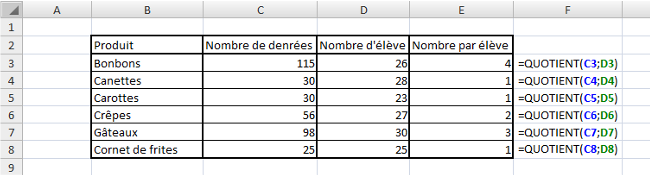
Simplifier ces fonctions
Nous venons de voir trois fonctions d'Excel qui sont très souvent utilisées et peuvent être simplifiées grâce aux opérateurs numériques que nous avons vus en introduction. Les voici :
Description
Opérateur
Simplification
Somme
+
=SOMME(B2;C4) revient à écrire =B2+C4
Différence
-
=SOMME(B2;-C4) revient à écrire =B2-C4
Produit
*
=PRODUIT(B2;C4) revient à écrire =B2*C4
Quotient
/
Pas de simplification
Nous pouvons prendre comme exemple un bulletin de notes pour regrouper l'addition, la multiplication et la division. Pour calculer la moyenne d'un élève au bac, on calcule dans un premier temps le nombre de points que rapporte chaque matière en multipliant la note par le coefficient. Dans un second temps, on obtient le nombre total de points obtenus et le nombre de coefficients total. Enfin, pour calculer la moyenne on divise le nombre de points par le nombre de coefficients pour avoir la moyenne sur 20. Dans notre exemple, notre élève de terminale S spécialité physique-chimie (précision qui n'a aucun intérêt ^^ ), obtient la moyenne de 13,71 :
Voilà la partie la plus simple de ce tutoriel de terminée. Bah ouais, on a juste vu les fonctions de calcul de base... On attaque la suite avec une nouvelle fonction.
MOD
Que permet-elle ?
Elle permet de renvoyer le reste d'une division.
Comment s'écrit-elle et quels paramètres ?
La fonction MOD s'écrit de la façon suivante et prend deux paramètres (comme pour la fonction QUOTIENT en fait).
=MOD(100;18)
Mais la plupart du temps, on ne connaît pas les nombres à diviser on utilise alors les coordonnées de cellules de cette façon :
=MOD(E2;F4)
Un exemple théorique et un exemple concret
Voici un exemple théorique sur des données aléatoires :
Pour ce qui est de l'exemple plus concret, on peut reprendre la liste des denrées par enfants. Mais ici, la colonne de résultat nous donne les restes après le partage équitable des denrées.
PGCD
Que permet-elle ?
Elle permet de renvoyer le plus grand dénominateur commun de plusieurs nombres ou cellules.
Comment s'écrit-elle et quels paramètres ?
La fonction PGCD s'écrit de la même façon que la fonction SOMME.
=PGCD(E2;F4;G6) pour calculer le PGCD des valeurs des cellules E2, F4 et G6. =PGCD(E2:E5) pour calculer le PGCD des valeurs des cellules E2, E3, E4 et E5.
Un exemple théorique et un exemple concret
Voici un exemple théorique sur des données aléatoires :
Vous ne voyez pas l'utilité du PGCD ? Voici un exemple : vous cherchez à couvrir une surface de 210 cm sur 135 cm avec des carreaux de carrelage. Il vous faut le moins de carreaux possible donc des carreaux les plus grands possible. Il faut aussi qu'on ait que des carreaux entiers. En effet, couper un carreau de carrelage, c'est pas facile... On cherche alors la taille d'un carreau (carré) de carrelage. On utilise alors le PGCD!
Petite pause
Nous allons faire une pause dans les fonctions pour présenter le concept de condition utile dans ... beaucoup de fonctions et notamment dans les prochaines fonctions présentées. C'est une pause dans l'étude des fonctions, mais pas dans l'apprentissage ! Ce passage est très important, mais pas compliqué. Il faut bien comprendre tout ça pour utiliser à bon escient les fonctions qui comportent des conditions.
Pour démarrer, on va expliquer ce qu'est une condition. Une condition commence toujours par un SI. Dans la vie courante, on peut dire : "Si je finis de manger avant 13h, je vais regarder le journal télévisé". On peut aussi aller plus loin en disant "Sinon, j'achète le journal". Pour Excel, c'est la même chose. On a une fonction SI présentée plus en détail dans la partie sur les fonctions logiques qui fonctionne de la même façon. Une condition et donc un "si", une valeur si c'est vrai et une valeur si c'est faut (qui correspond au sinon).
Pour faire une condition, il faut un critère de comparaison. Lorsque vous faites un puzzle, vous triez en premier les pièces qui font le tour pour délimiter le puzzle et aussi parce que le critère de comparaison entre les pièces est simple : sur les pièces du tour, il y a un côté plat. Donc lorsque vous prenez une pièce en main, vous comparez les côtés de la pièce à un côté plat et vous la mettez soit dans la boîte des pièces du tour soit dans les pièces qui seront retriées par la suite.
Dans Excel, ce critère de comparaison est soit une valeur, une cellule ou encore du texte. On compare les données d'une cellule à notre critère de comparaison et Excel renvoie VRAI si la comparaison est juste sinon Excel renvoie FAUX et Excel exécute ce que vous lui avez dit de faire en fonction de ce que renvoie la comparaison.
Pour comparer des valeurs numériques ou même du texte, on utilise des signes mathématiques. Le plus connu des signes de comparaison est égal à (=). Si les valeurs sont égales, alors fait ça sinon fait ci. Je vous donne la liste de tous les opérateurs utilisés dans Excel pour les comparaisons :
Opérateur de comparaison
Signification
=
Égal à
>
Supérieur à
<
Inférieur à
>=
Supérieur ou égal à
<=
Inférieur ou égal à
<>
Différent de
On peut donc avec ces opérateurs de comparaison, faire toutes les comparaisons possibles entre deux valeurs. On va alors s'entraîner à faire des comparaisons avec des données :
Comparaison
A3<=A4
B7<>G9
L2>A1
B2=B5
A4>=F8
M3<D9
Alors, vous savez à quoi correspondent toutes ces comparaisons? La réponse juste en dessous.
Comparaison
Signification (Si...)
A3<=A4
A3 est plus petit ou égal à A4
B7<>G9
B7 est différent de G9
L2>A1
L2 est plus grand que A1
B2=B5
B2 est égal à B5
A4>=F8
A4 est plus grand ou égal à F8
M3<D9
M3 est plus petit que D9
Pour comparer à une valeur sans passer par la cellule, on entre la valeur telle quelle : A1=10. Par contre si on veut comparer à du texte, il faut alors le mettre entre guillemets : A1="Jean".
On va complexifier cette notion de condition et de comparaison au fil du cours dans les différentes fonctions.
SOMME.SI
Que permet-elle ?
Elle permet l'addition de plusieurs nombres ou cellules selon un critère de comparaison.
Comment s'écrit-elle et quels paramètres ?
La fonction SOMME.SI s'écrit de la façon suivante et prend 2 ou 3 paramètres.
=SOMME.SI(plage;critère;[somme_plage])
Le premier paramètre est la plage, c'est l'ensemble des cellules à comparer. Le second est le critère de comparaison, c'est à ce critère que la fonction va comparer les cellules de la plage. Enfin, le troisième paramètre est facultatif. S'il n'est pas présent, ce sont les valeurs de la plage qui sont additionnées. Si le paramètre somme_plage est renseigné, ce sont les cellules de cette plage qui sont additionnées.
Ce qui nous donne pour une écriture avec des données aléatoires:
=SOMME.SI(E2:E8;">10";F2:F8)
On vient de voir que quand il y avait une comparaison, Excel renvoie VRAI si elle est juste sinon elle renvoie FAUX et qu'Excel exécute ce qu'il faut en fonction. Ici, l'instruction qui est faite par Excel après la comparaison, c'est la prise en compte ou non de la valeur. En fait si la condition est vraie, la valeur correspondante est prise en compte, sinon elle n'est pas prise en compte dans l'addition. On ne choisit pas ce que fait la fonction après avoir renvoyé VRAI ou FAUX, c'est la fonction qui s'en charge seule. On choisit seulement avec la fonction SI étudiée dans les fonctions logiques.
Un exemple théorique et un exemple concret
Voici un exemple théorique sur des données aléatoires :
Petite explication : la fonction regarde la cellule B2 et la compare au critère que nous avons entré, si cette valeur est plus grande que 320, alors j'intègre la cellule C2 dans l'addition, sinon je ne prends pas en compte la cellule C2. La fonction répète cela pour toutes les cellules de la plage de B2 à B10.
Pour voir si vous avez compris, on va refaire un exemple avec un cas concret. On va faire nos courses. Pour économiser, on achète que les articles à moins de 10€. Combien d'articles vais-je avoir à la sortie du magasin ?
Si le prix du savon est inférieur à 10€ alors j'achète les 2 savons (donc 2 articles). On fait la même chose pour toutes les lignes de la plage. On se retrouve à la sortie du magasin avec 14 articles. Alors que si nous avions tout acheté, nous aurions eu 16 articles.
Voilà ce qu'il y a à savoir sur la fonction SOMME.SI.
SOMMEPROD
Que permet-elle ?
Elle permet de comptabiliser des données en multipliant des matrices entre elles. Pour être clair, elle permet de compter le nombre d'entrées d'une liste selon des conditions, mais aussi d'additionner des cellules d'une liste selon des conditions.
Comment s'écrit-elle et quels paramètres ?
La fonction SOMMEPROD s'écrit de la façon suivante et prend un nombre très variable d'arguments.
Les paramètres sont tous les mêmes, ce sont des plages de cellules. Elles peuvent prendre deux formes. Soit, comme dans l'exemple plage1 et plage2, elle est suivie d'un critère de comparaison soit, comme dans l'exemple plage3, elle ne possède pas de critère de comparaison. On peut compter le nombre de lignes où la plage1 (colonne 1) est égale à critère1 et où la plage2 (colonne 2) est égale à critère2. Si on insère une troisième plage (colonne 3), on additionne les cellules de cette plage.
Je ne comprends pas tout là, ça reste flou pour moi...
Comme pour la fonction précédente, on utilise des critères de comparaison qui varient selon le type de données dans les plages. Voici un exemple plus concret pour expliquer (une exemple est plus parlant qu'un long discours) :
La première plage est comparée au critère "Jacques", la seconde au critère "Janvier" et la troisième n'a pas de critère de comparaison. La fonction va donc regarder sur la première ligne, si la première cellule est égale à "Jacques" et si la seconde cellule de la ligne est égale à "Janvier". Si c'est le cas, alors la valeur de la troisième cellule de la ligne est prise en compte dans l'addition. S'il n'y avait pas de troisième plage, la fonction se contente de compter le nombre de lignes où les deux comparaisons sont vraies. On obtient ainsi le nombre de fois où Jacques et Janvier sont sur la même ligne.
Avec cette fonction on peut compter le nombre de lignes qui respectent les conditions ou alors additionner les cellules de chaque ligne. Nous allons voir un exemple concret directement pour que ce soit plus facile à comprendre.
Un exemple concret
Nous allons utiliser une feuille de données que je vous montre ici (et disponible dans le fichier téléchargeable) :
Ce tableau représente les ventes de chaque vendeur d'un magasin sur les trois premiers mois de l'année. Il y a 4 vendeurs (Jean, Pierre, Paul, Jacques).
Comment faire pour savoir le nombre de ventes de Paul au mois de Mars ? En utilisant la fonction SOMMEPROD pardi !
Pour cela il faut entrer la formule suivante :
=SOMMEPROD((A2:A31="Paul")*(B2:B31="Mars"))
On obtient bien 3 ! Et oui Paul a fait 3 ventes au mois de Mars. Maintenant on cherche à savoir combien d'argent a rapporté Paul au mois de Mars. Il suffit de multiplier par la colonne "Montant" de cette manière :
Tada ! On obtient donc 2230. En effet, la fonction a effectué le calcul suivant : 840+660+730=2230. C'est top non ? On peut faire plein de combinaisons avec cette formule ! Mais attention il y a quelques règles à respecter :
Je vous propose d'autres exemples pour bien comprendre et voir un peu ce que l'on peut faire avec cette fonction.
Exemple 1 : compter le nombre de ventes réalisées par Jean (on peut aussi réaliser cette opération avec la fonction NB.SI) :
=SOMMEPROD((A2:A31="Jean")*1)
On obtient ainsi : 8. Cet exemple n'est pas le meilleur pour montrer la puissance de la fonction, mais elle montre qu'on n'est pas obligé d'avoir beaucoup de paramètres compliqués.
Exemple 2 : compter le nombre de ventes supérieures à 600€ au mois de Janvier :
=SOMMEPROD((B2:B31="Janvier")*(C2:C31>600))
On obtient ainsi : 2. On peut ainsi combiner les conditions pour prendre les valeurs comprises entre 200 et 600 par exemple.
Exemple 3 : totaliser la somme accumulée grâce à Pierre aux mois de Janvier et Mars :
Pour synthétiser ce tableau, on peut créer ces deux tableaux :
Dans chaque cellule non grisée, on a des fonctions SOMMEPROD. Je vous laisse vous entraîner en essayant de reproduire ces tableaux. Si vous avez des questions, demandez-moi dans les commentaires ou par MP. Pour les cellules grisées, on peut utiliser la fonction SOMME tout simplement. Je propose, pour bien apprivoiser la fonction étudiée, de l'utiliser pour obtenir les mêmes résultats qu'avec la fonction SOMME. Vous en êtes largement capable, j'ai confiance en vous ;) .
Nous en avons fini avec la fonction SOMMEPROD et j'espère que vous avez compris. Elle est vraiment très puissante et utile pour synthétiser des tableaux comme on vient de le faire !
PI
Que permet-elle ?
Elle permet de renvoyer la valeur de pi.
Comment s'écrit-elle et quels paramètres ?
Elle s'écrit de la façon suivante mais ne demande aucun paramètre :
=PI()
Un exemple d'utilisation
On cherche à calculer le périmètre et l'aire de différents disques selon leur rayon :
RACINE
Que permet-elle ?
Elle permet de calculer la racine carrée d'un nombre ou d'une cellule.
Comment s'écrit-elle et quels paramètres ?
Elle ne prend qu'un paramètre, un nombre ou une cellule.
=RACINE(100)
=RACINE(E2)
Un exemple d'application
En course d'orientation, je dois aller du point A au point B. Je connais la distance à vol d'oiseau entre ces deux points. Par contre, le carré au centre ne me permet pas d'aller tout droit c'est une forêt de buisson. Je dois donc calculer la distance à parcourir en prenant le chemin (trait noir).
On utilise alors le fameux théorème de Pythagore qui nous dit que AB²+AC²=BC² lorsque le triangle est rectangle en A. Ici, nous avons un carré donc les deux segments sont de mêmes longueurs et 2x²=AB². Il faut alors résoudre cette petite équation. 2x étant la distance à parcourir. Voici la réponse grâce à Excel :
ARRONDI
Que permet-elle ?
Elle permet d'arrondir le résultat d'un quotient par exemple au nombre significatif que l'on veut.
Comment s'écrit-elle et quels paramètres ?
Elle prend deux paramètres, le chiffre à arrondir et le nombre de décimal à afficher. On l'écrit ainsi :
On obtient alors la valeur 100,02. C'est très pratique au lieu de formater les cellules avec deux décimales avant de faire les calculs.
Un exemple théorique et un exemple concret
Pour vous montrer comment on utilise la fonction, on l'applique à des données aléatoires.
On vient de voir dans l'exemple que l'on peut appliquer des valeurs négatives. Vous avez sûrement deviné que ça permet d'arrondir avant la virgule et donc à la dizaine (pour -1) près ou à la centaine (pour -2) près.
Vous avez vraiment besoin d'un exemple concret pour cette fonction ? Allez, pour le fun et parce que je suis sympa, je vous en propose un. De plus la répétition permet l'apprentissage donc ça ne vous fera pas de mal ;) . J'aime bien la bouffe alors encore un exemple sur des courses :) .
ARRONDI.INF et ARRONDI.SUP
Que permettent-elles ?
Comme la fonction ARRONDI, elles permettent d'arrondir un chiffre selon un nombre de décimales ou, en utilisant les nombres négatifs, d'arrondir avant la virgule. Pour la fonction ARRONDI.INF on arrondit à l'inférieur alors qu'avec ARRONDI.SUP on arrondit au supérieur. On ne se préoccupe plus de savoir ce qui suit la partie tronquée.
Comment s'écrivent-elles et quels paramètres ?
De la même façon que la fonction ARRONDI. Elles prennent 2 paramètres, le nombre à arrondir et le nombre de décimales.
Je ne vais pas vous en dire plus sur cette fonction puisque c'est la même chose que pour la fonction ARRONDI. Je ne peux m'empêcher de vous proposer un exemple quand même :
ALEA.ENTRE.BORNES
Que permet-elle ?
Elle permet de renvoyer un nombre entier aléatoire qui est situé entre deux bornes spécifiées par l'utilisateur (c'est à dire vous).
Comment s'écrit-elle et quels paramètres ?
Elle prend deux paramètres obligatoires, la borne minimale (la valeur sera supérieure ou égale à cet argument) et la borne maximale (la valeur sera supérieure ou égale à cet argument).
=ALEA.ENTRE.BORNES(borne_minimale;borne_maximale)
Avec des valeurs aléatoires, on a ceci :
=ALEA.ENTRE.BORNES(0;100)
Si vous entrez cette formule chez vous, vous n'obtenez jamais le même résultat. C'est pourquoi je ne vous donne pas ce que j'ai parce que ce n'est pas forcement la même que vous. Mais on peut aussi spécifier des cellules (lorsque l'on entre des valeurs dans les cellules au lieu de modifier la formule) comme ceci :
=ALEA.ENTRE.BORNES(E2;F2)
Un exemple que vous pouvez adapter
Je vous présente ici un exemple avec différentes bornes totalement aléatoires et vous n'aurez pas les mêmes valeurs que moi. D'ailleurs, si vous recopiez la formule avec les mêmes bornes, vous n'aurez pas la même valeur.
Une combinaison avec la fonction ARRONDI
Pour obtenir un nombre aléatoire parmi les dizaines de 0 à 100. On cherche à avoir 0, 10, 20, 30, 40, 50, 60, 70, 80, 90 ou 100. Comment faire ? En combinant la fonction ARRONDI et la fonction ALEA.ENTRE.BORNES! Voici la réponse :
=ARRONDI(ALEA.ENTRE.BORNES(0;100);-1)
Vous pouvez donc adapter cet exemple, mais aussi combiner d'autres fonctions entre elles !
Dans cette seconde partie, nous allons étudier les fonctions « Logiques » d'Excel.
Ou à partir dur ruban et de l'onglet « Formules », de la rubrique « Bibliothèque de fonctions » et de cliquer sur « Insérer une fonction ». Une fenêtre s'ouvre, sélectionner dans le menu déroulant « Logique ».
Je vais vous proposer ici l'intégralité des fonctions de Logique. Ne vous inquiétez pas, ce n'est pas pour ça que c'est une grosse partie, car trois fonctions ne seront pas aussi détaillées que les autres. Il n'y a pas beaucoup de fonctions dans cette catégorie.
Pour suivre avec moi cette sous-partie et vous exercer de votre côté, je vous propose de :
Ce classeur Excel contient tous les exemples utilisés dans cette partie. Il y a la base des exemples, à vous d'entrer les formules.
SI
Que permet-elle ?
Elle permet de renvoyer une valeur ou une autre selon une condition. Tient, une condition, on en a déjà parlé. En effet, on dans la petite pause effectuée lors de la partie précédente, on a étudié les conditions, les critères de comparaison et les opérateurs permettant ces comparaisons. La fonction renvoie VRAI si la condition est respectée et FAUX si elle ne l'est pas.
Comment s'écrit-elle et quels paramètres ?
Cette fonction prend un paramètre obligatoire : le test logique (c'est une autre façon d'appeler la condition). Puis deux paramètres optionnels qui sont très souvent renseignés sinon la condition n'est pas très utile.
Le premier paramètre est donc le test logique tel que : C3=126. Ensuite, il faut mettre, entre guillemets si l'on souhaite mettre du texte, les valeurs si le test est bon tout d'abord puis s'il est faux. On a vu que la fonction renvoyait VRAI ou FAUX si la condition était respectée ou non. De ce fait, si la fonction renvoie VRAI, elle affiche alors la valeur si VRAI et affiche la valeur si FAUX si la fonction renvoie FAUX.
=SI(G23=I8;A2;B7)
En ce qui concerne les deux autres paramètres (valeur_si_vrai et valeur_si_faux), on peut les renseigner entre guillemets pour du texte, on peut mettre une valeur de cellule, on peut également décider de ne rien rentrer si la condition n'est pas respectée par exemple. Pour cela on utilise le double guillemets comme ceci : "". Ainsi, on affiche du texte qui n'a aucun caractère, donc on n'affiche rien.
Une autre petite information pour terminer avant les exemples, si l'on veut par exemple savoir si une valeur est contenue dans un intervalle (plus petit que mais aussi plus grand que), il faudrait alors que C3 soit plus petit que 100 mais aussi plus grand que 10. Dans ce cas, on peut utiliser une fonction SI dans une fonction SI de cette façon :
=SI(C3<100;SI(C3>10;valeur_si_vrai;valeur si C3 n'est pas plus grand que 10);valeur si C3 n'est pas plus petit que 100)
Ainsi, vous pouvez spécifier du texte selon si la valeur est trop petite ou trop grande. Ça peut être intéressant pour alerter l'utilisateur du classeur pourquoi la valeur entrée n'est pas conforme.
Des exemples d'applications pour pratiquer et apprendre
Dans un premier temps, nous allons utiliser comme depuis le début de ce cours, des données aléatoires puis dans un second temps un exemple concret.
Voilà pour ce qui est des valeurs aléatoires. Vous pouvez donc jouer avec pour vous les approprier.
Je vous propose un exemple de l'utilisation de la fonction SI imbriquée. On a une liste de notes obtenues au baccalauréat par des élèves. On leur attribut alors une mention (premier tableau) en fonction de la note. J'ai ajouté une coloration conditionnelle pour bien différencier les niveaux. La formule de la cellule C11 est notée sous le tableau.
Cette fonction SI très utilisée dans Excel est souvent combinée à d'autres fonctions que nous allons voir par la suite. Elle est aussi intégrée dans d'autres fonctions comme celle vues précédemment : SOMME.SI ou SOMMEPROD.
ET et OU
Que permettent-elles ?
Ces deux fonctions permettent de faciliter l'écriture des fonctions SI lorsque vous avez plusieurs conditions à respecter. La fonction ET permet de dire que deux ou plusieurs conditions soient respectées pour que la fonction renvoie VRAI et la fonction OU permet de dire que seulement une des deux ou plusieurs conditions doivent être respectées pour que la fonction renvoie VRAI.
Comment s'écrivent-elles et quels paramètres ?
Ces deux fonctions prennent un paramètre obligatoire et peuvent en prendre plusieurs si on veut plusieurs conditions dans ces fonctions. Voici la syntaxe :
Les conditions sont en fait des tests logiques vu lors de la fonction précédente et fonctionne exactement de la même façon. On va plutôt se pencher sur la différence entre ET et OU.
La fonction ET exige que toutes les conditions soient vraies pour renvoyer VRAI, si une seule des conditions est fausse, alors la fonction renvoi FAUX. La fonction OU exige qu'une seule des conditions soit vraie pour renvoyer VRAI.
Vous avez compris ? Pas trop n'est-ce pas. Et bien on va voir toutes les possibilités avec deux conditions avec la fonction ET et deux conditions avec la fonction OU. Pour chaque ligne, on donne ce que renvoie la condition 1 et ce que renvoie la condition 2 de la fonction puis le résultat que renvoie la fonction. Des exemples très simples sont mentionnés pour vous aider à comprendre.
Vous avez compris l'intérêt de ces fonctions ? Je vous vois ne pas osez, mais si allez y dites-le ! Oui, oui, on va les utiliser en les combinant avec la fonction SI pardi ! On écrit alors :
La fonction affiche la valeur_si_vrai si la fonction ET renvoie VRAI et la valeur_si_faux si la fonction ET renvoie FAUX.
Comment on sait si la fonction ET renvoie VRAI ou FAUX ?
Si tu te poses cette question, remontes un peu la page et lis le passage ;) On vient d'expliquer quand est-ce que la fonction ET renvoyait VRAI et quand elle renvoyait FAUX. C'est le même fonctionnement avec la fonction OU.
Différents exemples d'application
Pour donner un exemple de l'utilisation de la fonction ET, on va utiliser un tableau de recrutement de mannequin. Pour qu'elle soit admissible, une fille doit mesurer au moins 172 cm, peser au maximum 60 kg et avoir un tour de poitrine de 85. Voici le résultat :
Un autre exemple très simple pour finir sur ces fonctions à propos de la fonction OU. Elle analyse si l'utilisateur est un utilisateur Windows ou non.
SIERREUR
Que permet-elle ?
Elle permet d'afficher une valeur "par défaut" dans une cellule si le calcul initialement prévu provoque une erreur. Par exemple, une division par 0 va afficher #DIV/0!, on va alors utiliser cette fonction pour afficher le message que l'on veut.
Comment s'écrit-elle et quels paramètres ?
Cette fonction ne prend que deux paramètres, mais les deux sont obligatoires. Le premier est la valeur à afficher normalement et la seconde, la valeur à afficher en cas d'erreur de la première.
=SIERREUR(valeur;valeur_si_erreur)
Cette fonction est très simple à comprendre et permet de ne plus afficher les vilains messages d'erreur d'Excel et d'expliquer plus explicitement les erreurs.
=SIERREUR(E2;E3)
Avec en E2, une division par 0 et en E3 le texte suivant : "Vous essayer de diviser un nombre par 0". L'utilisateur du classeur sait alors ce qu'il doit corriger.
Un exemple
Pour une division par 0 :
Il existe d'autres types d'erreurs décrites ici par Etienne-02.
Nous en avons fini avec les fonctions de la catégorie Logique. Elles ne sont pas nombreuses et je ne vous ai pas présenté les fonctions VRAI, FAUX et NON qui renvoient respectivement, VRAI, FAUX et l'inverse de la valeur logique de l'argument (VRAI pour FAUX et FAUX pour VRAI). Pour les deux premières fonctions, il n'y a pas d'argument. Pour la dernière, elle prend comme paramètre une valeur.
Avançons dans notre domptage des fonctions Excel avec la catégorie suivante.
Dans cette partie nous allons étudier les fonctions de la catégorie « Recherche et référence » d'Excel.
Ou à partir dur ruban et de l'onglet « Formules », de la rubrique « <italique »Bibliothèque de fonctions</italique> » et de cliquer sur « Insérer une fonction ». Une fenêtre s'ouvre, sélectionner dans le menu déroulant des catégories : « Recherche & Matrices ».
Comme dans les autres catégories, nous centrerons notre étude sur les fonctions utiles que vous ne connaissez peut-être pas.
Pour suivre avec moi cette sous-partie et vous exercer de votre côté, je vous propose de :
Ce classeur Excel contient tous les exemples utilisés dans cette partie. Il y a la base des exemples, à vous d'entrer les formules.
COLONNE et LIGNE
Que permettent-elles ?
Nous traitons les deux fonctions en même temps, car elles ont le même rôle, mais dans un sens différent. Vous l'aurez deviné, la fonction COLONNE dans le sens vertical et LIGNE dans le sens horizontal.
Ces fonctions permettent de renvoyer le numéro de la colonne ou celui de la ligne selon la fonction d'une cellule ou d'une plage de cellule ou même le nom d'une plage de cellule.
C'est quoi le nom d'une plage de cellule ?
On peut nommer des plages de cellule sur Excel pour éviter d'avoir à la référencer avec les lettres et chiffres des colonnes. Ainsi, une plage de cellule allant de la cellule A1 à la cellule C5 est appelée A1:C5. Lorsque cette plage est sélectionnée, faites un clic droit et cliquez sur Nommer une plage....
Une fenêtre s'ouvre, il suffit de remplir le champ Nom et de cliquer sur OK.
Vous remarquez que, à gauche de la barre de formule, apparaît le nom de votre plage. C'est ce nom de plage que l'on peut envoyer à la fonction COLONNE ou LIGNE pour connaître le numéro de colonne ou ligne où elle se trouve. C'est le numéro de la première colonne ou ligne de la plage qui est renvoyé.
On va pouvoir passer au détail de ces fonctions.
Comment s'écrivent-elles et quels paramètres ?
Les deux fonctions ne prennent qu'un paramètre qui n'est pas obligatoire. Si la fonction n'a pas de paramètres, elle renvoie le numéro de ligne ou colonne de la cellule dans laquelle elle est entrée. Si elle a un paramètre, elle renvoie le numéro de ligne ou colonne de ce paramètre (cellule, plage ou nom de plage).
=COLONNE(Ma_plage)
=COLONNE() =LIGNE(Ma_plage)
=LIGNE()
Quelques exemples
On utilise cette fonction surtout pour des noms de plage puisque pour les autres, les coordonnées de cellule permettent de donner ces renseignements. Par contre, nous avons des chiffres pour les colonnes et non les lettres utilisées par Excel. Il faudra alors connaître la correspondance entre les chiffres et les lettres.
COLONNES et LIGNES
Que permettent-elles ?
Facile on vient de le voir, elles permettent de connaître l'emplacement d'une plage... Quoi c'est pas ça ?
Euh regarde bien, il y a un "s" à chaque fonction, elles ont donc une autre fonction. Je l'admets elles fonctionnent de la même façon que les fonctions précédentes. Mais ces fonctions renvoient la largeur ou la hauteur d'une plage de cellule. C'est intéressant lorsque vous n'avez pas de renseignement sur la plage, par exemple lorsque l'on dispose simplement du nom de la plage.
Comment s'écrit-elle et quels paramètres ?
Elles ne prennent qu'un paramètre, mais cette fois-ci il est obligatoire sinon la fonction ne fonctionne pas.
=COLONNES(plage)
=LIGNES(plage)
Quelques exemples
En reprenant le tableau des plages précédentes, on peut connaître la largeur et la hauteur de chaque plage.
En combinant ces 4 fonctions (COLONNE, LIGNE, COLONNES, LIGNES), on peut transformer le nom de la plage en coordonnées de cellule. Dans cet exemple on cherche alors à trouver les coordonnées de chaque plage.
Comment fais-tu ce tableau ? Je n'y comprends pas grand-chose, d'habitude, tu nous donnes les formules...
Ma générosité me perdra, mais là je vous accorde que des petites explications ne seraient pas de trop.
Ça ne vous suffit pas ? Je vous l'accorde, c'est encore flou. On va passer une par une les lignes de ce dernier tableau. Chaque ligne correspond à une colonne du tableau précédent. Dans la première colonne, on cherche le numéro de la colonne de la première cellule de la plage avec la fonction COLONNE. Dans la colonne D, on cherche grâce à la fonction RECHERCHEV (étudiée un peu plus loin dans ce cours), la lettre correspondante à ce chiffre dans l'alphabet. Voici le tableau que l'on utilise pour la recherche :
Je vous expliquerai cette fonction plus en détail au moment voulu. Ici vous voyez qu'on affiche une lettre au lieu d'un chiffre grâce à la fonction. Dans la colonne suivante, on affiche le numéro de ligne de la première cellule avec la fonction LIGNE. On obtient alors les coordonnées de la première cellule de la plage. Grâce à la fonction CONCATENER, que nous verrons plus tard, on peut afficher les coordonnées de la cellule.
On travaille ensuite sur la plage en rapportant la largeur et la hauteur de la plage grâce aux fonctions COLONNES et LIGNES respectivement.
Puis dans les quatre colonnes suivantes, on cherche où se termine la plage en ayant les coordonnées de la dernière cellule. Pour le numéro de colonne, on ajoute à la position de la première cellule, la largeur de la plage. On enlève ensuite 1 puisque sinon on additionne la largeur de la plage et le numéro de colonne donc on se décale d'une colonne en trop. On rattrape cette erreur en faisant "-1". On utilise la même fonction RECHERCHEV pour trouver la lettre correspondante comme pour la première cellule. Pour le numéro de ligne, on additionne le numéro de ligne de la première cellule et la hauteur de la plage et on enlève 1 pour les mêmes raisons que la largeur. On obtient ainsi, avec la fonction CONCATENER, les coordonnées de la dernière cellule de la plage.
Enfin dans la dernière colonne, on utilise de nouveau la fonction CONCATENER pour assembler les coordonnées de la première cellule et de la dernière cellule. On obtient ainsi les coordonnées de la plage.
J'espère que ces explications vous ont aidées à comprendre malgré que vous ne connaissiez pas toutes les fonctions. Mais je voulais vous montrer l'utilité de ces fonctions pour connaître les coordonnées d'une plage sans regarder le détail des plages.
RECHERCHEV
Que permet-elle ?
Comme on l'a vu un peu dans la description précédente, elle permet de rechercher une valeur dans un tableau, plage de cellule ou matrice et de renvoyer une valeur associée. Elle cherche dans la première colonne et renvoie une valeur d'une des autres colonnes sur la même ligne.
Comment s'écrit-elle et quels paramètres ?
Cette fonction prend plusieurs paramètres, trois obligatoires et un facultatif. Voici comment elle s'écrit :
La valeur cherchée peut être une valeur chiffrée, du texte (qui sera alors entre guillemets) ou une cellule (et donc la valeur qu'elle contient). Elle doit être obligatoirement dans la première colonne sinon la cellule contenant la fonction RECHERCHEV vous renvoie l'erreur suivante : #NOM?.
Ensuite on spécifie la plage dans laquelle on fait la recherche, soit en écrivant les coordonnées des cellules (exemple : A1:B16) soit en spécifiant le nom de la plage (exemple : ma_plage).
Enfin, le troisième paramètre concerne le numéro de la colonne dans laquelle la fonction doit chercher la valeur à retourner. Il est donc inutile d'indiquer la première colonne puisque c'est dans celle-ci que la recherche est faite.
En ce qui concerne le paramètre facultatif, il peut prendre que deux valeurs différentes : VRAI ou FAUX. S'il n'est pas spécifié, il a pour valeur VRAI. Quand il vaut VRAI, la première colonne doit être dans l'ordre croissant et la fonction recherche une valeur approximative. Quand il vaut FAUX, la fonction cherche la valeur exacte. Si la fonction ne trouve pas la valeur exacte, elle renvoie : #N/A.
Des exemples d'applications
Un premier exemple où l'on recherche un nombre et renvoi un autre nombre. Dans cet exemple, on a un barème où sont représentés des temps dans la colonne de gauche et la note correspondante dans la seconde colonne. Ainsi dans le tableau de droite, on entre le temps de chaque élève en face de son nom et la fonction se charge de trouver elle-même la note correspondante.
Ici on ne cherche pas une valeur exacte, mais dans quel intervalle se trouve notre valeur pour lui attribuer une note. Il n'y a donc qu'une valeur qui change entre les différentes formules, c'est la valeur recherchée.
L'exemple suivant n'est pas très révélateur parce que nous n'avons pas beaucoup de données (je ne vais pas faire l'inventaire de toutes les villes de France ^^ ). Mais imaginez que vous ayez une liste interminable de données. Vous pouvez, grâce à la fonction RECHERCHEV, faire la phrase que vous voulez en entrant juste le nom de la ville dans la cellule D11 (vous pouvez même faire une liste déroulante pour choisir la ville, je vous présente cette solution juste après).
Nous avons défini la plage de recherche aux cellules B2:F9 que l'on a renommée villes. Nous n'avons pas pris la première colonne en compte pour que la recherche se fasse dans la colonne Ville.
Voici les deux formules entrées dans les cellules B13 et B14 :
=CONCATENER(D11;" est une ville de ";RECHERCHEV(D11;villes;3);" habitants qui s'appellent les ";RECHERCHEV(D11;villes;5);".")
=CONCATENER("La densité est de ";RECHERCHEV(D11;villes;2);" habitant/km². Elle fait partie de la région ";RECHERCHEV(D11;villes;4);".")
Nous allons maintenant mettre une liste déroulante pour choisir la ville. Je vais, par la même occasion, vous montrer comment faire une liste déroulante. On commence maintenant par l'explication du fonctionnement.
Lorsque l'on choisit une ville dans la liste déroulante, celle-ci est rattachée à une cellule. On peut alors chercher la ville dans notre tableau pour avoir les informations sur la ville.
Pour insérer la liste déroulante, placer votre curseur sur la cellule D11. Puis, dans l'onglet Données, dans la rubrique Outils de données, cliquer sur Validation des données.
Une fenêtre s'ouvre alors. Nous allons renseigner les champs et valider puis la liste sera créée. Dans la fenêtre qui s'ouvre, l'onglet Options est présélectionné sinon faites-le. Puis dans la liste Autoriser, sélectionnez Liste.
Laisser les paramètres par défaut. Pour la source, sélectionner la liste des villes que vous voulez voir apparaître. Pour cela placer le curseur dans la case Source et sélectionner les villes puis appuyer sur OK.
Vous avez maintenant une magnifique liste déroulante. Votre utilisateur ne pourra pas se planter dans l'orthographe de la ville et faire planter sa recherche.
Vous pouvez alors sélectionner la ville que vous voulez et les informations apparaissent automatiquement. Sympa non ?
Nous en avons fini avec la fonction RECHERCHEV. Cette fonction est très utile dans l'utilisation d'Excel. Alors, entraînez-vous et relisez ce passage si besoin.
RECHERCHEH
Que permet-elle ?
Cette fonction permet de faire exactement la même chose que la fonction RECHERCHEV mais dans l'autre sens, c'est à dire à l'horizontale.
Comment s'écrit-elle et quels paramètres ?
Comme je vous l'ai déjà dit, elle fonctionne exactement de la même façon que la fonction RECHERCHEV. Elle prend le même nombre de paramètres (3 obligatoires et un facultatif). Je vous la présente ici :
Je vais vous présenter un exemple juste pour vous entraîner. C'est juste que le sens s'inverse, on passe de la verticale à l'horizontale.
Un exemple
Comme pour l'exemple sur les villes, ces fonctions de recherche sont très utiles lorsque vous avez de longues listes ou alors des listes déroulantes qui renvoient des nombres et donc vous cherchez l'élève correspondant à ce nombre.
Je ne détaille pas cette capture d'écran, les formules sont indiquées. C'est la même manipulation que la fonction précédente. La plage A1:I6 est appelée notes.
RECHERCHE (forme vectorielle)
Que permet-elle ?
Elle permet de rechercher une valeur dans une colonne ou une ligne (c'est ce que l'on appelle un vecteur) et de renvoyer la valeur correspondante contenue dans un autre vecteur (ligne ou colonne) de même taille. Les données du vecteur dans lequel la fonction cherche doivent être triées dans l'ordre croissant.
Comment s'écrit-elle et quels paramètres ?
Cette fonction a trois paramètres obligatoires. Le premier est la valeur cherchée, le deuxième est le vecteur de recherche et le troisième est le vecteur de résultat. On note alors la fonction ainsi :
Souvenez-vous que le vecteur est soit une ligne soit une colonne et que les vecteurs de recherche et de résultat doivent être de même longueur.
Cette fonction est utilisée lorsque les vecteurs ne sont pas au même niveau dans le tableur ou si vous avez pour chaque vecteur, un nom de plage. Il suffit de noter les noms de plage correspondant pour effectuer la recherche. Cela remplace la fonction RECHERCHEV ou RECHERCHEH et devoir connaître le numéro de colonne pour le résultat.
Des exemples, encore des exemples
Reprenons notre tableau sur les villes de France. On va effectuer les mêmes recherches, mais en appliquant des noms de plage à chaque colonne.
Plage
Nom
B2:B9
ville
C2:C9
densité
D2:D9
nombre_habitant
E2:E9
région
F2:F9
habitant
Voici l'exemple, je vous présente la formule ensuite :
On a donc utilisé l'exemple de Marseille. Dans la cellule D11 on a donc la valeur Marseille. La formule qui nous permet d'avoir la phrase de présentation est la suivante :
Ne vous préoccupez pas de la fonction CONCATENER pour l'instant nous la verrons en temps voulu. Attardons-nous plutôt sur les fonctions RECHERCHE. Nous avons donc à chaque fois la même valeur recherchée, le même vecteur de recherche, mais c'est le vecteur de résultat qui change. Le nom des plages nous permet de bien nous repérer dans cette longue formule et la fonction RECHERCHE permet à cette formule d'être plus lisible.
Nous avons vu que la fonction RECHERCHE (forme vectorielle) est de la même utilité que les fonctions RECHERCHEV et RECHERCHEH mais dans des contextes un peu différents.
RECHERCHE (forme matricielle)
Que permet-elle ?
Elle permet de chercher une valeur dans une matrice (un tableau) et de renvoyer la valeur correspondante de la dernière ligne ou colonne. Elle combine donc les fonctions RECHERCHEV et RECHERCHEH mais elle ne permet de renvoyer la valeur que de la dernière colonne ou ligne.
Comment s'écrit-elle et quels paramètres ?
Elle ne prend que deux paramètres obligatoires. Le premier la valeur recherchée et le second la matrice dans laquelle il faut faire la recherche. On a donc cette syntaxe :
=RECHERCHE(valeur_recherchée;matrice)
Mais la recherche se fait dans la première ligne ou dans la première colonne ?
Bonne question. Déjà, vous savez que la recherche se fait toujours dans le premier vecteur (colonne ou ligne). S'il y a plus de colonnes que de lignes, alors la recherche se fait dans la première ligne (recherche horizontale). S'il y a plus de ligne que de colonne alors c'est l'inverse, la recherche se fait dans la première colonne (recherche verticale). S'il y a autant de lignes que de colonnes, la matrice est donc un carré, la recherche se fait dans la première colonne (recherche verticale).
On voit donc que si la matrice a plusieurs lignes et plusieurs colonnes, on ne peut avoir de renseignement que sur la dernière colonne ou la dernière ligne. Toutes les lignes ou colonnes entre les deux ne peuvent être trouvées. Il faut alors changer de fonction (RECHERCHEV, RECHERCHEH ou RECHERCHE forme vectorielle).
Cette fonction est utilisée lorsque vous n'avez que deux colonnes ou deux lignes. Comme ça, vous n'avez pas à spécifier la colonne de résultat (le troisième paramètre des fonctions RECHERCHEV et RECHERCHEH).
Un exemple
Pour cet exemple, je vous propose un exemple qui va peut-être être abstrait pour vous. On a enregistré toutes les minutes la fréquence cardiaque (FC) d'un marcheur pendant 90 minutes. On a alors un tableau de deux colonnes (une pour le temps en minutes et l'autre pour la FC en battement par minute = BPM) et 90 lignes.
Si on utilise la fonction recherche, elle se fera dans le sens vertical puisqu'on a beaucoup plus de lignes que de colonnes. On peut alors connaître la FC à un moment précis de la marche avec la fonction RECHERCHE forme matricielle. La plage est appelée FC (A2:B91).
Voici les résultats que l'on peut en tirer avec la fonction RECHERCHE (forme matricielle) :
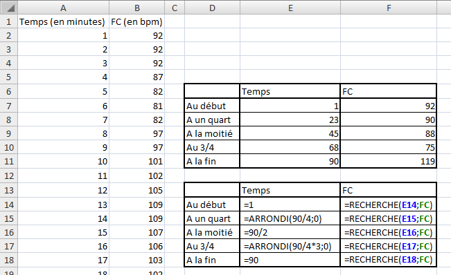
TRANSPOSE
Que permet-elle ?
Elle permet de mettre sur une ligne des données en colonne et inversement. Elle est utile lorsque vous avez un tableau à double entrée à faire et que les entrées verticales et horizontales sont identiques. Quand on modifie la plage à transposer, l'autre plage se modifie aussi. Nous verrons cela dans les exemples.
Comment s'écrit-elle et quels paramètres ?
Cette fonction est particulière puisqu'elle prend la forme d"une matrice. Vous vous demandez sûrement ce qu'est une matrice... On a déjà utilisé le terme puisque c'est un tableau lorsque l'on regarde la matrice, elle a la même forme qu'un tableau (un nombre de ligne et de colonne défini). C'est en fait une plage de cellules spéciales qui varie sans que l'on modifie directement cette plage. On ne va pas s'éterniser sur la définition. Nous allons l'illustrer plus tard.
{=TRANSPOSE(plage)}
On voit que des crochets apparaissent, mais ils ne sont pas entrés par le clavier. Ceux-ci sont entrés par une combinaison de touches que nous allons voir. Pour transposer la plage A2:A21 (donc une colonne) nous allons écrire la formule suivante dans la cellule B1 :
=TRANSPOSE(A2:A21)
Dans la cellule s'affiche une erreur : #VALEUR!. C'est normal puisque la plage (la ligne) n'a pas la même taille que l'autre plage (la colonne) en nombre de cellules. Pour la transposer, on va alors sélectionner le nombre de cellules voulu à partir de B2 c'est-à-dire 20 cellules (jusqu'à la colonne U).
Ensuite on appuie sur la touche F2. Le curseur se place alors dans la cellule de la formule (la première cellule de la sélection). Il faut alors appuyer simultanément sur CTRL+SHIFT+Entrée. La touche SHIFT est aussi appelée touche MAJ. Voilà, on obtient donc une ligne qu'avec des zéros. Bah oui parce qu'on a rien mis dans la colonne ^^ . On va donc maintenant faire un exemple pour bien voir ce que ça donne.
Si vous voulez exploiter les données ensuite, faites un copier-coller et un collage spécial en sélectionnant Valeurs dans la petite fenêtre qui s'ouvre.
Pour supprimer une matrice, sélectionner entièrement la matrice et appuyer sur supprimer. Ne pas prendre qu'une cellule sinon vous aurez un message d'erreur très difficile à enlever.
Deux exemples
Un exemple dans le football, on cherche à avoir un tableau qui résume les scores de l'année en Ligue 1. On entre tout d'abord la liste des équipes dans les cellules A1 à A21 comme ceci :
Pour pouvoir résumer les scores, on va alors entrer les mêmes équipes dans les cellules de B1 à U1 avec la fonction TRANSPOSE. Sélectionner les cellules B1 à U1 puis appuyer sur F2. Ensuite entrer la formule suivante :
=TRANSPOSE(A2:A21)
Puis appuyer sur la combinaison de touches vue auparavant : Ctrl+Shift+Entrée. Vous obtenez alors un tableau à double entrée avec les mêmes noms d'équipes.
Ensuite vous pouvez trier la liste dans l'ordre alphabétique des équipes dans la colonne A et la liste des équipes de la ligne 1 se mettra à jour toute seule. Vous pouvez aussi modifier le nom d'une équipe mais, comme je vous l'ai dit, que dans la colonne A (la plage à transposer).
Pour un autre exemple, je vous laisse aller voir celui-ci qui est très bien fait.
Nous en avons fini avec les fonctions de Recherche et référence. Il en existe d'autres, vous pouvez les découvrir en les testant mais elles sont moins utilisées.
Dans cette partie, nous allons étudier les fonctions « Statistiques » d'Excel. Elles se trouvent ici :
A partir du ruban et de l'onglet « Formules », de la rubrique « Bibliothèque de fonctions » et dans la catégorie « Plus de fonction » puis « Statistiques » :
Une fenêtre s'ouvre, sélectionner dans le menu déroulant de la catégorie : « Statistiques ».
Comme dans les autres catégories, nous centrerons notre étude sur les fonctions utiles que vous ne connaissez peut-être pas.
Pour suivre avec moi cette sous-partie et vous exercer de votre côté, je vous propose de :
Ce classeur Excel contient tous les exemples utilisés dans cette partie. Il y a la base des exemples, à vous d'entrer les formules.
Dans cette catégorie, il y a beaucoup de fonctions très poussées sur les statistiques. Je décrierais que les fonctions de bases que vous serez amené à utiliser et non les fonctions complexes comme la LOI.KHIDEUX.
MAX et MIN
Que permettent-elles ?
Ces fonctions permettent de renvoyer le maximum et le minimum d'une liste de nombres.
Comment s'écrivent-elles et quels paramètres ?
Ces fonctions prennent au moins un paramètre et ce nombre peut aller jusqu'à 255 plages de cellule. On peut donc comparer un grand nombre de valeurs.
=MAX(plage1;plage2;nombre1;nombre2;...)
=MIN(plage1;plage2;nombre1;nombre2;...)
La fonction renvoie la plus petite valeur trouvée dans cette liste de valeurs.
Un exemple théorique et un exemple concret
Avec des données aléatoires on obtient ceci :
On cherche dans notre exemple, le nombre maximum et minimum de chaque paramètre du classement.
MOYENNE
Que permet-elle ?
Elle renvoie la moyenne d'une liste de valeurs. Tout le monde a déjà eu des moyennes à l'école et connaît le principe. C'est cette fonction qui permet de faire ça.
Comment s'écrit-elle et quels paramètres ?
Comme pour les fonctions précédentes, elle prend au minimum un paramètre et peut en prendre jusqu'à 255 paramètres.
=MOYENNE(plage1;nombre1;plage2;...)
Elle est donc très simple d'utilisation. On va donc pouvoir se passer d'un exemple théorique et faire directement un exemple pratique.
Un exemple concret
On va faire la moyenne des prix des voitures proposées par un garage.
MOYENNE.SI
Que permet-elle ?
Elle combine la fonction MOYENNE et la fonction SI pour donner la moyenne d'une série de valeurs qui respectent une condition.
Comment s'écrit-elle et quels paramètres ?
Cette fonction prend deux paramètres obligatoires et un facultatif. Le premier est la plage à comparée, le second la condition et le troisième, la plage des cellules dont il faut faire la moyenne si elle diffère du premier paramètre. Ce paramètre est utile si l'on veut comparer les cellules d'une colonne mais faire la moyenne de la colonne adjacente.
=MOYENNE.SI(plage1;condition;[plage2])
Nous avons déjà vu ce type de fonction avec SOMME.SI. C'est la même chose sauf que là, au lieu d'additionner des valeurs on fait leur moyenne.
Un exemple théorique et un exemple concret
Nous allons utiliser des données aléatoires pour le premier exemple puis un exemple d'application concret.
Pour l'exemple concret, on va faire la moyenne des notes à un test de logique d'un groupe de personne en fonction de leur quotient intellectuel (QI).
Cet exemple ressemble beaucoup à celui de la fonction SOMME.SI et pour cause, elle fonctionne de la même façon.
MEDIANE
Que permet-elle ?
Elle permet de renvoyer la médiane d'une série de nombres. La médiane est le centre de cette série. La répartition des valeurs de cette série de part et d'autre de la médiane est de 50% pour chaque partie. Cela signifie qu'il y a autant de valeur sous la médiane qu'au dessus.
Comment s'écrit-elle et quels paramètres ?
C'est comme pour les autres fonctions statistiques, on peut lui donner jusqu'à 255 valeurs.
=MEDIANE(plage1;nombre1;nombre2;plage2)
C'est utile pour séparer un groupe en deux de façon équitable comme nous l'avons fait à l'exemple précédent en prenant la médiane des QI qui était 140.
Un exemple théorique et un exemple concret
Un exemple avec des données aléatoires :
La fonction MEDIANE peut être combinée à la fonction MOYENNE. Si ces deux valeurs sont proches, cela signifie que la répartition des valeurs est symétrique. On peut également rajouter la fonction MODE qui renvoie la valeur qui revient le plus souvent dans une liste. Si les trois fonctions renvoient la même valeur, alors la série a une distribution symétrique.
En comparant les valeurs renvoyées par les fonctions MEDIANE et MOYENNE, on peut voir si, par exemple dans une classe, il y a des élèves qui "tirent" la classe vers le haut ou vers le bas. Sur une liste de produit, on peut voir aussi si un des articles à un prix beaucoup plus faible ou plus élevé.
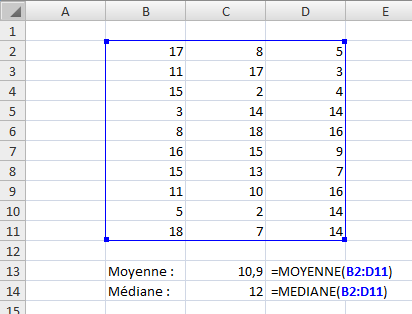
ECARTYPE
Que permet-elle ?
Elle permet de renvoyer l'écart type d'une série de valeur. L'écart type mesure la dispersion des valeurs autour de la moyenne. La fonction ECARTYPE part de l'hypothèse que la série de valeur est un échantillon de la population. Pour évaluer l'écart type d'une population totale, il faut utiliser la fonction ECARTYPEP qui fonctionne de la même façon.
En statistique, l'écart type permet d'évaluer à partir d'un échantillon aléatoire d'une population, la dispersion des valeurs de la population entière. Cette fonction est donc spécifique au monde des statistiques.
Comment s'écrit-elle et quels paramètres ?
Elle prend les mêmes paramètres que les autres fonctions, des nombres, plages de cellule au nombre de 255 maximum.
=ECARTYPE(nombre1;nombre2;nombre3;...)
Exemple
En voyant notre exemple, on peut donc affirmer statistiquement que par rapport à la moyenne d'âge, la dispersion est de plus ou moins 7,18 ans. Pour ce qui est du nombre d'enfants, la dispersion est de plus ou moins 1,68. Enfin, pour la taille, la dispersion est de plus ou moins 8,07cm.
FREQUENCE
Que permet-elle ?
Elle permet de renvoyer la répartition des valeurs d'une série dans des intervalles définis.
Comment s'écrit-elle et quels paramètres ?
Comme la fonction TRANSPOSER, c'est une fonction matricielle. Elle prend deux paramètres obligatoires, le premier la plage des valeurs à classer et le second, les intervalles. Les valeurs d'intervalles doivent être dans l'ordre croissant. La première valeur représente le premier intervalle : toutes les valeurs inférieures à cette première valeur d'intervalle composent le premier intervalle. Les valeurs inférieures à la deuxième valeur d'intervalle composent le deuxième intervalle et ainsi de suite jusqu'à la dernière valeur. La dernière valeur permet de définir deux intervalles : le premier avec les valeurs inférieures à cette valeur d'intervalle qui composent l'avant-dernier intervalle et le second avec les valeurs supérieures à cette valeur d'intervalles qui composent donc le dernier intervalle. Un petit schéma explicatif :
Si on a 9 valeurs pour définir nos intervalles, on aura alors 10 intervalles (d'où le x+1)
=FREQUENCE(plage_de_valeur;plage_d'intervalle)
Lorsque l'on écrit la fonction dans une cellule, il faut ensuite sélectionner verticalement une cellule de plus que le nombre de cellules qu'occupe les limites des intervalles. Ensuite appuyer sur F2 puis simultanément sur Ctrl+Shift+Entrée. C'est ce que nous avons fait pour la fonction TRANSPOSE.
L'exemple comme explication
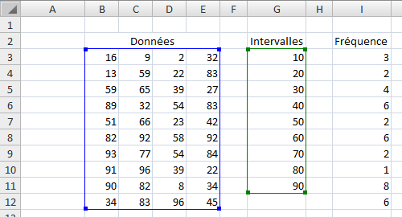
La première fréquence correspond au nombre de valeurs inférieures à 10, la deuxième le nombre de valeurs inférieures à 20 et ainsi de suite jusqu'au nombre de valeurs supérieures à 90.
Un petit exemple sur la préférence du type de film d'une population. On a 6 types de films et on obtient la répartition (fréquence) selon les préférences de chacun.
On a mis des valeurs d'intervalle situées entre les nombres associés aux films pour être sûr d'avoir des valeurs différentes des valeurs d'intervalle.
NB
Que permet-elle ?
Elle permet de renvoyer le nombre de cellules d'une plage qui comporte un nombre.
Comment s'écrit-elle et quels paramètres ?
Cette fonction est une fonction de la catégorie des statistiques et donc fonctionne de la même façon. Il suffit de lui donner en paramètre la plage que l'on veut compter. On peut donner jusqu'à 255 valeurs de plages.
=NB(plage1;plage2)
La fonction additionne le nombre de la première et de la seconde plage.
Un exemple théorique et un exemple concret
Avec des données aléatoires, ça donne ça :
NBVAL et NB.VIDE
Je ne vais pas décrire ses fonctions dans le détail parce qu'elles fonctionnent comme la fonction NB. Elles ont la même fonction : compter. La fonction NBVAL compte les cellules non vides (donc compte les cellules contenant du texte) d'une plage alors que NB.VIDE compte le nombre de cellules vides d'une plage.
NB.SI
La fonction NB.SI fonctionne comme la fonction SOMME.SI et la fonction MOYENNE.SI. Elle permet de compter les cellules selon une condition.
Ce classeur Excel contient tous les exemples utilisés dans cette partie. Il y a la base des exemples, à vous d'entrer les formules.
CONCATENER
Que permet-elle ?
Cette fonction, je l'ai déjà utilisée dans le tutoriel car elle est très pratique pour afficher du texte. En effet, elle permet de mettre bout à bout des chaînes de caractère (du texte) pour n'en former qu'une. Si vous avez lu le cours jusque-là, vous en avez vu l'utilité. Elle permet de présenter le texte de façon lisible pour l'utilisateur.
Comment s'écrit-elle et quels paramètres ?
Cette fonction prend autant d'arguments qu'il y a de chaînes de caractères à mettre bout à bout (jusqu'à 255).
=CONCATENER(texte1;[texte2];...)
Pour les chaînes qui comprennent du texte, il faut les mettre entre guillemets. Si on veut aussi concaténer des cellules, alors les guillemets sont omis. Il y a un point-virgule (;) entre chaque chaîne à concaténer.
=CONCATENER("Le résultat de la somme est : ";B12)
La fonction nous permet de faire une phrase dans une seule cellule contenant le résultat d'une opération qui changera si le résultat change.
Citation : Correct
<p><strong>=CONCATENER("Le résultat est : ";B5)</strong></p>
Citation : Incorrect
<p><strong>=CONCATENER("Le résultat est :"; B5)</strong></p>
Je ne sais pas si les exemples sont utiles puisque j'en est déjà fait auparavant... :-° Mais je sens que vous en demandez, donc c'est parti !
Les exemples
Pour l'exemple, on va demander à l'utilisateur de remplir un petit tableau afin de lui raconter une histoire.
Bon j'avoue que c'est pas adapté à chaque personne, ça dépend de ce que l'utilisateur entre dans les cellules, mais c'est pour montrer ce que l'on peut faire avec cette fonction.
EXACT
Que permet-elle ?
Elle permet de comparer 2 chaînes de caractères et dire si elles sont identiques ou non.
Comment s'écrit-elle et quels paramètres ?
Cette fonction prend deux paramètres obligatoires : les deux chaînes de caractères.
=EXACT(texte1;texte2)
La fonction renvoie VRAI si les deux arguments sont identiques et FAUX s'ils ne le sont pas. La fonction différencie les majuscules et les minuscules.
Un exemple théorique
Avec des données aléatoires :
CHERCHE
Que permet-elle ?
Elle permet de chercher dans une chaîne de caractère, c'est-à-dire du texte, une autre chaîne de caractère (un mot par exemple).
Comment s'écrit-elle et quels paramètres ?
La fonction prend deux paramètres obligatoires et un facultatif. Les deux paramètres obligatoires sont : le texte recherché et le texte dans lequel on fait la recherche. Le paramètre facultatif est le numéro du caractère à partir duquel la recherche s'effectue. S'il n'est pas renseigné, la recherche commence au premier caractère (au début du texte).
Cette fonction renvoie la place du texte recherché en comptant le nombre de caractères qui le sépare du numéro de départ.
Cette fonction est utile lorsqu'elle est combinée à d'autres de remplacement que l'on verra plus tard.
Voici des exemples
Je vous présente ici des exemples simples :
DROITE et GAUCHE
Que permettent-elles ?
Elles permettent d'extraire les caractères du début (GAUCHE) et de fin (DROITE) de la chaîne de caractère.
Comment s'écrivent-elles et quels paramètres ?
Ces fonctions sont décrites ensemble puisqu'elles font la même chose. La différence, c'est que GAUCHE commence à gauche de la chaîne donc au début et DROITE à droite de la chaîne donc à la fin. Elles prennent deux paramètres, un obligatoire : la chaîne de caractère d'où on extrait les caractères et l'autre facultatif : le nombre de caractères à extraire. S'il n'est pas renseigné, la fonction extrait un seul caractère.
=DROITE(texte;[nombre_de_caractère_à_extraire])
=GAUCHE(texte;[nombre_de_caractère_à_extraire])
Rappelons que si le texte est mis directement il faut des guillemets mais souvent on utilise des coordonnées de cellules. Dans ce cas, il ne faut pas de guillemet.
Un exemple théorique et un exemple concret
Avec des mots sans importance :
Cette fonction peut être utilisée pour savoir si un nom est au pluriel ou non. On va alors faire une condition et afficher une phrase.
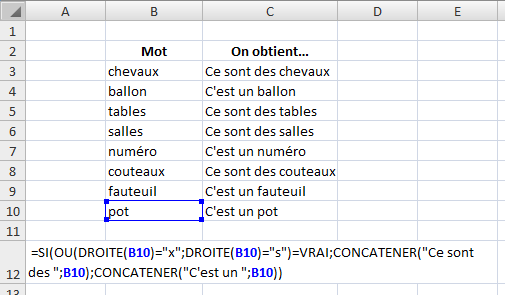
Je vais décrire un peu la formule. On a donc une condition pour savoir si le mot est au pluriel ou pas. Un mot au pluriel prend un s ou un x donc dans la condition SI on ajoute la fonction OU (soit un s soit un x). En suite si celle-ci vaut VRAI, ça veut dire que le mot est au pluriel et on afficher à l'aide la la fonction CONCATENER, une petite phrase.
Voilà, je vous ai proposé une utilisation très basique mais vous pouvez ainsi afficher des phrases en fonction des premiers ou derniers caractères.
MAJUSCULE et MINUSCULE
Que permettent-elles ?
Elles permettent de mettre soit en majuscule soit en minuscule tous les caractères d'une cellule.
Comment s'écrivent-elles et quels paramètres ?
Ces deux fonctions sont simples d'utilisation, elles ne prennent qu'un paramètre : le texte à transformer.
=MAJUSCULE(texte_à_transformer)
=MINUSCULE(texte_à_transformer)
Cette fonction peut servir à mettre les noms de famille en majuscule lors de la concaténation par exemple.
Des exemples pour illustrer
La fonction MINUSCULE peut être utilisée lorsque l'on a vu la fonction CONCATENER. En effet, on a fait une phrase qui prend en compte ce qu'entre l'utilisateur. Il aurait très bien pu mettre des majuscules aux mots entrés. L'utilisation de la fonction MINUSCULE aurait permis d'améliorer la présentation.
NOMPROPRE
Que permet-elle ?
Elle permet de transformer une chaîne de caractère en un nom propre. Je vous rappelle qu'un nom propre prend une majuscule et le reste est en minuscule. Cette fonction met donc une majuscule à la première lettre d'un mot et le reste du mot en minuscule, et ce, pour tous les mots du texte.
Comment s'écrit-elle et quels paramètres ?
Comme pour les fonctions précédentes, elle ne prend qu'un paramètre : le texte à transformer. A chaque espace, la fonction définit un nouveau mot et mettra donc une majuscule au mot.
=NOMPROPRE(texte_à_transformer)
Elle est donc très simple d'utilisation aussi.
Des exemples simples
NBCAR
Que permet-elle ?
Elle permet de compter le nombre de caractères présents dans une chaîne de caractère.
Comment s'écrit-elle et quels paramètres ?
Toujours la même chose, elle prend comme paramètre obligatoire le texte dont il faut compter les caractères.
=NBCAR(texte_à_compter)
Elle est souvent combinée à d'autres fonctions pour savoir où démarrer une recherche ou savoir où commencer à changer du texte.
Des exemples
Je vais vous proposer un exemple plus poussé à la fin des fonctions Texte pour comprendre l'utilité de celle-ci.
REMPLACER
Que permet-elle ?
Elle permet de remplacer dans un texte un mot par un autre. C'est ici que les autres fonctions vues précédemment seront utiles.
Comment s'écrit-elle et quels paramètres ?
Cette fonction prend quatre paramètres obligatoires. Le premier est le texte dans lequel on souhaite faire le remplacement. Le second est le numéro du caractère où commence le remplacement. Le troisième est le nombre de caractères à remplacer. Le quatrième est le texte de remplacement. Je rappelle que les quatre paramètres sont obligatoires.
Je pense que l'image parle d'elle-même. On va utiliser les fonctions de Texte pour trouver les numéros de caractères, on ne s'amuse pas à compter. De plus si on modifie la première colonne, le reste s'adapte automatiquement.
Voilà on en a fini avec les fonctions Texte. Il en existe d'autres plus ou moins utiles selon ce dont vous avez besoin mais je pense avoir présenté les plus utiles. Pour les autres, vous pouvez les utiliser et vous former seuls à l'aide d'Excel.
Ce classeur Excel contient tous les exemples utilisés dans cette partie. Il y a la base des exemples, à vous d'entrer les formules.
INTRODUCTION
Une petite introduction à ces fonctions de Date & Heure qui nous permettra de comprendre le fonctionnement de ces dates. A chaque fois que l'on entre une date ou une heure dans une cellule du tableur Excel, elle s'affiche selon un format (Heure ou Date). Si vous lui appliquer le format Nombre ou Texte, vous verrez d'afficher un nombre. On l'appelle le numéro de série et il est utilisé par Excel pour calculer la date et l'heure. Le numéro 1 correspond au 1er janvier 1900. En effet, Excel prend pour base le 1er janvier 1900 pour faire ses calculs. Le numéro de série, vous l'aurez peut-être compris, renvoie le nombre de jours passés depuis cette date. Au jour où j'écris ce tutoriel, en ce 23 juin 2010, le numéro de série est : 40352. Cela signifie qu'il s'est écoulé 40 352 jours depuis le 1er janvier 1900. On peut ainsi soustraire et additionner facilement des jours!
Et si on veut des heures précises ?
Alors Excel a pensé à tout, enfin celui qui l'a créé. Pour les heures, ce sont les chiffres après la virgule qui permettent de la définir. A midi (12h), il y a la moitié du temps de passé pour la journée. De ce fait, 12h correspond à 0,5. S'il n'y a pas de chiffre après la virgule l'heure est de 00:00:00.
Après avoir étudié le fonctionnement des dates, nous allons attaquer les fonctions. Nous pourrons ainsi développer le fonctionnement de celles-ci, mieux les comprendre et mieux les utiliser. Allez hop, c'est parti !
AUJOURDHUI et MAINTENANT
Que permettent-elles ?
Ces fonctions renvoient la date du jour (AUJOURDHUI) et l'heure (MAINTENANT) au moment où la feuille est calculée. Comme pour la fonction ALEA.ENTRE.BORNES, les valeurs changent à chaque fois que l'on effectue un calcul dans la feuille. L'heure se met donc à jour à chaque calcul effectué dans le classeur qui contient la formule. MAINTENANT peut aussi renvoyer la date du jour, pour avoir l'heure, il suffit de changer le format de la cellule en Heure au lieu de Date.
Comment s'écrivent-elles et quels paramètres ?
Ces fonctions ne prennent pas de paramètres et donc sont très simples d'utilisation.
=AUJOURDHUI()
=MAINTENANT()
L'application
Je ne peux que proposer un exemple très simple puisque ces fonctions sont à utiliser avec les autres pour mettre à jour les classeurs automatiquement à l'ouverture de ceux-ci. J'ai précisé le format utilisé à côté de chaque ligne.
Nous allons maintenant nous attarder à une série de fonctions qui fonctionne de la même façon, mais ne renvoie des valeurs différentes. Ces fonctions permettent d'avoir l'année, le mois, le jour, l'heure, la minute et la seconde d'une date. Ces fonctions sont les suivantes : ANNEE, MOIS, JOUR, HEURE, MINUTE, SECONDE.
ANNEE, MOIS, JOUR, HEURE, MINUTE, SECONDE
Que permettent-elles ?
Elles permettent de renvoyer un nombre correspondant à l'année (de 1900 à 9999), le mois (de 1 pour janvier à 12 pour décembre), le jour (de 1 à 31), l'heure (de 0 à 23), la minute (de 0 à 59) et la seconde (de 0 à 59) d'un numéro de série.
Comment s'écrivent-elles et quels paramètres ?
Toutes ces fonctions s'écrivent de la même façon et ne prennent qu'un paramètre obligatoire : le numéro de série. C'est-à-dire le numéro représentant la date que l'on souhaite analyser.
=ANNEE(numéro_de_série)
=MOIS(numéro_de_série)
=JOUR(numéro_de_série)
=HEURE(numéro_de_série)
=MINUTE(numéro_de_série)
=SECONDE(numéro_de_série)
On peut tout à fait écrire dans une formule : =ANNEE(AUJOURDHUI()) par exemple pour économiser la case où serait inscrit la date du jour. Mais il peut être intéressant de réserver une case pour la fonction AUJOURDHUI() et ensuite faire référence à cette cellule sur toute la feuille. Ainsi, le nombre de caractères dans une formule est moindre et c'est plus lisible.
Exemple d'application
Je vous ai montré un exemple simple, mais vous pouvez utiliser toutes ses fonctions dans des cas plus complexes.
JOURSEM
Que permet-elle ?
Elle renvoie le numéro du jour de la semaine d'une date.
Comment s'écrit-elle et quels paramètres ?
Cette fonction prend deux paramètres, un obligatoire le numéro de série et le second facultatif le type de retour. Je ne reviens pas sur le premier paramètre que vous connaissez. Par contre, le second prend trois valeurs différentes : 1, 2 ou 3.
A quoi correspondent ces valeurs de type de retour ?
Ce type de retour va dépendre de ce que vous utilisez comme classification des jours de la semaine. Avec le premier type (1), dimanche = 1 jusqu'à samedi = 7. Avec le second type (2), lundi = 1 jusqu'à dimanche = 7. Enfin, avec le dernier type (3), lundi = 0 jusqu'à dimanche = 6.
Type
1
2
3
Lundi
2
1
0
Mardi
3
2
1
Mercredi
4
3
2
Jeudi
5
4
3
Vendredi
6
5
4
Samedi
7
6
5
Dimanche
1
7
6
Ainsi vous pouvez utiliser le type que vous voulez. Par défaut, c'est le type 1 qui est utilisé.
=JOURSEM(numéro_de_série;[type_de_résultat])
Cette fonction va permettre de savoir si le jour de la date est un jour de week-end ou non ou alors un jour non travaillé par un employé. On peut aussi l'utiliser pour comparer deux dates, savoir si c'est le même jour ou non.
Pour afficher le jour en toutes lettres, on peut soit utiliser la fonction SI et mettre 6 conditions, ce qui nous donne une grosse formule. On peut aussi utiliser la fonction RECHERCHE avec un petit tableau dans lequel est associé à chaque chiffre le jour correspondant. Je vous laisse essayer cette méthode pour vous entraîner.
Un exemple théorique et un exemple concret
Pour l'exemple théorique, on prend des dates au hasard et on regarde quel jour de la semaine est renvoyé.
Bah, tu le prends où ton tableau de recherche ?
Si vous avez téléchargé le fichier d'exemple, vous avez la réponse, il est juste en dessous. Sinon, le voici :
Pour notre exemple plus concret, on va s'amuser à savoir quel était le jour de la semaine le jour de votre naissance.
Pour vérifier votre formule, vous pouvez afficher la date en format Date longue.
NO.SEMAINE
Que permet-elle ?
Cette fonction renvoie le numéro de la semaine (dans une année) d'un numéro de série (une date).
Comment s'écrit-elle et quels paramètres ?
Elle prend un paramètre obligatoire, le numéro de série et un facultatif. Le paramètre facultatif prend la valeur 1 si on veut faire commencer une semaine au dimanche et la valeur 2 si l'on veut faire commencer une semaine au lundi.
Si vous utilisez votre classeur Excel à titre personnel et si vous utilisez cette fonction pour faire des calculs entre les semaines, vous pouvez ignorer la norme européenne.
Des exemples d'application
DATE
Que permet-elle ?
Elle permet de renvoyer une date comme un numéro de série selon trois paramètres : l'année, le mois et le jour.
Comment s'écrit-elle et quels paramètres ?
Elle prend les trois paramètres précédemment cités comme paramètres obligatoires. On peut ainsi afficher des dates diverses.
=DATE(année;mois;jour)
Les exemples
Dans notre second exemple, on va pouvoir donner le nombre de jours qui sépare la date du jour de votre anniversaire.
On va analyser un peu comment on fait pour trouver ça. Je vous donne tout d'abord la formule que j'ai mise en C5. J'ai séparé la formule en deux pour plus de faciliter. L'autre est en D5 et on va l'analyser juste après.
Pour commencer à comprendre, il faut savoir ce qu'il y a en D5. En D5, on regarde le nombre de jours qui sépare la date d'aujourd'hui de votre anniversaire. Comment ? Ça on va le voir tout à l'heure.
On commence par la première condition. Si le nombre de jours est supérieur à 1, on met un "s" à "jours" précédé du nombre de jour. Si ça n'est pas le cas, il reste deux solutions : soit c'est la veille il ne reste plus qu'un jour soit c'est le jour même et c'est donc votre anniversaire. On refait une condition SI. Si D5 est supérieur à 0 (donc égal à 1), on ne met pas de "s" à "jour". Sinon (c'est qu'il est égal à 0), alors on affiche "Joyeux anniversaire".
On va maintenant s'attarder à ce qui est dans la cellule D5.
Premièrement on compare la date du jour et la date d'anniversaire. Comment ? Et bien c'est simple, grâce à la fonction DATE. La date du jour est égale à C2. Pour connaître la date d'anniversaire, il faut le jour et le mois de la date de naissance, mais l'année en cours. Donc on utilise la formule suivante :
DATE(ANNEE(C2);MOIS(C3);JOUR(C3))
Dans un premier temps comme je l'ai dit, on regarde si la date du jour n'est pas l'anniversaire. Si c'est le cas, on renvoie 0 (pour que la formule en C5 fonctionne). Si ce n'est pas le cas, on regarde si la date du jour est inférieure à la date d'anniversaire. Si c'est le cas, ça signifie que le prochain anniversaire de cette personne est dans la même année. Il est alors simple de savoir le nombre de jours qui sépare les deux dates par une simple soustraction. Si la date du jour n'est pas inférieure (c'est qu'elle est supérieure), on renvoie donc la valeur si faux de la condition précédente. L'anniversaire de la personne est passé dans l'année en cours, le prochain est donc l'année suivante. On va faire la différence de la date d'anniversaire de l'année suivante en ajoutant tout simplement 1 à l'année en cours. De cette façon :
DATE(ANNEE(C2)+1;MOIS(C3);JOUR(C3))
On obtient ainsi le nombre de jours qui sépare la date d'anniversaire et le jour actuel. Cette formule renvoie 0 si c'est l'anniversaire et ensuite le nombre de jour. Vous avez bien compris que si à la place de tous les D5 de la formule en C5 étaient écrits en entier, la formule serait trèèèèèèèès longue.
Voilà un exemple dans lequel on utilise la fonction DATE. Il en existe bien d'autre évidemment.
NB.JOURS.OUVRES
Que permet-elle ?
Elle renvoie le nombre de jours ouvrés compris entre deux dates.
Comment s'écrit-elle et quels paramètres ?
Elle prend deux paramètres obligatoires : la date de début et la date de fin. Un paramètre facultatif peut être renseigné, c'est la date des jours fériés de la période.
Les dates doivent être entrées en format date avec le numéro de série. Pour les jours fériés, vous pouvez créer un tableau qui référence tous les jours fériés de l'année. Ainsi, le paramètre "jours_fériés" sera renseigné grâce à ce tableau.
L'exemple
Je vous propose quelque exemple simple, il n'est pas utile de développer plus cette fonction. Elle est très utile pour compter le nombre de jours travaillés dans une période donnée et ainsi connaître le temps de travail des salariés.
J'ai utilisé comme jours fériés la liste suivante (jours_feries = G3:G12) :
SERIE.JOUR.OUVRE
Que permet-elle ?
Elle renvoie la date précédente ou suivant la date indiquée selon un nombre de jours ouvrés. Par exemple, on cherche à quelle date je vais avoir travaillé 100 jours à partir d'aujourd'hui.
Comment s'écrit-elle et quels paramètres ?
Elle fonctionne un peu comme la fonction précédente avec deux paramètres obligatoires : la date de début et le nombre de jours ouvrés. Les jours fériés sont encore présents en paramètre facultatif.
Je rappelle que les dates doivent être entrées sous forme de date et non de texte.
L'exemple de fonctionnement
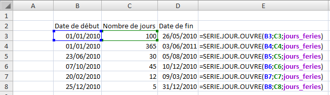
Ouf, pas fâché d'avoir terminé ce petit index :D . La liste est évidement non exhaustive, à vous de jouer en cherchant les fonctions dans Excel directement, sur le site de Miscrosoft ou sur le forum du Site du Zéro.
Si vous avez envie de voir une fonction apparaître dans ce glossaire, il suffit de le demander en commentaire ou par MP et je me chargerai de l'intégrer si elle me semble utile.
Voici une annexe au nom bien tordu et intellectuel mais pourtant, c'est vraiment essentiel pour tout utilisateur de Excel qui se respecte. :-°
Une bonne pratique, c'est une bonne habitude à prendre. Bonne dans la mesure où elle va vous rendre la saisie ou encore la lecture des données plus facile. Nous allons aussi voir comment résoudre d'éventuelles erreurs qui peuvent survenir lors d'un travail sur des formules.
Les feuilles de calcul peuvent être supprimées, déplacées ou renommées. Toutes ces actions sont disponibles par un clic-droit sur l'onglet de la feuille, en bas à gauche de la fenêtre.
Saisie et lecture des données
Évitez de commencer votre saisie dans la cellule A1. Plus généralement, dans le première colonne et la première ligne. Pourquoi ? Excel possède une zone de travail immense (des centaines de milliers de lignes etc.). Aujourd'hui, la taille des écrans permet à tous d'afficher sans avoir à faire défiler la zone de travail au moins 8 colonnes et 30 lignes. Dans ce cas, pourquoi tout tasser sur les étiquettes du quadrillage ? Aérez vos plages, donnez envie à quelqu'un d'y plonger son nez dedans !
Après, c'est une question d'esthétique, chacun fait comme il le souhaite mais concédez tout de même qu'il est bête de laisser de côté toute la zone centrale.
Évitez d'écrire dans la colonne I. La lettre I se confond facilement dans les conditions, et pire, se perd dans le code VBA. Sous Excel, ce ne sont pas les colonnes qui manquent. Faite un clic droit sur la colonne I et cliquez sur Masquer.
Finalisation du classeur
Afin de rendre vos classeurs plus heureux pour un lecteur extérieur, voyons comment enlever le quadrillage.
Allez dans l'onglet « Affichage », puis, dans le groupe « Afficher », décochez la case « Quadrillage »
Pour effectuer la même manipulation sous Mac, cliquez sur le menu « Excel » puis sur « Préférences ».
Une fenêtre s'ouvre :
Cliquez sur Afficher et décochez selon vos envies comme ci-dessus. Vous êtes invités à explorer ce menu par vous mêmes, il propose de nombreuses options qui pourraient ravir certains.
Enfin, plaçons-nous dans l'hypothèse où vous possédez un classeur avec de nombreuses entrées (des centaines, ou des milliers pourquoi pas). Pour le confort du lecteur, il est préférable de conserver les étiquettes de colonnes lors de la descente vers les profondeurs du classeur.
Nous allons créer ce qu'on appelle un volet. Les lignes en dessous du volet pourront être parcourues en profondeur avec la molette de votre souris ou l'ascenseur d'Excel alors que ce qu'il y a au dessus (les étiquettes de colonne par exemple, mais ça peut être aussi la date du jour) restent en place lors du défilement.
Cliquez en maintenant le bouton juste au-dessus de la barre de défilement vertical, le curseur se transforme en une ligne épaisse. Glissez vers le bas puis lâchez. Vous avez ainsi créé deux fenêtres de la même feuille de calcul et figé les valeurs dans la partie supérieure :
Pour revenir à une seule fenêtre, cliquez et glissez sur la barre qui sépare les deux parties et remontez tout en haut puis lâchez. Ou double-cliquez simplement sur la ligne.
Tôt ou tard, vous vous retrouverez pris de panique car votre formule affiche un résultat étrange, mêlé de majuscules, de dièses (#) et de slashs (/). Excel veut simplement vous dire que votre formule est erronée, et renvoie un message précis selon la faute commise. Voyons ensemble les cas d'erreurs les plus courants.
#DIV/0!
Lorsque vous rencontrez cette erreur, c'est que votre formule fait une division par 0.
N'oubliez pas que pour Excel, une cellule vide a pour valeur 0 !
#NOM?
Cela signifie que vous avez tapé une fonction que Excel ne connaît pas.
Voici un exemple de formule à erreur :
=PROD(A2;E4)
PROD n'est pas une fonction reconnue.
#VALEUR!
Votre formule utilise dans son calcul une valeur que Excel ne peut pas utiliser.
Voici l'exemple classique :
Excel ne peut pas faire 2 + 3 + Salut !
Normal, même vous ne le pouvez pas ! :p Alors il renvoie une belle erreur.
#######
Le nombre comprend trop de chiffre pour pouvoir être affiché avec cette largeur de colonne.
Il faut alors élargir la colonne, soit en cliquant et en glissant vers la droite, soit en double cliquant sur la même zone que le cliquer-déplacer. La colonne se met automatiquement à la largeur minimale pour afficher le texte des cellules.
Si vous avez suivi les premiers chapitres de ce cours, vous avez donc appris à vous servir de la base de votre tableur : créer un nouveau classeur, le remplir, l'enregistrer et/ou l'imprimer ne devrait donc pas poser de problème.
Mais ce n'est pas tout, même si nous ne l'avons pas vu dans le chapitre en question, je profite de cette annexe pour vous dire qu'une vérification grammaticale et linguistique est disponible sur Excel.
Dans un premier temps, cliquez sur le bouton « Grammaire et orthographe ». Une fenêtre s'affiche :
Le premier mot à corriger est déjà sélectionné et présenté sur la fenêtre du correcteur (1).
Une liste de suggestion est alors proposée, la première étant la meilleure (2).
Enfin, il est possible d'effectuer différentes actions sur la correction (3).
Voyons ces actions, qui nous intéressent le plus.
Ignorer : ignore la correction (pour le moment) ;
Ignorer tout : ignore toutes les corrections (pour le moment) ;
Ajouter au dictionnaire : en créant un nouveau mot ;
Modifier : accepter la correction proposée. Sélectionnez une autre suggestion et cliquez sur « Modifier » pour accepter celle en question ;
Remplacer tout : en cas de correction d'une expression complète, il est possible de modifier toute l'expression d'un coup ;
Correction automatique : il est possible de définir à Excel certains termes à remplacer lorsque vous écrivez des expressions (nous allons y revenir) ;
Option : affiche la fenêtre d'option de vérification (là aussi, nous allons y revenir).
Inutile de revenir sur les premières actions, qui, je pense, sont compréhensibles pour tout le monde. Néanmoins, je voudrais revoir avec vous les options de vérification et la correction automatique.
Les options de vérification
Cliquez sur « Options... ». Apparait alors une fenêtre des « Options Excel » :
Il est à présent temps de regarder de plus près l'onglet de Vérification.
Voyons donc, dans l'ordre, les différentes possibilités que nous offre Excel :
Options de correction automatique : il s'agit de la fameuse correction automatique. Nous y reviendrons juste après ;
Lors de la correction orthographique : certaines options sont cochées par défaut comme ignorer les mots en MAJUSCULE ou ceux qui contiennent des chiffres, généralement ce sont des noms propres vous appartenant. Ignorer les chemins d'accès aux fichiers, c'est mieux. Signaler les répétitions. Et une règle pour les Allemands (qui ne me concerne donc pas personnellement ^^ ).
D'autres options ne sont pas cochées : Majuscule accentuée en français. En général, je le fais, donc je le coche. Suggérer à partir du dictionnaire principal seulement, aucun intérêt.
De même, inutile de toucher aux différents modes proposés ;
Lors de la correction orthographique et grammaticale dans Excel : toutes les options de vérification. Vous pouvez y ajouter les statistiques de « lisibilité » ainsi que la correction des « règles de Grammaire et style » ;
Exceptions : créer des exceptions de vérification.
La correction automatique
Revenons donc à cette correction automatique. Cliquez sur ce premier bouton, une nouvelle fenêtre de « Correction automatique : Français (France) » apparait. Ce sont toutes les choses qu'Excel corrigera (sous entendu modifiera) dès que vous les aurez tapés dans la zone de travail.
Généralement, les options par défaut sont très utiles. Vous pouvez d'ailleurs en rajouter.
Regardez dans le cadre « Correction en cours de frappe ». Il s'agit des mots qui seront remplacés lors de la frappe. Par exemple, « (c) » sera remplacé par le sigle du copyright, (e) par le sigle de l'euro, etc.
Malgré une liste déjà longue composée de sigles, de smileys, d'abréviations bien connus ou autre erreur d'orthographe (espace mal placé, lettre mal placée, tiret oublié, etc.), vous pouvez en rajouter. Et c'est justement ce que nous allons faire !
Dans l'exemple de notre texte, « Cest » devait être remplacé par « C'est », nous allons le rajouter. Par chance, « Cest » est d'ores et déjà inscrit, il nous suffit de le faire remplacer par « C'est », de l'ajouter, puis de valider la fenêtre (ou de faire de même pour d'autres corrections automatique) :
Une fois la vérification du classeur effectuée, un petit message vous est transmis :
Recherche et Dictionnaire des synonymes
Recherche
Vous doutez d'un mot quelle qu'en soit la raison, cliquez sur « Rechercher ». Un module de recherche complémentaire s'ajoute à la zone de travail :
Vous pouvez alors rechercher sur Internet la définition du mot, le sens, l'orthographe, etc.
Dictionnaire des synonymes
Il y a une liste déroulante, cliquez dessus. Elle vous donne accès à d'autres listes de recherche et notamment la liste des synonymes, en fonction de votre langue (nous verrons les options de langue juste après).
Bref, ce module de recherche vous donne accès à un contenu assez divers qui vous accompagnera dans vos recherches en dehors de Google.
La traduction
Il est possible, grâce à ce bouton, de traduire tout le classeur, un texte sélectionné ou d'afficher une mini-traduction.
Voilà donc une fonctionnalité certes facultatif mais malgré tout utile dans Excel.
Profitez-en. S'inspirant de Word, cette fonctionnalité est sommes toute très puissante !
Parmi les fonctionnalités utiles du tableur Excel mais pas primordiales, il y a bien évidemment l'impression. Même si imprimer un classeur n'est pas aussi courant que d'imprimer un document Word, il est très utile d'en connaitre le procédé.
Les classeurs élaborés dans Excel sont parfois faits pour être directement imprimés. Il est donc intéressant de connaître cette fonction, ses paramètres, pour mieux l'utiliser.
Allons sur la page d'impression. Rendez-vous dans le menu « Fichier, puis cliquez sur « Imprimer ».
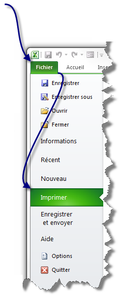
La partie gauche de la fenêtre donne accès aux paramètres de l'impression, et la partie droite à un aperçu avant impression :
Comme vous pouvez le voir, le premier groupe de bouton permet d'imprimer le nombre d'exemplaires voulu sur l'imprimante voulue.
Le second groupe permet de paramétrer l'impression de votre classeur.
Et avant toute chose, le troisième groupe, le plus gros, vous donne un aperçu avant l'impression.
Voyons cela plus en détails :
Voilà, vous savez désormais la marche à suivre pour imprimer votre classeur.
Ce tutoriel n'est pas terminé. Beaucoup de chapitres vont faire leur apparition. Par ailleurs, si vous pensez que des éléments nécessitent des clarifications, si vous souhaitez voir une fonctionnalité développée, n'hésitez pas à nous contacter. Si vous bloquez dans vos tableurs, le forum du site du zéro est un bon endroit !


 Télécharger le fichier liste_personnalisable.xlsx
Télécharger le fichier liste_personnalisable.xlsx La courbe sous Mac
La courbe sous Mac


{kind=link}
{kind=link}
{kind=link}
{kind=link}
{kind=link}
{kind=link}
{kind=link}
{kind=link}
{kind=link}
{kind=link}
{kind=link}
{kind=link}
{kind=link}
{kind=link}
{kind=link}
{kind=link}
{kind=link}
{kind=link}
{kind=link}
{kind=link}